| 魔法科高校の劣等生(27) 急転編 (電撃文庫) | |
| 佐島 勤 | |
| 株式会社ＫＡＤＯＫＡＷＡ (2018) | |
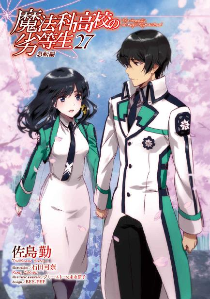
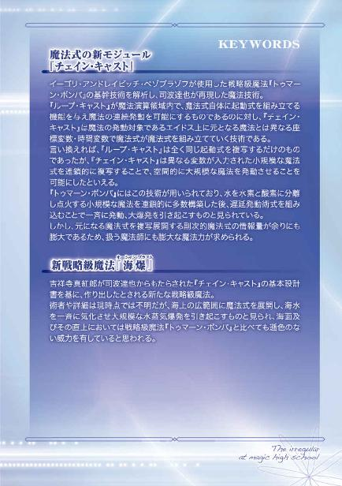
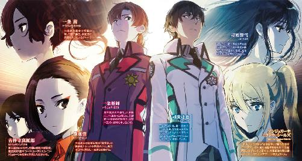
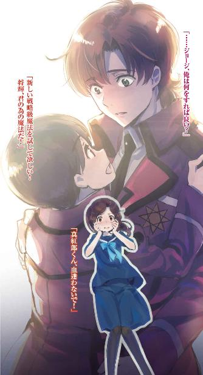
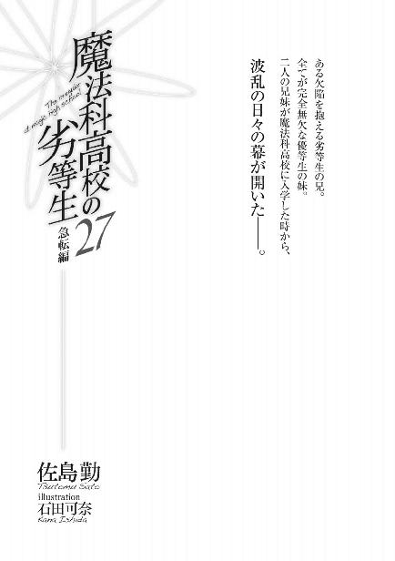
本作品を示すサムネイルなどのイメージ画像は、再ダウンロード時に予告なく変更される場合があります。
本作品は縦書きでレイアウトされています。
また、ご覧になるリーディングシステムにより、表示の差が認められることがあります。
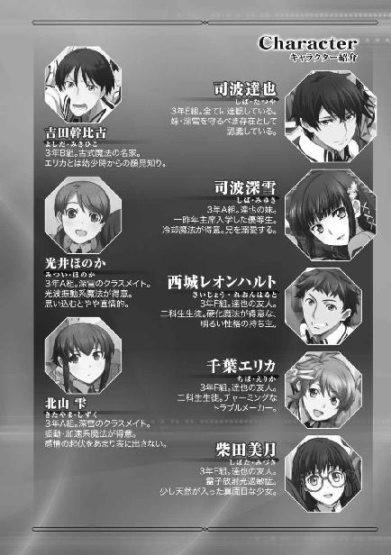
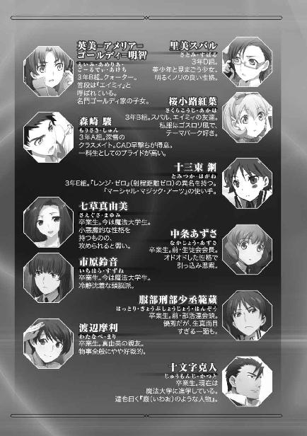
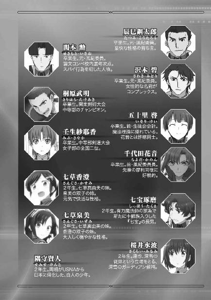
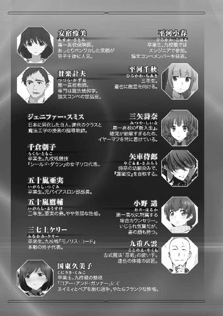
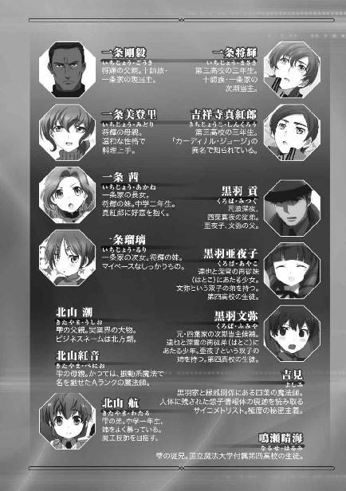
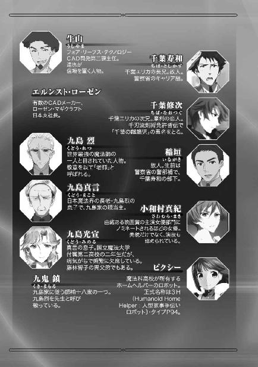
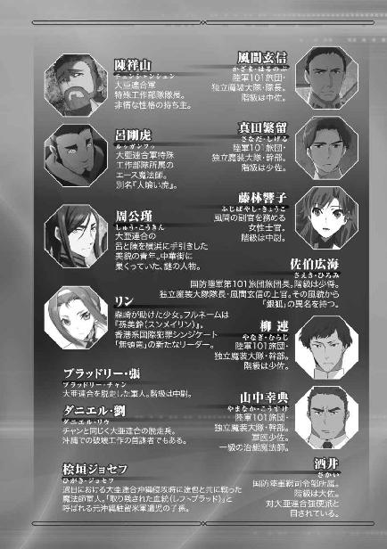
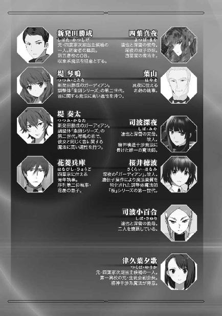
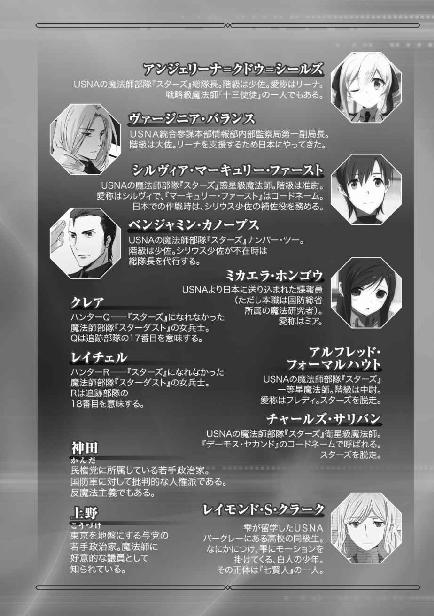
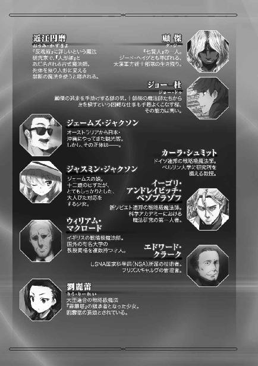
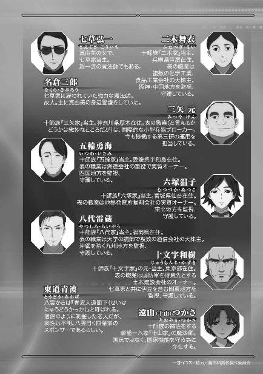
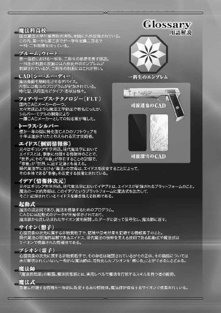
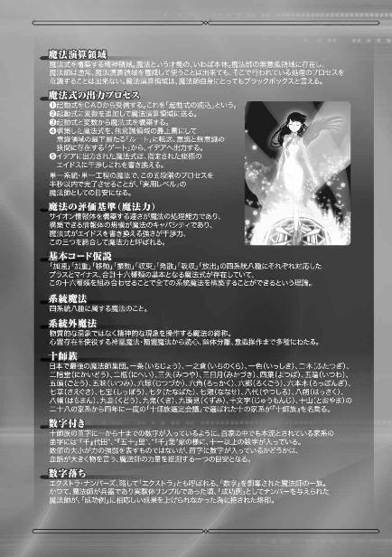
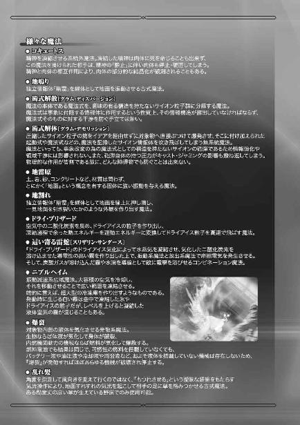
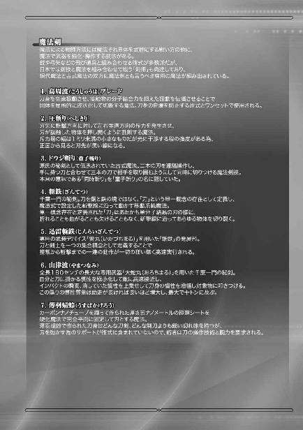
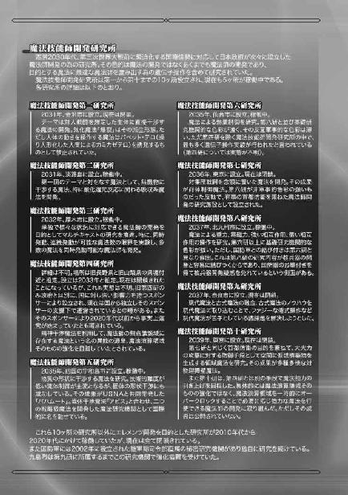
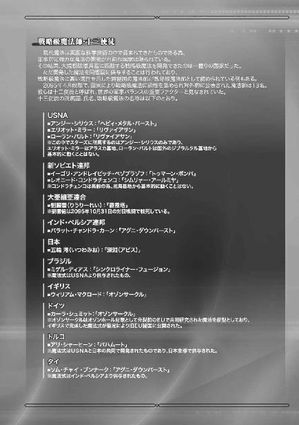
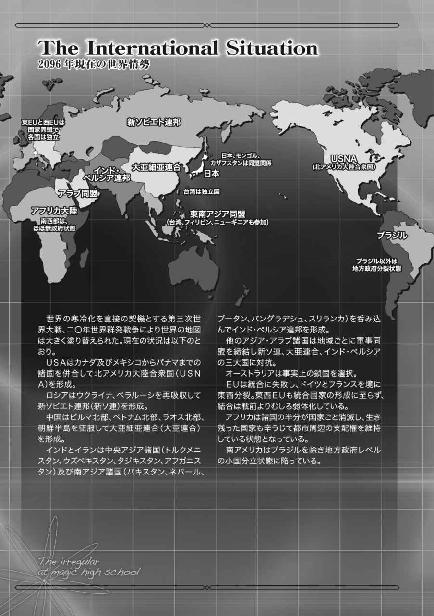
［１］
二〇九七年七月一日、夜。
ここ最近では珍しく、今夜は星が見えている。例年より随分早いが、梅雨明けが近いのだろうか。
水波は明かりの消えた病室の窓を開けて、空を見ながらぼんやりとそんなことを考えていた。
つい十分程前まで、この病室は若い女の子の声で賑わっていた。水波自身、「若い女の子」に他ならないが、普段からそんなに口数が多い方ではない。室内を明るいムードで満たしていたのは、お見舞いに来てくれた二人の上級生、深雪とエリカのお喋りだった。
水波が入院してから、深雪は一日と欠かさず彼女の病室に来ている。自分の主に毎日足を運ばせるのは水波にとって申し訳ないというより畏れ多く、彼女は何度も遠慮の言葉を告げているのだが、深雪は全く耳を貸さない。
まさか「来るな」とも言えず、自分の忠誠が認められている証拠だと水波は自分に言い聞かせて居心地の悪さに耐えていた。その反面、深雪が自分を気に掛けてくれるのが、水波は嬉しくもあった。
深雪は水波の主で、彼女が入院するきっかけになった事件にも関わっていた。深雪が水波を見舞うのに、何ら不思議は無い。だがエリカが病室に姿を見せた瞬間、水波は正直なところ、戸惑いを覚えた。
客観的に見て、水波とエリカは余り接点が無い。同じ上級生で比較してみても、ほのかのように生徒会で一緒に仕事をしているということもなければ、頻繁に生徒会室を訪れる雫のように顔を合わせる機会が多いというわけでもない。レオのように、部活の先輩・後輩という関係でもない。
水波がエリカと行動を共にするのは、ほぼ、深雪のお供をする下校時だけだ。それも、駅に向かう通学路で話し掛けられることはほとんどなく、言葉を交わすのは途中で喫茶店に寄る時くらいのものだった。
そのエリカが、いつものメンバーを伴わず深雪と二人だけでお見舞いに来た理由を、水波は何となく察していた。
多分、ボディガードの助っ人に来てくれたのだ。
達也は今晩、病室に姿を見せていない。「明日の夜はお見舞いに行けない」と、昨日の内に本人の口から聞いていた。何故来られないのかは説明されなかったが、深雪と別行動を取るのだ。きっと重要な任務を果たさなければならないのだろう。
達也の仕事内容を、水波が知る必要は無い。彼女に関係があるのは、もしその時間に病院が襲われても、達也は助けに来られないという点だった。
だからといって水波には、達也を責めるつもりは無い。本来、水波は守られる立場ではないからだ。水波が四葉家の魔法師として守らなければならない相手は深雪だけだが、達也はその婚約者であり、水波が達也に守ってもらうのは役割がひっくり返っている。少なくとも水波はそう思っていた。
達也は、自分が来られないことを気にしてエリカを寄越したのだろうか？
ふと脳裏に浮かんだ思い付きを、水波は慌てて打ち消した。この病院には四葉家配下の魔法師が警備員として詰めている。それを知っている達也が、幾ら腕が立つとはいえ同級生の女子生徒に用心棒を頼むはずがない。水波は自分の思い付きを「自意識過剰だ」と恥じた。──事実は、当たらずといえども遠からず、だったのだが。
なお深雪とエリカは、遊び気分で騒いでいたのではない。エリカが深雪に教科書の分からない箇所を教わる、賑やかな勉強会だった。
一高は明日から五日間、一学期の期末試験なのである。
それを考えて、水波は憂鬱になった。彼女の退院予定日は七月九日。それに対して期末試験は七月六日、土曜日まで。事情を考慮して別途試験を受けさせてもらえることになっているし、テストの評価が悪くても──テスト欠席による評価ゼロということになっても、進学するつもりは無いから実害は発生しない。最悪高校中退でも、水波は構わないのである。ただ「追試」という言葉の響きが、訳も無く鬱な気分を誘発していた。
水波は軽く頭を振った。彼女は底なし沼に足を取られる前に、別のことを考えようとした。
しかしその結果、新たな底なし沼に突っ込んでいくことになった。
『僕は君を死なせたくない！ 君から魔法を取り上げたくもない！ 頼む、僕と同じになってくれ！』
光宣の叫びが、水波の耳の奥で蘇る。セリフの内容だけでなく、その必死な声音までもが、たった今聞いたかの如くリアルに再現される。
光宣は本気だった。彼の言葉は、心からのものだったと水波には思える。光宣がパラサイトになったのは自分を助ける為──水波はそれを、理屈抜きで理解した。
「何故なのですか......？」
水波の口から呟きが漏れる。夜風に紛れたその問い掛けは、あの日から、夜ごとに繰り返されたもの。
答えをくれる相手は、ここにはいない。
そうと知りつつ、彼女は問わずにいられない。
──自分の為に、何故そこまでしてくれるのか？
水波が光宣と共有した時間は、わずか三日間。しかも先日再会するまで、半年以上顔を合わせていない。いや、会うどころか電話で話したこともメールを交わしたことも無い。
八ヶ月前の、わずか三日間のこととはいえ、水波は光宣のことをしっかり覚えていた。
この世のものとも思われぬ美貌を持つ、同い年の男の子と、共に過ごす。
その鮮烈な時間を、忘れられるはずはなかった。
深雪に匹敵する「美」を持つ異性。
同性の深雪でも、同じ時間、同じ場所にいるだけで、自分の中にその存在が刻み込まれていくように感じられるのだ。異性の光宣がより強烈な印象を残すのは当然ではないだろうか。
自分でなくても女の子ならば、光宣のような麗しい男の子と共に過ごした時間を忘れられるはずがない。それこそ深雪のような、極めて特殊な例外でなければ。──水波は誰にともなく、心の中で力説していた。
それは強がりでも誤魔化しでもない。彼女は本気でそう思っていた。
少なくとも、意識の表層部分では。
だから余計に、水波は不思議だった。自分が光宣を忘れられなかったのは自然なことだ。光宣の姿を強く心に刻みつけ、彼を自分にとって特別な存在だと思い込んだとしても、何もおかしくはない。自分くらいの年頃の女の子にはむしろ当然の成り行きだと水波は考えた。
だが自分が光宣にとっての「特別」になれるとは、水波にはどうしても思えなかった。
自分は異性に強い印象を持ってもらえるような、華のある美人ではない。どちらかと言えば地味な顔立ちだ。「よく見れば可愛い」くらいのことは言ってもらえるかもしれないが、光宣には到底釣り合わない。せいぜい深雪のおまけとして、記憶の片隅に引っ掛かっているくらいが妥当ではないだろうか。──それが水波の、正直な思いだった。
去年の十月、光宣と過ごした三日間、日付で数えれば四日間の記憶。そこに水波は意識を向けた。
（光宣さまと初めて会ったのは、去年の十月六日、土曜日の夕方。場所は九島本家......）
日付まですぐに思い出せたのが、水波は自分でも意外だった。
しかしすぐに、日付くらいは覚えていても不思議じゃないと考え直した。
光宣との出会いは、それほど衝撃的な出来事だった。
いや、「的」は必要無い。光宣と顔を合わせた瞬間、水波を襲ったのはまさに「衝撃」だった。彼女の心は、ショックに埋め尽くされていた。
単なる驚きではない。驚愕だけなら声を失うことはなかった。確かに光宣は驚嘆すべき美貌の持ち主だが、美しさだけなら、水波は彼に匹敵する美の持ち主と日常的に接していた。
（あの時のショックは、一種類の感情に分類できるような、単純なものじゃなかった......）
水波は心の中でそう呟いた。
驚きだけではない。
では他に何があったのかと、自問してみる。
その問いに、水波は答えられなかった。
あの時、自分が懐いた感情がどのようなものだったのか、水波は言葉にできない。
自分が懐いた想いの、正体が分からない。
（......次にお目に掛かったのは、その翌日）
奈良の葛城古道から橿原神宮、石舞台古墳、天香具山、そして奈良公園。数々の破壊工作を仕掛けた大陸出身の古式魔法師・周公瑾と、それを支援する国内の魔法師組織『伝統派』を探すことが目的だった。それに光宣と二人きりではなく、達也と深雪も一緒だったが、端から見ればダブルデートのように見えたかもしれない。
──いや、いちゃついていたのは達也と深雪の二人で、自分と光宣は決してそのような真似はしなかったはずだ。
水波はふと心を過った「ダブルデート」というフレーズを、頭を振りながらすぐに打ち消した。
たとえ葛城古道で、カップル用のロボットスクーターに光宣と相乗りしたとしても。
たとえ奈良公園で、何時の間にか深雪たちと離れ、光宣と肩を並べて歩いていたとしても。
（......次！ 次はっ！）
自分の足下にせっせと地雷を埋めている自身の姿を幻視した水波は、慌てて記憶の再生をスキップさせた。
光宣と再会したのは二週間後、二〇九六年十月二十日、土曜日。──やはり、曜日だけでなく日付まで覚えていた。
京都駅で再会した時は、初対面でないにも拘わらず、しばらく口が利けなかった。目も合わせられなかった。一緒にいた一高の先輩たちが驚いてくれたので目立たずに済んだが、同行者が達也と深雪だけだったら奇妙な態度だと思われていたかもしれない。
巡った場所は大原と清水寺、金閣寺。二週間前と同様、周公瑾の手掛かりを探しに行ったのだが、観光気分がゼロだったと言えば噓になる。奈良を捜索した前回と違って、あの日は敵と戦う状況が発生しなかったからかもしれない。別行動を取ったエリカたちは周公瑾に与する古式魔法師から攻撃を受けたが、水波のグループでは戦闘が無かった。
もちろん、ただ遊んでいたわけではない。清水寺の参道に隠された『伝統派』の拠点を突き止め、周公瑾の行方に関する大きな手掛かりを摑んだ。だがその功績は実質的に達也が一人で成し遂げたもので、深雪と光宣はアシスタントとして貢献したが、水波自身は本当にただついていっただけだった。
（......あのお店の湯葉鍋、美味しかったな......）
自分が役立たずだったという記憶から思わず逃避してしまう。
そして咄嗟に思い浮かべたのが食事のことだったという事実に、水波はダブルでショックを受けた。「自分はそんなに食いしん坊だったのだろうか」と。
衰弱による一時的な機能障害から回復して自由な動きを取り戻した両手で顔を覆って俯き、水波は記憶の再生を止めた。
回想の再開には、秒針が二回りする以上の時間を要した。
（......翌日は、光宣さまが急に熱を出されて......）
光宣がいきなり体調を崩したのには驚かされた。病気がちと聞いてはいたが、前日まで身体が弱いような素振りは見られなかったから、心の準備ができていなかった。
しかし驚愕が一段落してすぐ、今度は使命感が水波の中に湧き上がった。
メイドは看護師ではないが、病に伏した主人一家や客人のお世話をするのは、メイドの務めに含まれる。
今にして思えば、「前日、役に立てなかったから」という面もあったに違いない。
ただ張り切ってはみたものの、具体的には寝ている光宣を見ていることしかできなかった。
光宣を見詰めていた眼差しを彼本人に指摘されて羞恥に悶えたりもした。だが光宣が眠ってしまってからは、彼の容態が急変するまで、穏やかな気持ちで隣に付き添っていられた。
あの時にも思ったが、改めて考えてみても不思議なことだ。その日の二週間前、水波は深雪と一緒に入った温泉で非常に気疲れした覚えがある。状況が違うので単純に比較はできないが、一般的に考えれば異性と二人きりでいるより同性と二人でいる方がリラックスできるはずだ。
ましてや光宣は、深雪に匹敵する美貌の持ち主。魔法師としても超一流でありながら、性格は温厚で少しも偉ぶったところがない。眉目秀麗、性格温厚、知勇兼備。九島光宣は、同じ年頃の女の子なら意識せずにはいられない、美少年であり好青年だった。
だから余計に、のんびりとした気分でいられた自分が水波は不思議だった。前日、再会した時にはあれ程ドキドキしていたのに、あの日は二人きりになっても胸が熱くなったり息苦しさを感じたりすることはなかった。
一日掛けて慣れたから？ 確かにそういう面もあっただろう。
しかしそれだけとは、水波には思えなかった。
メイドの義務感？ だったらむしろ緊張していたはずだ。
あの時、自分が考えていたこと、感じていたことを水波は思い出してみた。
光宣の枕元に座って、自分は......。
（......ううん、違う。私はあの時、リラックスなんかしていなかった）
改めてあの日の自分を振り返り、水波は自分の気持ちが大きく揺れていたことを思い出した。
光宣の顔を知らず知らず見詰めていて、それを光宣本人に指摘されて羞恥に悶えた。
光宣が眠った後は、彼が寝ている隣で寛いでいた。
だがあの時も、自分は同じ疑問を覚えた。
──何故、同い年の男の子の隣で寛いでいられるのか。
そして水波は、自分の気持ちに気付いた。
（私は光宣さまに、自分と同じものを感じていた......）
最初に見付けた気持ちは、親近感。
（だから、なのだろうか......？ 私は光宣さまに惹かれていた）
その想いに気付いて、水波は緊張し、赤面した。最初とは別の意味で恥ずかしくなった。
何故それを、忘れていたのだろうか？
（......その後すぐに、光宣さまの容態が悪化したからだ）
羞じらいも自分の気持ちも忘れる程、水波は激しい動揺に見舞われた。
光宣の苦しみを和らげる為に何をすべきか、誰を頼るべきか、それしか考えられなくなった。
自分の想いを忘却してしまう程に。
（もしかしたら、光宣さまも同じ......？）
光宣も水波に、自分と「同じもの」を感じていたのだろうか。
光宣もあの時の彼女と同じように、相手を──水波を治してあげたいという気持ちでいっぱいなのだろうか。
（でも、何故......？）
光宣が水波と同じように感じて同じような気持ちを懐いたのだとすれば、彼の行動が理解できるような気がすると、水波は思った。
しかしそこで、思考は最初の疑問に戻ってしまう。
自分が光宣にとっての「特別」になれるとは思えない。
光宣は何故、人であることを捨ててまで、自分を治そうとしてくれるのだろうか......？
幾ら考えても、水波は答えを見付けられなかった。
◇ ◇ ◇
深雪が水波の入院している病院を出たのは二十一時過ぎのことだった。一般病棟の面会時間は本来二十時までなのだが、無理を言って消灯時間まで病室にいさせてもらったのである。
新たなパラサイトの侵入を阻止すべく、座間基地に着陸した米軍輸送機を急襲した達也は、既にミッションを完遂し自宅のマンションに戻っている。「迎えに行こうか」というメールを受け取ったのも、深雪がお見舞いを切り上げた理由の一つだ。彼女が病院でグズグズしていたら、達也は深雪が遠慮しても迎えに来てくれるだろう。「仕事で疲れているに違いないお兄様に、そんな手間は掛けさせられない」と、深雪は思ったのだ。
とはいえ夜も、もう遅い。深雪一人でロボットタクシーに乗ったりはしない。
「夕歌さん、わざわざすみません」
「良いのよ。私も帰るところだったから」
自走車に乗り込んですぐの会話からも分かるとおり、深雪は四葉分家の一つ、津久葉家の次期当主である津久葉夕歌の車に同乗させてもらっていた。──なおエリカは、千葉家の門弟が迎えに来ていた。
夕歌は現在、魔法大学の院生だ。学部を卒業したのは今年の三月だが、一昨年から今の研究室に所属していた。魔法学の研究は機械だけでは進められず、魔法師による実践（実験）が不可欠である為、優れた魔法技能の持ち主は学生でも厚遇を受ける。夕歌が所属している研究室は四葉家の援助を受けている上、彼女は魔法師の中でも希少な精神干渉系魔法の使い手なので、教授から三顧の礼で迎え入れられたのだった。
深雪と夕歌を乗せた自走車は、深雪が五月に引っ越したばかりのマンションで駐まった。地下駐車場で、深雪だけでなく夕歌と、運転手を務めていた夕歌のガーディアン・桜崎千穂も車から降りる。二人はつい最近、深雪に約一ヶ月遅れで、このマンションに引っ越してきたのだった。
このビルは四葉家の東京本部として建てられた。東京を生活の拠点とする分家の次期当主がここに入居するのは、本家の意向に沿うものだ。もう一人の分家次期当主である新発田勝成も、防衛省を退官して自宅が内部検査の対象にならなくなった暁には、このビルに転居する予定になっている。
「ありがとうございました」
車を降りた深雪が、夕歌と千穂に軽くお辞儀する。
「どういたしまして。今度一緒にお食事でも如何？」
千穂は無言の会釈で応え、夕歌は笑顔で社交辞令を返した。
「ええ、予定が合いましたら是非」
そう言って、深雪は夕歌たちとエレベーターホールで別れた。深雪は最上階への直通エレベーターに一人で乗り込む。ケージが止まり扉が開くと、達也が玄関のドアを開けて待っていた。
「お帰り」
「......ただ今戻りました」
達也の出迎えに恐縮しながら、それでも頰を緩めて深雪は玄関を上がる。
二人はそのままリビングに直行した。ただし、腰を下ろしたのは達也だけだ。
深雪はハンドバッグをソファに置いただけでキッチンへ向かう。いつもどおり、自分が寛ぐより先に達也の飲み物を用意しに行ったのだ。
深雪は疲れている素振りを全く見せず、いつもどおり丁寧に手で淹れたコーヒーを達也の前に置いた。自分は達也の向かい側に座る。隣を遠慮したのは、エプロンを着けたままだったからだろう。
ここで達也が、いつもと違う振る舞いを見せる。彼はカップを持って立ち上がり、深雪の横に移動した。
深雪が戸惑いの眼差しを達也に向ける。だがすぐに、視線を自分のカップに移した。俯き加減に浮かべた微笑みは、喜びと羞じらいを同時に表していた。
だらしなく笑み崩れた──と自分では思っている──顔を柔らかく引き締め、深雪は顔を上げて達也に目を向けた。
「お兄様、お疲れ様でした」
深雪は達也に、仕事の成否を訊ねなかった。
達也の勝利を盲信しているから、ではない。
もちろん深雪は達也が勝利し、成功することを疑っていないが、今は勝敗・成否に関係無く最愛の兄に安らぎの一時を捧げる場面だと、ごく自然に考えていたからだった。
「深雪もご苦労様。水波の様子はどうだった？」
「日常動作のレベルでは、すっかり快復しているように見えました」
「そうか。昨日はまだ、ぎこちないところがあったんだが」
「はい。それも全く目につかなくなっています」
達也は一安心という表情で、「そうか」と言いながら頷いた。
深雪が小さく息を吸う。
垣間見える、わずかな緊張。
それだけで達也は、深雪が何を告げようとしているのか気付いていた。
「光宣君も、姿を見せませんでした」
「文弥、そして九島閣下と一戦交えたばかりだ。パラサイトの治癒能力で怪我は消えても、疲労は残っているのだろうな」
今にも光宣の手が水波に迫っているのではないか、という懸念。それを達也が払拭して見せたことで、深雪の顔に貼り付いていた微かな強張りが消える。
「それに閣下を死なせてしまったことで、光宣はますます身動きが取りづらくなったのではないか。これまでは十師族だけを相手にしていれば良かったが、今後は国防軍が光宣の捜索に加わるだろう」
「国防軍が、ですか？」
「九島閣下は引退後も国防軍内部に大きな影響力を持っていた。去年、パラサイドール事件で失脚した後も、閣下を慕う軍人は少なくないはずだ。長い時間を掛けて醸成された忠誠や信奉の心は、一度の事件で消えてしまうものではないからな」
そもそもパラサイドールの開発は、やり方がまずかっただけであって、そのコンセプトは軍の論理に照合するなら間違っていない。人に害を為す妖魔を兵器として用いることにリスクはある。だがピクシーという身近な実例を通じて、パラサイドールとの共存は不可能ではないと証明されている。少なくとも達也にとって、それは疑いようのない事実だった。
とはいえ、人間に寄生しているパラサイトは危険な存在だ。致死性が高く治療が不可能な病原体のキャリアと同じ種類のリスクがある。達也が光宣を敵視するのも、水波にパラサイトを感染させようとしているからに他ならない。
事情を詳しく知る軍人は、パラサイドールとパラサイトを分けて考えるに違いない。士官は「脳筋」では務まらない。軍事指揮官には無責任な傍観者よりもシビアなインテリジェンスが必要とされる。
他方、詳しい事情を知らなければ、そもそも九島烈に対する崇敬の念を失う理由は無い。九島烈は国防軍内部の権力闘争の犠牲になったと考えている者も、意外に多いのではないだろうか。国防陸軍第一師団所属・遊撃歩兵小隊、通称『抜刀隊』を中核とする九島烈のシンパは、結構な人数に上ると推測される。
「お兄様は、光宣君が首都圏に再侵入するのは難しいとお考えなのですか？」
「何もなければ、難しいだろう。だが残念ながら、今は......」
「......具体的なケースを、お兄様は想定されているのですか？ わたしたちは何を警戒すべきなのでしょう？」
言い淀んだ達也に踏み込んだ質問をするのを、深雪は一瞬、躊躇う。だが結局、彼女は訊かずにいられなかった。水波の──彼女たちの大切な家族の安全に関わることだからだ。
「現在進行している大亜連合と新ソ連の軍事衝突。そこで重大な局面の変化が起これば、国防軍の目は北に向く」
深雪の質問に込められた気持ちが、達也にも分かったのだろう。彼はもう、言葉を濁さなかった。
「その混乱に乗じて、光宣君が忍び込むと？」
「その可能性が高いと思う。具体的には、大亜連合の敗北直後。そこが山になると考えている」
達也の眼差しは深雪の瞳に向けられている。だが深雪には、達也の目が未来を見詰めているように感じられた。
◇ ◇ ◇
防衛大学校の学生は今も昔も寮生活が原則だ。だが魔法師の士官を養成する特殊戦技研究科の学生は、入寮を免除されている。現在四年生の千葉修次は自宅から、二年生になった渡辺摩利は校舎の近くにアパートを借りて防衛大に通っていた。
しかし二十一時過ぎという夜遅い時間にも拘わらず、今二人がいる場所は修次の自宅でも摩利のアパートでもなかった。
彼らは現在、国防陸軍朝霞基地の一室、作戦会議室の一つにいた。
室内には四十人前後の士卒が集まっている。その内の三十人は遊撃歩兵小隊、通称『抜刀隊』の構成員だった。残りは第一師団の偵察、補給、整備、通信各小隊の隊長または補佐役の下士官だ。
修次と摩利は、遊撃歩兵小隊に仮配属された身分でこの会議に参加していた。
「......これは、私闘ではない」
前で喋っているのは『抜刀隊』の小隊長。この会議を呼び掛けたのも彼だ。ただ会議を企画したのはもっと上の人間である。小隊長が話している内容が、それを雄弁に物語っていた。
小隊長は会議の冒頭で、九島烈の死因が他殺であること、その犯人が孫の九島光宣であることを語った。そして、どよめきが静まったのを見計らい、遊撃歩兵小隊は光宣の捕縛に出動すると告げた。
「犯罪者の捜索と逮捕は警察の職務だ。軍の仕事ではない。だが九島光宣は外国人工作員に使嗾されている、または共謀関係にある可能性が高い。工作員の所属国は判明していないが、本任務は破壊工作に対する予防的出動と位置づけられる」
今度は、ざわめきは起こらなかった。全員が緊張した面持ちで、衣擦れの音一つ立てず小隊長に視線を向けていた。
「だが、そのような大義名分が無かったとしても、身内でありながら閣下を手に掛けた九島光宣を放置しておくことはできない！」
それまで抑制的だった小隊長の声から、激しい感情が迸る。
「ましてや犯人の九島光宣は、パラサイト化している。これは、信頼の置ける筋からの情報だ」
息を吞む音が、そこかしこから聞こえた。遊撃歩兵小隊は去年の二月に、パラサイトを捕獲する目的で出動したことがある。数人の隊員が最後列の修次へ振り返ったのは、その際に修次と自分たち小隊が一触即発の状況になったことを思い出したからだろう。
「閣下の仇は人に仇為す魔物だ。我々は二重の意味で九島光宣を放置しておけない。そうだろう！」
そのとおりです！ という応えが一斉に湧き上がる。その声を上げたのは、遊撃歩兵小隊の隊員だけではなかった。
「捜索には近畿、中部の各師団及び公安の協力も得られることになっている。遊撃歩兵小隊は東富士演習場で待機、九島光宣の潜伏場所が特定され次第、現地に急行する。当基地出発は明後日、七月三日〇九〇〇だ。以上」
修次と摩利は抜刀隊の隊員と共に立ち上がり、小隊長に敬礼で応えた。
◇ ◇ ◇
達也と深雪は今、兄妹二人きりで暮らしている。家の中に彼らを監視・牽制する目は無い。
達也と深雪は兄妹だが、表向きは従兄妹ということになっており、婚約者同士でもある。家が決めた婚約者だが、少なくとも深雪は達也を異性として愛している。
達也は深雪のことをまだ妹としか見られないと言っているが、彼には元々モラルの観念が薄い面がある。あるいはこれもまた、人造魔法師実験の後遺症かもしれない。
深雪が本気で望めば、達也は彼女を拒まないだろう。最後の一線を踏み越えることにも、大して抵抗しないに違いない。文字通りの意味でベッドを共にする程度なら、達也は何時でも頷くと思われる。
深雪はそれだけでも嬉しいはずだ。また彼女には、間違いを恐れる理由も無い。だが今でも二人の寝室は別々だった。深雪は達也に、ベッドどころかベッドルームを一つにすることも求めていない。
感情の暴走を恐れているという面は確かにある。だがそれ以上に彼女の歯止めとなっているのは、間違いなく水波の現状にあった。
水波は自分を守る為に死にかけた。深雪はそう思っている。またそれは、客観的な事実でもある。
その後遺症で水波は今、入院しているのだ。自分が浮かれている場合ではない。幸福に浸るのが後ろめたい。この思いが、深雪の気持ちにブレーキを掛けていた。
だから、と言うと多少語弊はあるが、深雪は自分の部屋で一人、眠りにつこうとしていた。
ベッドに座り、音声コマンドで照明を消す。
そこでふと、深雪は先程達也と交わした会話を思い出した。
光宣は今まで以上に、厳しい状況へと追い込まれている。それでも彼は、水波のことを諦めないだろう。達也はそう言っていたし、深雪も同じ意見だ。
光宣は本気で水波を愛しているのだろう。達也の意見は確認していないが、深雪はそう考えている。
愛を自覚するのに、時間は必要無い。
深雪は自身の経験から、それを知っている。
だが何故そうなったのか、理由が理解できない。
深雪は五年前の沖縄でこの上なくドラマティックな体験をして、自分の気持ちに気付いた。心を入れ替えた、の方が妥当かもしれない。
だが、光宣は？ 水波と光宣の間には、特別な出来事はなかったはずだ。それとも水波を光宣の看病に残したあの日に、何かあったのだろうか？
あの日、光宣は急に容態を悪化させて、水波は達也に電話で対処法を訊ねた。普通に考えれば、水波には光宣の病状を改善することも緩和することもできなかった。
水波はただ、光宣の側についていただけ。
（だけど......光宣君にはそれが、特別なことだったのかもしれない）
他人には何でもない出来事でも、本人にとっては忘れられない思い出になる。深雪にも覚えがあることだ。他人には分からない、光宣にとっては忘れられない大切な思い出を、水波は自分でも知らないうちに与えていたのかもしれない。
それが何か、深雪には分からない。彼女にはまだ、推測の糸口も見えていない。
ただ光宣を動かしているものが何であれ、彼の思いどおりにさせるわけには行かない。
光宣の最終的な目的が水波の治療にあるのは疑っていない。
しかしその為の手段は、水波を人間以外の存在に変えてしまうというものだ。
桜井水波という個体の命は保てるかもしれない。だが桜井水波という名の人間はいなくなってしまう。意識の継続性が何処まで保たれるのかも分からない。
それで、死なずに済んだと言えるのか？
人としては、死んだも同然ではないのか？
残されるのは、水波の亡霊に過ぎないのではないか？
そんなことは認められない。
絶対に。
（でも......。水波ちゃん本人は、どう思っているのだろう？）
達也は魔法を封じれば命の危険は無いと言った。深雪はそれを信じている。
だが水波はどうだろうか。懸かっているのは彼女自身の命だ。水波に対して、達也の言葉を疑うなと強制はできない。深雪にとっては疑う余地の無い確定した未来でも、他の人間にとっては不確実な予測に過ぎないのだから。
水波は達也による説得の甲斐あって、「魔法を諦める」という治療方針に同意している。
しかし、もしかしたら心の奥底では「魔法を失いたくない」と思っているかもしれない。光宣は「水波から魔法を奪う権利は無い」と訴えた。達也を絶対的に支持する深雪でも、あの瞬間、光宣の発言に共感を覚えたのは否定できない。魔法は、魔法師にとって手足も同じだ。片腕を切除しなければ命を失うと分かっていても、悩まない人間はきっといない。
もしかしたら水波も、本心では、光宣と同じように考えているのかもしれない。
──魔法を失うより、パラサイトになることを選ぶ。
（それが水波ちゃんの本音だったとしたら......？）
ベッドに座った態勢で、深雪は頭を振った。長い髪が背中から零れ、俯き加減になった深雪の顔を闇から隠す。
深雪は自分に、そんなことはあり得ないと語り掛けた。
手足を無くすのは確かに怖い。だが心臓を失うのはもっと怖い。魔法を守る為に「人であること」を諦めるのは、片腕と心臓を引き換えにするようなものではないのだろうか。
普通なら、そんな選択はしない。もしそのような決断に至るとすれば、プラスアルファとして、心臓に匹敵するほど貴重なものが手に入る場合だけだ......。
（水波ちゃんにとって、光宣君がそれだけの価値を持つ相手だとしたら......？）
──例えば、水波を己自身に、光宣を達也に置き換えたなら、自分はどうするだろう？
（わたしは人であることを捨てて、お兄様の手を取ることを選ぶ）
その答えを出すのに、深雪は迷わなかった。それは彼女にとって、当然の結論だった。
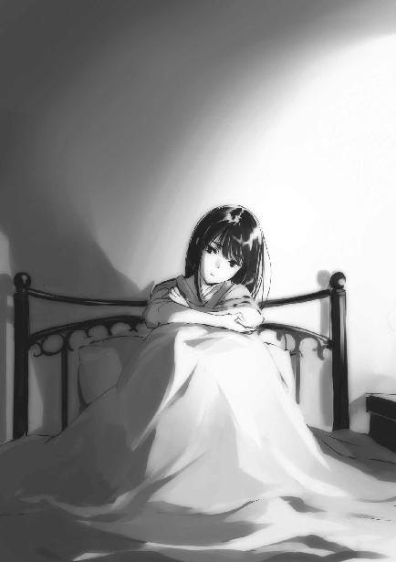
深雪が結論を出せずにいるのは、水波にとって光宣がそれほど大切な存在になっている可能性はあるのか、という点についてだ。
光宣の容姿に心を動かさない女の子は、多分いない。深雪自身も初めて会った時には、思わず目を奪われてしまった。達也という心に決めた男性がいなければ、ほのかな恋心くらいは懐いたかもしれない。
だが恋愛は、容姿が全てではない。男性のことは分からないが、女の子はそんなに単純じゃない、と深雪は思っている。少なくとも自分は、たとえ達也がいなくても見た目だけで恋人を選ぶつもりは無い。そこはおそらく水波も同じだ。一目惚れを否定するつもりは無いが、あれだってきっと、外見だけで恋に落ちているわけではない。外見から滲み出る内面を引っくるめた、その人の総合的な印象に恋をするのではないか、というのが深雪の意見だ。
光宣の為人を詳しく知る時間は、水波には無かったはずだ。光宣に一目惚れしたような素振りも、水波には見られなかった。
前回京都で別れた後、水波が深雪の前で光宣を話題にしたことは無い。
水波は余りお喋りではないが、隠し事もそれほど得意ではない。ポーカーフェイスを装っていても、近くにいれば案外分かり易かったりする。例えば水波が深雪と達也の距離感に辟易している時は、その気分が深雪にも達也にも筒抜けになっていることが多い。実は、気付いていないふりをしているのは深雪や達也の方だったのである。
その水波が、先日再会するまで、光宣に対する好意を深雪たちに感じさせなかった。
意識の下ではどうだったのか分からないが、少なくとも意識的には、水波は光宣に恋をしていなかった。この点は自信を持って、深雪は断言できる。
（でも、今まで意識していなかった気持ちに気付いて、それがお兄様に対する私の気持ちと同じ種類のものだったとしたら......）
余り考えたくはないが──、
──もしかしたら、水波が光宣を選ぶ未来もあるかもしれない。
深雪は小さく身震いして、夏布団の下に潜り込んだ。
［２］
現地時間七月一日十七時、日本時間七月二日午前八時。
ＵＳＮＡニューメキシコ州ロズウェル郊外に位置するスターズの本部基地に第五隊隊長、ノア・カペラ少佐が帰投した。
「カノープス少佐他二名の護送、及び『ホースヘッド』のハワイ基地移送を完了しました」
「ご苦労だった。今日はゆっくり休みたまえ」
基地司令ポール・ウォーカー大佐が報告に訪れたカペラを労う。
しかしカペラは、デスクの前から動こうとしなかった。
「少佐、何か言いたいことがあるのかね？」
ウォーカーのセリフは発言を促す為のものだ。カペラが何事か述べたがっているのは、見ただけで明らかだった。
「大佐殿。小官は『イリーガルＭＡＰ』を自由にすべきではないと考えます。あの者たちの暴走でどれ程大きな損失が生じたか、大佐殿もお忘れではありますまい」
イリーガルＭＡＰ。非合法魔法師暗殺者小隊（illegal Mystic Assassin Platoon）。表沙汰にできない暗殺任務を専門に請け負っていた魔法師部隊で、『コールサック』『コーンネビュラ』『ホースヘッド』の三分隊で構成される小隊だ。
暗殺専門部隊だけあって、イリーガルＭＡＰの対人戦闘能力は極めて高い。だがカペラが言うように、これまでたびたび通常の部隊であれば命令違反を問われる暴走事件を引き起こしている。──命令違反に該当しないのは、正規の命令に基づいて出動する部隊でないからに過ぎない。
彼らの仕事の後始末の為にスターズが大きな犠牲を強いられたのも、一度や二度ではない。先代シリウスを失った『アークティック・ヒドゥン・ウォー』も、彼らが新ソ連秘密部隊との間で繰り広げた暗殺合戦が一つのきっかけになったと見られている。
幾ら腕が立って仕事ができても、「シリウス」の犠牲はさすがに看過できるものではなかった。その上、あの戦争で失われたのはシリウス一人ではなく、恒星級隊員に何人もの欠員を生じさせたのだ。新ソ連との間の戦後処理が一段落した後、上層部はイリーガルＭＡＰ全員のミッドウェー監獄収監を決定した。これが七年前のことである。
「だが、彼らの任務遂行能力は確かだ」
「過剰殺戮は任務を正しく遂行したとは言えません」
引く気配がないカペラに、ウォーカーはため息を吐いた。階級はウォーカーが大佐、カペラは少佐だが、年齢・軍歴はカペラの方が上だ。スターズ恒星級隊員最年長のカペラに対しては、ウォーカーも頭ごなしな態度は取りにくい。
ウォーカーがパラサイトに取り憑かれていたなら、そのような配慮はしなかったに違いない。だが彼はまだ人間のままだったし、恒星級隊員に限ってみてもパラサイトに侵食されているのは新たにパラサイト化した第四隊のベガ、スピカ、デネブを含めて三分の一未満だ。
ウォーカー以下、スターズ本部基地構成員の大多数は弱い意識誘導を受けているだけだった。日本の非公認戦略級魔法師──達也のことだ──に対する警戒心に付け込まれて、パラサイトの存在を容認し、その行動に協力するよう仕向けられているだけにすぎない。
ましてや、ＵＳＮＡ軍全体がパラサイトの支配下にあるわけではない。
国防総省は現在、達也をあくまでも抹殺しようとする勢力と、達也の力をアメリカの世界戦略に利用しようとする勢力に二分されている。パラサイト化したスターズの暴走が見逃されているのは、前者の支持と庇護があってのことだ。
この状況下で、本来は基地の管理権限しか持たないウォーカーに、スターズ十二隊の隊長中最年長であるカペラの心情を無視できるはずはなかった。
「......通常の任務ならばそうだろう。だが今回は相手が相手だ。オーバーキル程度に目くじらを立てていては、ターゲットに手が届かない」
「彼らを何に使われるおつもりですか？」
ウォーカーは答えを渋った。権限で言えば、『ホースヘッド』に与える任務をカペラに教える必要は無い。だがウォーカーは「ノーコメント」と回答することも躊躇した。
「ターゲットはアンジー・シリウス少佐ですか？」
「そうではない」
カペラの推測を、ウォーカーは反射的に否定した。
「......ターゲットは日本の戦略級魔法師、司波達也だ」
そしてやや躊躇いながら、その前の質問に答える。
カペラはカノープスのように、リーナと親しい間柄ではない。今回の叛乱においても、彼の態度は中立的だ。
ただカペラは良くも悪くも真面目で典型的な軍人であり、軍の力を殺ぐ行為、軍紀を乱す行為、戦友を害する行為に対して激しい嫌悪を見せる。中立的と言ってもパラサイトとなったアークトゥルスたちによる叛乱に好意的でないのは明らかだ。ただ軍人の規律で、好悪の感情を抑え込んでいるに過ぎない。
カペラは混乱を拡大しない為に、現在のところ中立的な姿勢を見せているのだ。これ以上、カペラを刺激するのはウォーカーとしても避けなければならなかった。
「また彼らはあくまで、チャイニーズ・マフィアから仕事を請け負ったという態で行動する。作戦開始時には、我々との関係を示すものは全て抹消されている」
ホースヘッド分隊は東アジア系及び中央アジア系のメンバーで構成されている。それも全員がアジア人的な外見だ。この分隊は元々東シベリア及び大亜連合領内における非合法工作任務を目的としていたので、隊員もそれに合わせた容姿の魔法師が採用されている。
見た目だけなら、チャイニーズ・マフィアの手先を装っても然程無理はない。
ただカペラには、そんな偽装が上手く行くとは思えなかった。どれ程パスポートや装備品を偽装しようと、魔法師同士の戦闘の場合、訊問に読心系、傀儡系の系統外魔法を使われる可能性が常に付き纏う。
「了解しました。しかし、彼らが暴走した場合は誰が対処するのですか？」
しかしカペラはそれを指摘しなかった。そんなことは承知の上で作戦を立てているはずだからだ。それより彼は、より懸念される点について訊ねた。
「検討中だ」
しかしその問いに対して、ウォーカーははっきりした答えを返さなかった。
カペラがわずかに目を細める。うんざり感が思わず顔に出てしまったのだ。
「......質問は以上かね？」
自分の返答が答えになっていないことを自覚しているウォーカーは、カペラの態度を咎めなかった。その代わり遠回しに、これ以上の問答を拒否する。
「はい、大佐殿」
「少佐、下がって良し」
カペラは大人しく基地司令室から出て行く。その後ろ姿を見詰めるウォーカーの目には、本人も意識していない苛立ちが浮かんでいた。
◇ ◇ ◇
今日から一高は定期試験だが、達也は深雪を送り届ける為に登校しただけで、すぐに校舎を後にした。学校から試験を免除すると言われているのだ。好き好んで受けなくてもいい試験を受ける趣味は、達也には無い。この点では、彼も多数派の一員だ。
彼が今いるのは、巳焼島の研究棟の一室。本当なら『チェイン・キャスト』の技術を応用した新魔法の開発はＦＬＴの研究室で行いたかったのだが、結局ここで続けている。リーナからずっと目を離しているのが怖かったからだ。──もっとも、巳焼島の研究棟はＦＬＴの新研究拠点という位置づけなので、「ＦＬＴの研究室」には違いないのだが。
達也は別に、リーナのことを疑っているわけではない。亡命を装った破壊工作員という可能性は、頭から除外している。
ある意味で達也は、リーナを信用していた。彼女には潜入工作員としての適性が無い。その才能の欠如を、達也は確信している。彼にとってマイナスになる可能性をマイナスに評価した結果、プラスの信用が生まれているのだった。
ただ暇を持て余したリーナが何か仕出かさないか、目を離していると気が気でない。小さな子供ではないのだから馬鹿な真似はしないはずだが、この点では、達也はリーナを全く信用していなかった。
彼が島に到着したのは午前九時半。交通手段はエアカーではなく、兵庫が操縦する小型ＶＴＯＬだ。それから達也はずっと個人用の研究室にこもっていた。
そして現在の時刻は十一時五十分。「そろそろ昼食にするか」と考えて、達也は研究室を出た。
「タツヤ！」
研究棟のロビーで、達也は横合いから声を掛けられる。
「リーナ、何か用か？」
彼を呼び止めたのはリーナだった。
「今からお昼でしょ？ ご一緒しない？」
リーナがいる居住棟とこの研究棟は島の西と東。巳焼島自体が狭いから直線距離で二キロメートルも離れていないとはいえ、手間であることに変わりはないはずだ。
昼食を一緒に食べるのは口実で、何か相談したいことがあるのだろう。達也はすぐに、そう考えた。
「それは構わないが、余り時間は取れないぞ？」
このセリフは、リーナに対する嫌がらせではない。達也は『チェイン・キャスト』を応用した新魔法の開発以外に、パラサイトを封じる無系統魔法会得の為の修行にも時間を使わなければならない。
「時間が無いなら、さっさと行きましょう」
リーナは達也の素っ気ないセリフを気にした様子も無く、食堂へ向かって歩き出した。
巳焼島の物流はまだ整備途上の段階で、品揃えも決して豊富とは言えない。生活用品は、取り敢えず暮らしていくのに不自由は無い、という程度だ。
だが、食事は美味い。ここの食堂も、所謂社食とは思えない程、料理に力が入っている。他に楽しみがないので料理くらいは、ということかもしれない。
研究棟は既に稼働しており、他の利用者もいる。執事付きだと無用に目立つので兵庫には別行動を言い付けて、達也はリーナと二人で食事を済ませた。
リーナが本題を切り出したのは、食後のコーヒーで一服している最中だった。
「タツヤ、聞いてもらいたいことがあるんだけど」
「長くなる話か？」
達也の問いに、リーナは「いいえ」と頭を振った。
「手短に頼む」
達也がカップをテーブルに戻して、リーナに目を向ける。
それを了解の印だと理解したリーナは「ありがとう」と一言挿んで話を始めた。
「スターズ本部基地で起こった叛乱については前に話したとおり。ワタシはベンの御蔭でステイツを脱出できた」
「ベンというのはベンジャミン・カノープス少佐のことだったな？」
「ええ」
「だが君を空港まで送り届けたのはラルフ・ハーディ・ミルファク少尉だったんじゃないか？ また、出国の体裁を整えてくれたのはヴァージニア・バランス大佐だったはずだが」
「ええ、そのとおりよ。でも大佐に助けてもらえるよう依頼してくれたのはベンだし、脱出の状況を整えてくれたのも彼だわ」
「リーナがカノープス少佐に恩義を感じているのは分かった。それで？」
「ワタシが脱出した後、ベンは多分、投降したと思う。彼の実力なら包囲を切り開いて脱出するのは可能だけど、自分一人で逃げる人じゃないから」
「力尽くで叛乱を鎮圧するという選択肢もあると思うが」
リーナが目を見開いて達也の顔を見返す。
達也は欠片も笑っていなかった。
「......味方に刃を向けられる人じゃないわ」
「パラサイトは味方ではないと思うが、そう簡単には割り切れないか。それで？」
「ベンはスターズ内部だけでなく、他の部隊やペンタゴン、国務省にも人脈がある。パラサイトといえども、彼を処刑したりはできないはず。多分、軍事刑務所に収監されることになっているわ。もう移送されたかもしれない」
「だがスターズの一等星級隊員を閉じ込めておけるような監獄があるのか？ ＣＡＤを取り上げても魔法が使えなくなるわけじゃない。それともＵＳＮＡでは、魔法を封じる技術が実用化しているのか？」
「そんな技術は無いはずよ。アビーから聞いたことも無い」
「アビーというのは、戦術魔法兵器『ブリオネイク』の開発者だったな」
「ええ、そう。スターズの主任技術者、アビゲイル・ステューアット博士」
「軍の階級は持っていないんだな」
まさかリーナの口からブリオネイク開発者のフルネームが飛び出すとは思わず、達也は咄嗟にどうでも良いことを口にしてしまう。
リーナはステューアット博士の名前をうっかり漏らしてしまったのではない。何も隠し事はしないというスタンスの表れだ。──多分。
「だったら、カノープス少佐は何処に？」
自分が的からずれた発言をしてしまった自覚がある達也は、リーナが脇道へ釣られる前に自分から話題を戻した。
「おそらく......ミッドウェー刑務所に閉じ込められているのだと思う」
「脱獄しても周りは海ばかり、か」
「ここもそういうコンセプトで刑務所になっていたんでしょう？ 幾らワタシたちでも補助デバイス無しに百キロ以上も移動できないから」
「それで？ カノープス少佐がミッドウェー島に閉じ込められたとして、君は何を望むんだ？」
核心を問われてリーナの顔が強張る。
「......ベンがミッドウェーに送られているというのは、単なる推測じゃないの。もし政治的な理由で粛清されそうになったら、自分からミッドウェー刑務所に閉じ込められるように取引するってベンは言ってた。ワタシにも、そうするようにって」
「それはまた、思い切った対策だ......」
「権力闘争は理屈じゃない、正義は勝っている時にしか役に立たないってベンは言っていたわ。どんなに自分が正しく、どんなに相手が間違っていても、敗者は強者に従うしかない。でも、絶対的な敗北でない限り取引の余地はあるから、負けそうになってもそこで諦めちゃダメだって。敗北が決まったら、できる限り自分に有利な条件で負けなきゃならない......。ベンは何度も、そう教えてくれたわ」
「権力闘争に限った話ではなく、むしろ戦争の終わらせ方に通じる教えだ。カノープス少佐は戦闘魔法師として優れていただけでなく、戦略家としても優れた識見を持っている軍人なのだな」
「ＵＳＮＡ陸軍士官学校の卒業生らしいわ」
「なる程」
この言葉に続く「間違って魔法師になった口か」というセリフは、達也の頭の中だけで語られた。
達也とカノープスの間には、少なからぬ因縁がある。目の前で顧傑の乗った船を沈められたのは、苦い失敗の記憶だ。あの事件の後、達也は今後障碍になり得る要注意人物としてカノープスのことを調べた。残念ながら表面的なプロフィールしか判明しなかったが、四十歳前後であることは分かっている。
少年兵として従軍していないなら、軍人になったのは第三次世界大戦、またの名を二十年世界群発戦争終結後だ。ウエストポイントに入学したのが大戦終結直後くらいの時期だろう。
魔法師は兵士として使われるのが当たり前で、魔法師の指揮官は珍しかった時代だ。魔法師が軍人になろうとすれば、どんなに頭脳が優秀でも士官を養成するエリート校には入学できなかったはず。おそらくウエストポイント在学中、あるいは卒業後に戦闘魔法師としての素質が判明したのだろう。達也はそう考えたのだった。
もし自分が考えたとおりなら、カノープス少佐は現在の自分について屈折した感情を抱えているだろうな、と達也は思った。
本来ならば指揮官として大軍を動かし、後方で戦争そのものを企画する高級士官になっていた可能性が高い。それが、戦闘魔法師の道を強制されたばかりにテロリスト暗殺に直接手を染め、パラサイトに乗っ取られた同僚と同士討ちを演じなければならない......。
「タツヤ？」
「ああ、済まない」
埒も無い空想に身を委ねた自分を、達也は声に出さず嘲笑した。他人のことは、その者にしか分からない。それに他人の人生に同情できる程、自分は順調な人生を歩んでいないだろう、と達也は自分を笑わずにいられなかった。
「要するに、カノープス少佐がミッドウェー島の刑務所にいるのは間違いないと考えて良いんだな？」
「ええ。ベンなら上手くやったはず。ミッドウェー島なら脱走が難しい代わりに、暗殺者を送り込むのも難しいから」
「他の囚人に襲わせるという手があると思うが」
「その可能性はゼロではないけど......。あそこの造りは少し特殊なの。囚人の部屋は全部が完全防音の独房で、中の様子は監視カメラでしか分からない。食事の支度や掃除は全自動。トイレだけでなくシャワーも独房内完備。外出や運動施設の利用は一人ずつ。囚人同士の交流を徹底的に排除する仕組みになっているのよ」
「囚人の共謀を防ぐ為か」
「ええ。それと、貴重な戦闘魔法師を刑務所で無駄に失わないように、って配慮があるとベンは言ってた」
「監視付きだが、居住性は悪くないようだな。それも戦力としての質を低下させない為か」
「そうでしょうね......」
達也は何でもないことのように語っているが、リーナは心中穏やかでないという表情になっている。刑務所の中でも自分たちが兵器として管理されている現状を改めて認識したことで、感情的な反発が生じているのだろう。
「それでリーナは、カノープス少佐をミッドウェー島から救い出して欲しい、とでも？」
達也は本気で、こう訊ねたわけではなかった。まさかそこまで厚かましい願いを、リーナが口にするとは思っていなかった。
「......ええ」
だからリーナが頷いたのを見て、達也は少なからず自分の目と耳を疑った。
「......本気か？」
「厚かましすぎるお願いだとは分かっている。でも今ステイツで起きているのは、普通の、人間同士の勢力争いじゃない。安全だと思われていたミッドウェー刑務所の中も、暗殺の危険がないとは限らないし、最悪の場合はベンが無理矢理パラサイトにされてしまうかもしれない」
カノープスがパラサイト化する可能性は、達也も無視できなかった。
前にも述べたとおり、達也とカノープスの間には好ましからぬ因縁がある。カノープスを味方にする為に助け出すという話であれば、達也は頷かなかったに違いない。カノープスを味方に付けられても、それは今回限りのことだ。アメリカの軍事刑務所に忍び込んで囚人を強奪するというリスクには見合わない。
だが敵を減らすという目的であれば、検討の余地があると達也には思われた。敵に回した時のカノープスの力量は、達也も経験している。一度きりでも、その技量を測るには十分だった。
「......残念ながら、リスクに見合うメリットが無い」
しかしそれでも、達也が出した結論は同じだった。
「パラサイト化のリスクを除くだけなら、俺のマテリアル・バーストでミッドウェー島の刑務所を爆破した方が簡単だ。パラサイト・パンデミックに対処する為という名目なら、国際社会の非難も逸らせるだろう」
「待ってよ！ そんなことを発表されたらステイツが......！」
人外の魔物の増殖を放置したなどと知られたならば、ＵＳＮＡの信用は地に墜ちる。国家分裂も悪夢では済まなくなってしまうに違いない。
「だが君の国がカノープス少佐まで無理矢理パラサイト化して利用しようとするなら、パラサイトの脅威を世界に公表しないわけには行かなくなる」
達也のセリフが単なる脅しでは無いと分かったのだろう。
「......メリットがあれば良いのね？」
リーナは思い詰めた、硬い表情で達也に問い掛けた。
「まあ、そうだ。俺も島をまるごと吹き飛ばすなんて荒っぽい真似を、好んでやろうとは思わない。それだけの熱量を発生させた場合、世界の気候に無視し得ない悪影響を及ぼさないとも限らないからな」
真顔で言う達也に、リーナは背筋を震わせた。
一撃で世界の気候バランスを崩してしまう魔法。それが大袈裟でも何でもないと理解できたからだ。
硬くなっていたリーナの表情に焦りが加わる。
「ワタシがタツヤの味方になるわ」
リーナが何を言いたいのか、達也は理解できなかった。
達也がリーナに、訝しげな眼差しを向ける。
「スターズに戻ったら、達也に対する敵対行為は止めさせる」
その眼差しに、リーナは勢い込んで答えた。
「君の一存で決められる問題ではないと思うが......」
「ワタシの意見が通らなかったら、軍を辞めて日本に帰化するわ。ワタシは九島ショーグンの姪の娘なんだから、帰化する資格はあるはずよ」
「君なら、血縁に関係無く帰化は可能だろうが......ＵＳＮＡがそれを許すか？」
「軍が認めるかどうかなんて関係無い。その時は除隊願いを叩き付けてステイツを逃げ出すだけよ」
そう簡単にいくだろうか、と達也は疑問を覚えたが、その疑念を口にしてリーナの決意に水を差す真似はしなかった。
確かにそれなら、達也にとってリスクを冒すだけのメリットがある。
リーナがいったんＵＳＮＡに戻って再亡命してきた場合、受け皿になるのはやはり四葉だろう。四葉家以外にＵＳＮＡと事を構える度胸の持ち主が、日本国内にいるとは思えない。
今は客分扱いだが、日本に亡命して帰化すれば、リーナを自分の戦力として使えるようになる。
四葉家の戦力ではなく、達也個人の戦力としてだ。リーナは「タツヤの味方になる」と言っているのだし、達也としても彼女を真夜に渡すつもりはさらさらない。
「分かった。すぐにとは約束できないが、カノープス少佐救出のプランを練ってみよう」
「ホント!? ありがとう、タツヤ！」
リーナが面を輝かせて身を乗り出す。間にテーブルがなければ、彼女は達也に抱きついていたかもしれない。
「それとリーナ」
「何かしら」
「兄弟姉妹の孫を姪孫という。『九島閣下の姪の娘』と言うより、『九島閣下の姪孫』と表現する方がスマートだ。自己紹介する時の役に立つから覚えておくと良い」
途端にリーナが白けた表情になる。盛り上がったリーナの気分に達也が水を掛けたのは、天然なのか、それともわざとか。
とにかく彼の一言が、俗に言う「フラグを折った」のは間違いないだろう。
◇ ◇ ◇
魔法科高校も試験期間中は午後早々で放課後になる。達也が再登校したのは十五時前だ。生徒会役員だからといって残っているとは限らなかったが、目当ての生徒は運良く生徒会室で試験勉強中だった。
「詩奈」
「は、はいっ!?」
達也が声を掛けたのは焦げ茶色の、綿毛のようなふんわりとした髪の上からヘッドホン型の耳栓をつけた一年生。十師族・三矢家の末娘、三矢詩奈だ。
達也が生徒会室に入ってきたのは彼女も気付いていたし、顔を上げて挨拶もした。だが自分に話し掛けてくるとは全く思っていなかったのだろう。達也に名前を呼ばれて応える詩奈の声は、少し裏返っていた。
「お父上の三矢元殿か、ご長男の元治殿にご意見をうかがいたい件がある。お時間をちょうだいできないか、訊いてみてはもらえないだろうか」
「えっと......父と会って話をしたいということですか？」
「そうだ」
「司波先輩、詩奈ちゃんのお父様に一体何を訊ねたいのですか？」
困惑している詩奈を見かねたのだろう。横から泉美が口を挿んできた。
「米軍の動向について知りたいことがある」
達也は泉美の横槍を無視しなかった。適当に誤魔化すこともせず、真っ向から答えを打ち返した。
泉美の隣で「米軍の？」と不得要領な声を上げたほのかに、「三矢家の方々は国外の軍事情報にお詳しいのよ」と深雪が小声で教える。
それは泉美も知っていた。達也が米軍のことを三矢家当主に訊ねるのは理に適っている。自分の一言が余計なものだったと、泉美は認めざるを得なかった。
「あのっ、司波先輩！ 父に、予定を訊いてみますので！」
詩奈が慌てて達也にそう答えたのは、泉美の心情を慮った結果だった。
その御蔭で泉美は、達也に頭を下げずに済んだ。
だが達也に謝罪するのと詩奈にかばわれるのと、泉美にとってどちらが楽だったのかは、きっと本人にしか分からないことだった。
「泉美ちゃん。約束どおり、実技試験の課題を見てあげましょうか？」
「えっ？ 深雪先輩、本当によろしいのですか？」
「ええ、構わないわよ。振動系のコントロールは得意分野だから」
「是非！ よろしくお願い致します！」
顔を感激で埋めた泉美を連れて、深雪が生徒会室を出て行く。
ナイスフォローだ、と達也は思った。
◇ ◇ ◇
実技棟に向かう深雪を見送った後、達也は演習林に来ていた。
「試験期間中だというのに済まんな」
「何を言っているんだい。試験よりもこっちの方が重要だろ」
割と本心から謝罪した達也に、幹比古は出来の悪い冗談を耳にした時のような笑顔を返した。──本気で笑えるわけではないが、他に表情の選択肢がないので笑みを浮かべている、というやつだ。
「それに、一夜漬けが必要になる勉強の仕方はしていないよ」
達也は口の中で「ほぅ」と呟いた。
幹比古が本気で言っているなら大したものだし、強がりならば別の意味で称賛に値する。
「では、頼む」
どちらであるにせよ、今日は早めに帰そう。そう考えて、達也は幹比古に修行の開始を合図した。
暴走した独立情報体──「精霊」に前後左右上下の六方向から想子流をぶつけて、想子塊の中に吞み込む。想子の雲を広げてその中に取り込むより、こちらの方が効率的だと判明したのは修行を開始して三日目のことだ。
試験前にも拘わらず日曜日も幹比古を修行に付き合わせて、今日で六日目。六方向から同じ圧力の想子流をぶつけるのではなく、四方向からぶつけた想子流が逃げ出さないように上下から蓋をする方が高い効果を得られるというところまでノウハウは解明できている。
後は最終段階。
圧縮した想子を、固定する技術だ。
封印の形は立方体ではなく、球体。
効率を考えるならば、単に球をイメージしながら圧縮していくのではなく、三次元的に球体が形成されるよう圧力を掛けるべきだろう。ただ握り締めるのではなく、手の中で転がすように。
一度で固めてしまうのではなく、何度も握り直しながら最終的に固く、小さな球にする──。
「......達也、それ......」
「......できた、のか？」
達也の五十センチ前方で高密度の想子球が浮いている。まるで実体物のように、安定した状態で。
達也は慎重に手を伸ばし、想子の球体を摑んだ。実体の無い想子の塊が、まるで固体のような手応えを返している。達也の肉体ではなく、肉体に重なる想子場を押し返しているのだが、少し強めに握ってみても壊れる気配は無い。
「これが封玉......。術式だけでパラサイトを捕獲する無系統魔法......」
幹比古が感嘆を漏らす。
呪具や人形などの実体物に頼らず、純粋に「術」で精霊を封印する。精霊を封印できるなら、「魔」も封印できるだろう。それは幹比古にとっても珍しいと感じる技術だった。
達也は想子球を手放した。球体に干渉しないよう、自分の想子場をコントロールする。
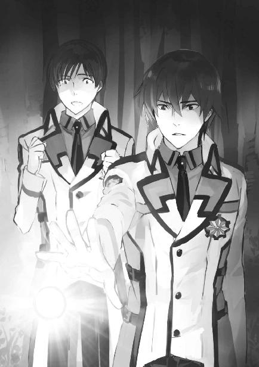
そのまま二人は、疑似固体化した想子の塊を観察した。
想子の球体は、七分後に自壊した。
中に閉じ込めていた「暴走精霊」は、精霊の形を保ちながら活動を停止していた。
その後の二時間で、達也は成功と失敗を繰り返した。
今日のところは成功率三割。
だが最後の十分間は、続けて四度、成功した。
「幹比古、今日はここで止めよう。これ以上はお前が持たない」
「まだ大丈夫、と言いたいところだけど......達也の言うとおり、今日は残念ながら限界だ」
肩で息をしながら、幹比古は笑みを浮かべていた。
「でもこれで、目処が立ったね」
「ああ。幹比古、お前の御蔭だ」
「どういたしまして」
「実戦で使用するには、成功率を十割まで上げねばならない。済まないが、明日も付き合ってもらえるか？」
「もちろんだよ」
幹比古が笑みを崩さず、むしろますます深めて頷く。
彼は修行を手伝っている立場だ。
だが幹比古の笑顔は、まるで我がことのような充足感に満ちたものだった。
◇ ◇ ◇
七月二日、火曜日の夜。
七草邸では、香澄と泉美が試験勉強に励んでいた。
光宣の迎撃フォーメーションは、今日も続いている。だが二人は学業優先で任務はお休みだ。
今夜は二人だけでなく、真由美も屋敷で待機している。
その真由美を、予定に無い客が訪ねてきた。
「摩利......!? どうしたの、いきなり」
「少し、話をしたいと思ってな。迷惑じゃなかったか？」
「迷惑なんてとんでもない！ さっ、入って」
いつになく遠慮気味の摩利を、真由美が屋敷の中に引っ張り込んだ。
真由美が摩利を連れて行ったのは自分の部屋だ。真由美は飲み物を自分で用意し、使用人には部屋に入らないよう命じて、友人と二人きりの空間を確保した。
真由美の部屋は洋室だが、勉強机とベッド以外には小さな座卓が置いてあるだけだ。
真由美はアイスティーのグラスを座卓に置き、クッションを部屋の隅から持ってきて摩利の向かい側に座った。
「来てくれるなら連絡すれば良いのに。今日は偶々家にいたけど、昨夜だったら行き違いになっていたわよ」
真由美にしてみれば親しい友人同士の軽口で、特に深い意味の無いセリフだった。
「九島光宣を捕まえる為か」
だが摩利の口から全く予想していなかったセリフを聞いて、真由美は息を吞んでしまう。
「何故、光宣くんのことを......」
「やはり十師族が動いていたのか。十文字も関わっているのだろう？」
鎌を掛けられた。そう思って、真由美がムッとした表情を摩利に向ける。
だが摩利の方には、真由美を引っ掛けたつもりはない。単純に、推測を口にしただけだ。
これから持ち出そうとしている話題の前振りとして。
「実はあたしも、九島光宣追跡に加わることになった」
「えっ、貴女が？ 何故？」
「第一師団から遊撃歩兵小隊を中核とする追跡部隊が出動する。あたしもその一員として作戦に加わるよう命じられた」
「貴女、まだ学生じゃない......」
「魔法大学とは学生の意味が違う。知ってのとおり、防衛大の学生は入学時点で国防軍の一員だ」
摩利の口調に、皮肉なニュアンスは無かった。彼女は出動に不満を覚えていないようだ。
「遊撃歩兵小隊というと......確か『抜刀隊』よね？ 老師の熱烈な信奉者で構成されている魔法師白兵戦部隊」
「ああ、その小隊だ。そこまで知っているなら話が早い。遊撃歩兵小隊は老師の仇討ちに立ち上がった。私怨で軍を動かすのは問題だと思うが、話を聞いた限りでは九島光宣を放置しておくわけにはいかない」
「仇討ちって......光宣くんが老師を殺したの......？」
「確かな情報だそうだ」
「そんな......」
真由美はショックを露わにしている。
摩利はアイスティーを少しずつ飲みながら、真由美が落ち着くのを待った。
「......国防軍は箱根より西に捜索網を展開するから、現場でかち合うことは無いと思うが、念の為だ。真由美たちを混乱させないように、報せておこうと思ってな」
真由美の顔色が多少まともになったのを見計らって、摩利が話を続ける。どうやらこれが、彼女の本題だったようだ。
「......気をつけて、摩利。光宣くんは手強いわよ」
「老師に勝った相手だ。一対一じゃ敵わないってことくらい分かっている。無謀な突撃などしないさ」
心配する真由美に、摩利は気負いの無い表情で応える。
それを見て、「高校の時とは違うんだな」と真由美は思った。
［３］
エドワード・クラークが提唱したディオーネー計画は多少のつまずきこそあったが、足踏みすることなく進んでいる。現在は彼一人の手を離れ、ＵＳＮＡ国家科学局の学者グループが木星の衛星から金星へ氷の塊を送り届けるシミュレーションを行っているところだ。このシミュレーション結果を元にして、必要な要素を盛り込んだ魔法式が作成される。
国家科学局の研究スタッフは、金星の二酸化炭素を分解するより大量の氷塊を投入して気温を下げ、水を供給することを優先する方針に傾いている。エドワード・クラークは、その方針に異を唱えていない。
どうでも良いことだからだ。
金星のテラフォーミングは、あくまでも表向きの目的に過ぎない。ディオーネー計画の真の狙いは、質量・エネルギー変換魔法などという馬鹿げた大規模破壊手段を持つ日本の戦略級魔法師、司波達也を地球から追放することにあった。この観点から見れば、ディオーネー計画は破綻しつつある。
司波達也本人が企画した魔法核融合炉エネルギープラント計画は、予想に反して実現に向け着々と前進している。司波達也はその中核人物として、ディオーネー計画への参加を辞退する口実を手に入れていた。
プラントの構想自体は別に目新しいものではない。大規模なエネルギープラントを建設し、そこから得られる電力を利用して海水から水素を製造し、海水中に溶けている鉱物資源を抽出し、海水中から有害物質を除去する。
在来技術では採算が取れなかったプランだが、重力制御魔法を使った核融合炉、『恒星炉』を用いればビジネスとして成り立つ。エドワード・クラークも、それを否定できない。
人口増大による居住空間の不足に備えるというディオーネー計画の大義名分は、まだ説得力を失っていない。しかし、そこに司波達也を参加させなければならないとは強弁できなくなっている。
ディオーネー計画の推進に、恒星炉は必ずしも必要ではない。ＮＳＡのスタッフは、木星圏のミッションに必要な電力も太陽光発電で賄えると試算していた。
一方、司波達也のプラント計画は恒星炉を前提に組み上げられている。
恒星炉プラントは将来的に、より多くのエネルギーを人類にもたらす可能性がある。故にその試みを妨害すべきではない、という意見が上院議員の間にも広まってきている状況だ。ここで司波達也の引き抜きを強硬に主張すれば、世間にもクラークの真意を覚られてしまうかもしれない。
このままでは、ディオーネー計画の真の目的は達成できない。
だからといって下手な動きは取れない。マスコミにも資本家や政治家の言いなりにならず、真実を暴くジャーナリストが、一人や二人はいるかもしれないのだ。そういう本物のジャーナリストでなくても、勝手な憶測が多数積み上がって、その中から何の根拠も無く真実に至る確率も無視できない。
手詰まり感が高まる中で、それでもエドワード・クラークは諦めていなかった。
状況をひっくり返す糸口を求めて、彼はオリジナルの『フリズスキャルブ』が集めてくる膨大なデータと格闘を続けていた。
家にはもう十日以上帰っていない。息子のレイモンドと直接顔を合わせたのは半月以上前のことだ。その所為で──と言い切って良いのかどうかは不確かだが──クラークはレイモンドがパラサイト化したことも知らない。レイモンドが日本に渡ることも、クラークはメールで知ってメールで許可を与えたくらいだ。
今日もクラークはデータの海でもがいていた。オリジナルの『フリズスキャルブ』は世界に散撒いた端末と違って、大型コンピュータに接続しデータを保存・整理できる。クラークは戦略シミュレーションＡＩのアシストを利用しながら逆転の道筋を探していたが、妙案は中々見つからない。
その電話が掛かってきたのは、蓄積した疲労が諦めを呼び込み始めた午後三時のことだった。
『クラーク博士、ご機嫌は如何ですか』
ヴィジホンのディスプレイに、ずっとコンタクトを取れなかったベゾブラゾフが登場した。
「ベゾブラゾフ博士、お久し振りです。正直なところ、気分は芳しくありません」
『そうですか。しかしそれは、私の所為ではありませんよ』
クラークは思わず罵声を放とうとして、辛うじて自制した。
ベゾブラゾフに、クラークの反応を気にした様子は無い。
『私が失敗したのは事実ですが、元はと言えば恒星炉プラント計画を政治工作で阻止できなかったことが原因ですから』
「博士のお立場では、そうなるでしょうな」
喧嘩別れは有害無益。自分にそう言い聞かせても、口調に棘が生えるのをクラークは抑えられなかった。
『ご理解いただけて幸いです。私の立場では、司波達也を放っておくことはできませんでした』
「事態は余計に悪化しましたけどね！」
反省の欠片もないベゾブラゾフの態度に、クラークがとうとう怒りを爆発させてしまう。
「司波達也を暗殺する。それは結構！ 失敗したのも仕方がないでしょう。相手が一枚上手だっただけです」
画面の中で、ベゾブラゾフが表情に不快感を露出させる。だがクラークは「知ったことか」という心境だった。
「しかし博士が分かり易い状況証拠を残してくれた御蔭で、ディオーネー計画の平和的性格を疑われる羽目になっています」
『平和的なプロジェクトを装うことに、意味があったのでしょうか？』
「何ですと......！」
クラークの気色ばんだ表情を見ても、ベゾブラゾフの冷笑的な口調は変わらなかった。
『ディオーネー計画の目的は戦略級魔法師・司波達也の排除。その目的さえ達成できれば、金星開発はどうでも良いはずですが』
ベゾブラゾフの本質を突く指摘に、クラークは反論できなかった。
「......博士には何か妙案があるのですか？」
クラークの反問は、苦し紛れのものだ。
『妙案と言えるかどうかは分かりませんが、一つ、提案があります』
ベゾブラゾフの答えは、クラークにとって思い掛けないものだった。具体的な答えが返ってくるとは、クラークは予想していなかった。
「......うかがいましょう」
クラークのこのセリフは時間稼ぎを意図したものだが、手詰まり感に追い詰められる中で出口を求める深層心理が吐かせたものでもあった。
『ご存じのとおり我が国は現在、大亜連合の侵攻を受けています。この局地戦は大亜連合が一方的に仕掛けてきたものですが、明日には我が国の勝利で決着する予定です』
「博士がトゥマーン・ボンバを使われるのですね」
『そうです』
戦略級魔法を投入しただけで勝敗が決するというのは戦争を単純化しすぎているようにも思われるが、今回のケースに限ってはその単純な図式が現実になる可能性が高いとクラークも知っていた。
大亜連合の軍事行動はベゾブラゾフの不在を前提に立案されたものだ。一個人の存在が開戦を左右すると言えば大袈裟に聞こえるかもしれないが、戦術核クラスの大量破壊兵器が投入される可能性の有無を考慮して軍事行動を決定していると言い換えれば、奇異には思われないだろう。
大亜連合はトゥマーン・ボンバによる反撃が無いと計算して新ソ連領沿海地方に侵攻した。だから余計に、トゥマーン・ボンバによって大打撃を受ければ、精神的に継戦が難しくなるに違いない。新ソ連軍と大亜連合軍の戦力が拮抗している中で、大亜連合軍の戦闘意欲低下は致命的だ。新ソ連の勝利、大亜連合の敗走は容易に予測できる。
『我が国はこの勝利に乗じて、日本海を南下する予定です』
「日本へ攻め入るのですか!?」
『大義名分は用意するのでご心配なく。それに、本州へ上陸する計画もありません。そもそも領土を求めての侵攻作戦ではありませんので』
「............」
『お分かりのようですね。そう、これは陽動です。司波達也の恒星炉プラントが何処に建設されているのかは、ご存じでしょう？』
「......東京南方百八十キロ、『巳焼島』と呼ばれる火山島ですね」
『そのとおり。我が軍が南下する海域の、ちょうど逆サイドです』
「貴国の南下に合わせて、建設中のプラントを破壊しろと？」
『難しくはないでしょう？ 施設が国籍不明のテロリストの標的になったと知れば、プラントに出資する資本家も考え直すのでは？ 恒星炉プラント計画は中止せざるを得なくなり、司波達也はディオーネー計画参加を拒む口実を失います』
ベゾブラゾフの提案に、クラークは即答できなかった。
理性的に考えれば、即座に蹴るべき有害なプランだ。国家による破壊工作が明るみに出れば、ＵＳＮＡの国際的信用は地に墜ちる。そして、露見するリスクは小さくない。一人や二人の暗殺ならともかく、建設中のプラントに対する破壊工作を完全に隠蔽することは困難だ。
だが思うに任せぬ状況の中で閉塞感に苦しんでいたクラークには、ベゾブラゾフの申し出が魅力的な打開策に思われた。ベゾブラゾフが唆す作戦案は、クラークにとってまさに甘美な悪魔の囁きだった。
「......貴国の艦隊が出動するのは何時になりますか」
『作戦が順調に進行すれば五日後、七月八日になります』
「五日後ですか......」
間に合う、とクラークは思った。短い準備時間は、彼の精神内で歯止めとならなかった。
「分かりました」
『引き受けていただけると思っていました』
ベゾブラゾフが満足げに笑う。
クラークはその笑顔に、以前の──司波達也に敗れる前のベゾブラゾフからは感じなかった寒気を覚えた。
◇ ◇ ◇
西暦二〇九七年七月四日、木曜日。大亜連合と新ソ連の戦争は今日で七日目を迎える。
この日の朝、戦況に大きな変化が生じた。東シベリア方面の新ソ連軍の再配置が完了し、ハバロフスクの南で防衛に当たっていた機甲部隊が南下を始めたのだ。
同時にそれまでウスリースク郊外で大亜連合軍を食い止めていた沿海地方軍はムラヴィヨフ＝アムールスキー半島の入り口を目掛けて後退を開始する。
新ソ連の意図が、東シベリア軍と沿海地方軍による大亜連合侵攻部隊の挟撃にあることは明らかだ。これに対する大亜連合の選択肢は二つ。
一つは、ハンカ湖西岸の占領地域まで軍を引き、同地域の支配を固定化すること。
もう一つは、南下する沿海地方軍を急追し東シベリア軍が到着する前にウラジオストクを落とすこと。ウラジオストクを手に入れれば、高麗自治区から北上する部隊が海上から側面攻撃を受ける心配も無くなる。ハンカ湖西から侵攻した東北地方軍と高麗自治区軍で沿海地方を一気に占領する──大亜連合の理屈では「取り戻す」──ことができる。
大亜連合は急戦を選んだ。
南下・後退する新ソ連軍の後を大亜連合軍が追い掛ける。しかし追跡の決断に多少の時間を要したのと戦闘車両自体の速度差で、両軍の間隔は大きく開いていた。
そして両軍の間隔が二十キロを超えた時、戦局は劇的な転換を迎えた。
突如、大亜連合軍の前に霧が立ちこめる。
濃密な霧は、わずかな時間で六千人の兵員を乗せた戦闘車両──兵員輸送車を含む──の列を覆い尽くした。
「退避！」、と叫んだ指揮官は、直感的に危機を嗅ぎ取ったのか。
「霧を排除せよ！」と魔法師部隊に命じた参謀は、白いヴェールの正体を見抜いていたに違いない。
だが、彼らの対応は遅すぎた。
否、相手が──ベゾブラゾフが速すぎた。
深い霧が作り出す白い闇を、一瞬で増殖した魔法式が満たし、
超広域の酸水素ガス爆発が生じた。
酸素一、水素二の混合気体。その燃焼炎の温度は三千度に満たず、核兵器の焦点温度には遠く及ばない。
しかし一点に集中して熱が発生する核爆弾や通常爆弾と異なり、数ヘクタールから十数平方キロの広大な空間で同時に高熱が生み出される。またトゥマーン・ボンバ本来の攻撃形態──相手の魔法防御を考慮しない形態──は燃料気化爆弾と異なり、攻撃対象を爆発の直中に巻き込んで発動する。
爆発によって発生した高圧の衝撃波で殺傷するのではなく、摂氏二千度超の爆発に敵を直接曝露するのだ。その最大破壊規模は多弾頭核ミサイルに匹敵する。
西暦二〇九七年七月四日、現地時間八時五十五分。日本時間七時五十五分。
この一撃で、大亜連合侵攻部隊の七割以上が無力化された。
◇ ◇ ◇
魔法科高校の授業時間は一高から九校まで共通だ。一限目は八時から始まる。
ただ一限目が始まる前に朝礼やＳＨＲを行う慣行は、学校によってまちまちだ。
一高には朝礼もＳＨＲも無く、いきなり授業が始まる。
それとは対照的に、三高は各クラスの指導教師が朝礼に名を借りて生徒に活を入れるのが毎朝の習慣になっていた。──ただし、指導教師がついている『専科』、一高で言う『一科』のみのセレモニーである。
今日は定期試験三日目だが、昨日までと同じく、朝礼は普段どおりに行われる。
始業十分前になり、一条将輝は彼のクラスメイト同様、自分の席に着いた。
それから一分も経たない内に指導教師が入ってくる。五十代の、がっちりした体格の男性教師だ。生徒に親しみを持たれるタイプではなく、確かな指導力で生徒に頼られるタイプの教師である。
異変が起こったのは、指導教師の経験に裏打ちされた訓示が中盤に差し掛かった、七時五十五分のことだった。
強烈な魔法の波動に、将輝が思わず腰を浮かせ掛ける。
反射的な反応を見せたのは彼一人ではなく、同じ教室で実際に立ち上がった生徒も何人かいた。
指導教師は、それを咎めなかった。
「朝礼は中断する。皆は自席で待機すること」
立ち上がった生徒を手振りで座らせながら、男性教師は強張った表情でそう告げて教室を後にした。
ざわめくクラスメイトの声を聞きながら、将輝は唇を固く引き結んでいた。
（想子波の震源は北......いや、北北西か？ 強い揺れだったが、震源地はかなり遠い......）
将輝の感覚では「遠い」としか分からなかったが、彼はそれを直感的に、新ソ連と大亜連合の軍事衝突に結びつけた。
彼は学習用端末に、日本海を中心とした地図を呼び出した。魔法の軍事利用を積極的に肯定している三高の端末は、地政学の資料が豊富に呼び出せるようになっている。
（推定八百キロ以上......。それであの強さ、本物のトゥマーン・ボンバか......？）
ベゾブラゾフは目的に応じてトゥマーン・ボンバの破壊力を使い分けているのであり、本物も偽物もない。今回の爆発も、破壊力の上限を発揮したものではない。
しかしそれを知らない将輝は、伝わってきた想子波動の強さから魔法の威力を感じ取り、戦慄と共にそう考えた。
◇ ◇ ◇
トゥマーン・ボンバの余剰想子波をキャッチしたのは、三高の生徒だけではなかった。その特大規模の波動は、日本全国の魔法師の感覚を震わせた。
達也はその時、一高から自宅へ戻る個型電車の中にいた。
（──魔法式の規模は水平方向に三平方キロ前後、高さ二十メートル前後。目的は地上部隊の殲滅だな）
広く展開した戦闘車両、歩兵輸送車両を纏めて葬るべく、魔法の規模を広げたのだろう。
（密度は低いが、これだけの広さの空間で同時に爆発が起こったんだ。国土の被害も相当なものだろうに。これもある種の焦土戦術か）
本来の意味とは違うが、自国の土地を焼いてまで敵軍に打撃を加える。政府の権限が強くなければ採れない戦法だ。
しかし、有効な戦術であるのも確か。大亜連合軍が投入していた百数十～二百両の戦車とそれに追随する戦闘・輸送車両は破壊され、五千～一万人の兵員が鬼籍に入ったことだろう。
（予想していた形とは少々異なるが、勝敗は決した）
新ソ連が──ベゾブラゾフがここまで大規模な反撃を行うとは、達也も予測していなかった。これならベゾブラゾフ健在がもたらす精神的ショックとは無関係に、大亜連合は戦闘の継続が不可能だ。
達也は個型電車のヘッドレストに頭を預けて目を閉じた。
（......これだけの大敗だ。大亜連合はしばらくの間、対外的な軍事行動ができなくなる）
（新ソ連は極東艦隊を動かしても、側背を突かれる懸念はなくなった）
（どういう名目を持ち出すかは分からないが......艦隊は既に動員済みと考えるべきだろう）
「時間的な余裕は無い」
その思考は、達也の口から声になって発せられた。
達也がトゥマーン・ボンバを参考にして開発している魔法は、新ソ連艦隊の南下を阻止する為のものだ。
分かっていたことだが、いよいよその完成を急がなければならなくなった。
個型電車が自宅最寄り駅に到着するまで、あと十分前後。そのわずかな時間さえ、今の達也にはもどかしかった。
◇ ◇ ◇
大亜連合の戦略級魔法師、劉麗蕾は友軍崩壊の際、味方部隊の移動に同行せず後方に待機していた。機甲部隊と輸送車両で移動した歩兵部隊が敵を捕捉した後に、ヘリで部隊に合流する予定だったのだ。
御蔭で彼女は、トゥマーン・ボンバによる被害を免れた。
劉麗蕾の護衛部隊を率いる隊長は、ハバロフスクから新ソ連軍が南下しているのを知りながら敢えて北上し、ヴォズドヴィデンカの飛行場を占拠した。
護衛部隊の隊長は、司令部に即時帰国を具申。侵攻部隊が壊滅した状況では、当然の申請だ。
しかし大亜連合軍司令部は、劉麗蕾とその護衛部隊に現在地点で待機を命じた。
ハバロフスクから南下した新ソ連の部隊はその動向を把握していたはずであるにも拘わらず、劉麗蕾一行が潜むヴォズドヴィデンカを、攻撃も包囲もしなかった。
◇ ◇ ◇
達也は巳焼島行きをキャンセルし、『封玉』の修行も今日は中止すると幹比古にメールで断りを入れて、朝からずっと自宅マンションの地下にある研究室にこもっていた。
開発中の戦略級魔法に関する研究データは、毎日ストレージに入れて持ち帰っている。四葉家東京本部の地下室でも、研究を続けるのに不都合はない。
深雪にも、一人で帰宅させた。彼女には達也以外にもつかず離れずの護衛がついているし、達也も「眼」を離してはいない。それでも深雪に単独行動をさせるのは異例なことだ。
その甲斐あってと言うべきだろうか。
チェイン・キャストを利用した新魔法の基本設計は、夕食前に完成した。
魔法式を構築可能な状態にした起動式ではない。あくまでも基本設計、新魔法のシステムとコンセプトを示したものだ。
あと一日掛ければ、達也は実用レベルの起動式を書き上げられたに違いない。
だが彼はわざと、この段階で手を止めた。
（起動式を仕上げるのは、実際に使用する魔法師を良く知っている技術者に任せた方が良いだろうからな......）
そして彼は書き上げた基本設計書を旧第一研、現在の金沢魔法理学研究所へ受取人指定で送信した。
◇ ◇ ◇
三日前、九島烈を殺してしまった日の翌日から神戸の隠れ家に閉じこもっていた光宣がレグルスとレイモンドの前に姿を見せたのは、大亜連合軍にトゥマーン・ボンバが炸裂した日の、夕方のことだった。
「光宣......もう、具合は良いのか？」
レグルスが遠慮がちに問い掛ける。光宣は「気分が優れない」という理由でずっと部屋に閉じこもっていたのだ。
「もう大丈夫です」
具合が悪いと言っても、人間だった頃のように体調を崩していたのではない。真実は単に「誰にも会いたくなかった」だけだった光宣は、レグルスに素っ気ない答えを返した。
「......そうか」
その態度は以前の光宣とは別人のもののようにレグルスには感じられた。
──人間的でなくなった。
──パラサイトらしくなった。
それが、レグルスの受けた印象だ。だが彼は、それを口にしなかった。
口にしなくてもその思念は光宣に伝わっていたが、光宣も反応を見せなかった。
「それより、二人とも今朝の魔法には気付いたでしょう？」
「うん。トゥマーン・ボンバだよね、あれ」
「本国からのアクセスはまだ無いが、あれに関連して何らかの指令があると思う」
レイモンドは面白そうに頷いただけだが、レグルスはエリート軍人らしく自分たちの行動に影響があると考えていた。
「ペンタゴンは僕たちよりも詳細な情報を摑んでいるでしょうね。アメリカ本国から何か指示があった場合は、そちらを優先していただいて結構です。ただ、ジャック、今から少し付き合ってもらえませんか」
「今からか？」
まだ梅雨は明けていない。雨は降っていないが、今日も曇り空だ。外はもう、すっかり暗くなっている。人目を避ける行動には好ましい時間帯かもしれない。だがそれにしても、今から何かを始めるには遅い時間のようにレグルスは思ったのだった。
「真夜中になる前に帰って来られますよ」
「......分かった。同行しよう」
デイライト・セービングスタイム（サマータイム）の現在、スターズ本部があるニューメキシコと日本の時差は十五時間。日本の方が十五時間進んでいる。日本の零時がニューメキシコの午前九時だ。光宣の言うとおりなら、外出している最中に本国から指令が送られてくる可能性は低い。もし通信があったとしても、横須賀に潜入した第四隊が後で報せてくれるだろう。レグルスはそう判断したのだった。
ベガ、スピカ、デネブの三人が横須賀基地に潜入したことも、アークトゥルスが潜入に失敗して封印されてしまったことも、レグルスは知っていた。彼だけではない。レイモンドも、光宣も、パラサイトのテレパシーネットワークで情報を共有していた。
「僕も行って良いだろう？ 仲間外れは御免だよ」
頷いたレグルスの横から、レイモンドが唇を尖らせて口を挿む。
「潜入ミッションですよ？ レイモンドには向いていないと思いますが」
「問題無い。やれるよ」
光宣のストレートな指摘に、レイモンドが向きになって反論する。
「光宣。レイモンドは確かに経験不足だが、戦力にはなる。不慣れな点は私がカバーするから、レイモンドも連れて行かないか」
レイモンドが感情的になっているのを見て、レグルスは仲間割れを回避する為、二人の間に割って入った。
表面的にはレイモンドを弁護しながら、光宣の言い分をもっともなものとして認める。このレグルスの論法にレイモンドは口を閉ざし、
「ジャックがそう言うなら」
光宣も譲歩を示した。
個型電車や都市間高速電車ではなく、高速道路を使って自走車で一時間と少し。
「あれは、もしかして......？」
「九島家本邸。僕の家です」
レイモンドの推測に、光宣が自分から答えを付け足す。光宣、レグルス、レイモンドを乗せた自走車が停まったのは、九島家の少し手前の路上だった。
「自分の家に忍び込むというのも、考えてみれば情けない話ですが......」
光宣が苦笑いしながら車を降りる。
レグルスとレイモンドも、それに従った。
「僕がパラサイトになったことは両親にも兄弟にも知られているはずですので、仕方が無いですね」
軽く肩を竦めて、光宣が九島家の裏手へ歩き出す。
レグルスとレイモンドは一度顔を見合わせて、すぐ光宣の後に続いた。
塀の角で光宣が立ち止まり、二人に振り返る。
「ここから先は、想子波動を漏らさないようにお願いします」
「分かった」
「ＯＫ」
二人の返事に満足したのか、光宣が再び前進を始める。
途中、光宣が何度か魔法を使ったのは、レグルスにもレイモンドにも分かった。
だが具体的に何をしたのかは、二人とも分からなかった。
光宣の背中を見失わないようにすぐ後ろをついていった二人は、何時の間にか高い塀の内側を歩いていた。
何時の間にか、高い生け垣の間を歩いていた。
そして不意に、小さいけれども古風で立派な扉の前に出た。
光宣が小さく息を吐き、
「もう魔法を使っても大丈夫です」
肩越しに振り返って二人に告げる。
「ジャックとレイモンドは、二階と三階の人間を無力化してください。できれば、殺さないでもらえると助かります」
「了解だ」
レグルスの答えに頷いて、光宣がドアを開ける。
こういう状況では当たり前かもしれないが、三人とも靴は脱がなかった。
「わくわくするね」
「不謹慎だぞ、レイモンド」
二階に上がっていく二人の背中を見送り、光宣は一階のダイニングへと足を向けた。いつもなら、両親と兄が食事中の時間だ。もしかしたら二人の姉も、祖父・烈の葬儀の為に嫁ぎ先から帰っているかもしれない。
（お葬式は次の次の日曜日と言ってたっけ......）
閉じこもっていても、情報は集めていた。祖父の葬儀の予定を聞いても予想した程ショックを覚えなかったのが逆に衝撃的だったが、その時は感情が麻痺しているのだろうと自分を納得させた。
自分のメンタリティがパラサイトに近づいている可能性は、認められなかった。
精神を自分のままに保つ。
それは、光宣の行動を支える大前提だ。ここが崩れてしまえば、彼は自分の行為を正当化できなくなる。
急に吐き気を覚えて、光宣は自分の口に手を当てた。
彼はそれを、祖父の葬儀のスケジュールから「お祖父様」の死を実感したからだと思った。
（......嘆くのは、全てが終わってからだ）
光宣は自分にそう言い聞かせて、前に進んだ。自分が直前まで考えていたこと──自分の精神がパラサイトに近づいている可能性──からは、無意識に目を背けていた。
九島家の屋敷は広い。裏口からダイニングまで、そこそこ距離がある上に部屋数も多いのだが、ここは光宣が育った家だ。彼は一度も迷うことなく、誰にも気付かれず、家族用のダイニングにたどり着いた。
ドアをノックしようとして、声に出さず苦笑いする。自分が「侵入者」であることを思い出したのだ。光宣は頭を振って手を下ろし、内開きのドアを押し開けた。
「誰だ!? ......光宣？」
慌てて反応したのは、ドアに最も近い席に座っていた二番目の兄だった。背中を向けていたから、余計に動揺したのだろう。もっともその狼狽は、光宣が敢えて露わにしたパラサイトの気配が最大の理由だったに違いない。
「光宣......っ！」
上の兄は、次兄とは違った反応を見せた。
椅子を蹴って立ち上がったところまでは同じ。だが長兄はただ驚くのではなく、ＣＡＤを操作して起動式を呼び出していた。
読み込んだ魔法は『ルナ・ストライク』。屋内であることを反射的に考慮して、物理的な影響力が無い術式を選択したのだろう。
それでなくても、九島家の長男・九島玄明は四系統八種の魔法より系統外・精神干渉系魔法を得意としている。精神干渉系攻撃魔法の基本術式である『ルナ・ストライク』を、玄明がしくじるはずはなかった。
しかし現実に、『ルナ・ストライク』は発動しなかった。
「玄明のルナ・ストライクをキャンセルしたですって......？」
信じられない、という口調で長女の白華が呟く。得意魔法だけあって、玄明の『ルナ・ストライク』発動は速い。少なくとも、彼女や次女の朱夏、次男の蒼司には術式の発動を妨害できない。
「何の用ですか？」
落ち着きを保った顔と声で光宣に問い掛けたのは、戸籍上の母親である九島紫乃だ。
「父さんはまだ帰っていないんですか？」
光宣は紫乃の質問に答えず、逆に問い返した。
「真言様は工場視察で遅くなると仰っていました」
紫乃は真言より一回り以上年下だ。光宣が相手だから、ではなく、家の中でも外でもこういう言葉遣いをしている。
「工場？」
九島家は様々な軍事企業に出資している。訝しげな声を漏らした光宣だが、そのことを思い出して「別におかしなことではない」と思い直した。
「何処の工場か教えていただけますか」
「ええ、良いですよ」
紫乃は二つ返事で頷いて、屋敷がある生駒市の外れに位置する住所を伝えた。
「真言様にご用事だったのなら、最初からそう言いなさい。玄明たちが無用に混乱したではありませんか」
そして、光宣を他人行儀に りつける。
りつける。
紫乃の態度に、光宣はショックを受けなかった。
「義母さんには、他に用はありません」
紫乃だけでなく、白華と朱夏も眉を顰めた。「用は無い」という遠慮を無視した物言いにも不快感を刺激されたが、それ以上に「かあさん」という単語に「母さん」以外の意味が込められているように感じられたからだ。
しかし長女にも次女にも、それに拘っている余裕は無かった。
「兄さんたちと姉さんたちには、僕の力になってもらいますけど」
「どういう意味？」
強気な言葉を返したのは次女の朱夏だ。だがそれが強がりでしかないことは、不安げな表情を見れば明らかだった。
「僕の配下になってください。ああ、九島家の当主になるという意味ではありませんから安心してもらって良いですよ。僕の目的を達成するまでの、一時的なものです。僕一人では、手を組んだ七草家と十文字家、それに四葉家を出し抜けないと分かりましたから」
「同じ十師族を裏切れというのか！」
次男の蒼司が声を荒げる。
「何を言っているんです、蒼司兄さん。九島家はもう、十師族に入っていませんよ？」
「くっ......」
しかし光宣に軽くいなされ、蒼司は言葉に詰まってしまう。
「たとえ十師族の一員でなくても、妖魔の言いなりになどなるものか！ ましてやお祖父様を殺したお前に！」
気骨を見せたのは、長男の玄明。さすがは次期当主の意地と言うべきか。
彼は光宣に向けて、再び魔法を放とうとした。
「グッ......！」
しかし起動式の読み込みが完了する前に、胸を押さえて俯いてしまう。
圧倒的なスピードで発動した光宣の精神干渉系魔法攻撃だ。
「無駄な抵抗は止めてもらえませんか」
右手を玄明に差し伸べた体勢で、光宣が淡々と告げる。
「元十師族として、魔物に膝を屈することはできないという気持ちは理解できます。だから当主の座は要求しませんし、表立った助力も求めるつもりはありません。十師族に分からないよう、こっそり力を貸してくれるだけで良いんです」
光宣が無邪気な笑みを浮かべる。相手のご機嫌を取ろうという下心が一切存在しない、相手の気持ちを当たり前に考えない、子供のような、帝王のような笑顔だった。
光宣の言葉に答えは無い。長男は答えられる状態になく、次男、長女、次女は目の前で見せつけられた力量差に声も出せなくなっている。
戸籍上の母親は、怯えた表情こそ見せていないが、唇を引き結んで光宣の視線から顔を背けていた。
「とはいえ、父さんを差し置いて僕の要求に頷けないのは分かっています。先に父さんと話を付けてきますので、それまでここで待っていてください」
そのセリフを言い終えると共に、光宣は新たな魔法を発動した。
義母の、姉の、兄の身体から力が抜け、次々と椅子から転げ落ちる。机に突っ伏したならば料理の皿に顔を突っ込んでいたに違いないから、床に転落したのはマシな結果だったと言えるだろう。
強制的かつ速やかに、睡眠を強制する精神干渉系魔法。光宣の家族は彼の手によって、眠りの檻に囚われた。
光宣の魔法は、家族だけを対象としたものではなかった。一階にいた使用人は一人残らず意識を奪われた。偶々刃物を使っていた、あるいは倒れた際の打ち所が悪かったといった理由で重傷を負った者もいたが、光宣は負傷者を見付け次第、治癒魔法を掛けて回った。
光宣がレグルス、レイモンドの二人と再合流したのは、裏口ではなく表玄関のホールだった。「光宣」
階段を下りてくるレグルスに声を掛けられて、光宣は立ち止まり顔を上げた。
「終わりましたか？」
「ああ、全員眠らせた。三人から激しい抵抗を受けたが、何とか命を奪わずに済ませた」
「上首尾ですね」
光宣が笑顔で頷く。
「ところで、殺さずに眠らせたのは彼らを利用する為かい？」
明るい口調でこう訊ねたのは、レグルスに続いて二階から下りてきたレイモンドだ。
「力を借りたいのは屋敷の使用人ではなく、外で仕事をしている部下ですけど。身内意識があるので反感を買いたくなかったんですよ」
「ふーん......。でも九島ショーグンを殺しちゃってるんじゃ、手遅れじゃないかな」
「レイモンド！」
レグルスに強い口調でりつけられて、レイモンドが首を竦める。
「光宣、その、な......」
「ジャック、気にしないでください」
光宣の返事は、あたふたするレグルスを宥めるような語調だった。
「僕が祖父を殺したのは事実です。でも、祖父ではなく父に忠誠を誓っている者も、今では多いんですよ」
「へぇ......」
レイモンドの呟きには、反省した様子も無い。
だからといって、光宣は気を悪くしなかった。
「その父の所に行きます。付き合ってください」
そう言って、光宣は返事を待たず玄関を出た。
◇ ◇ ◇
金沢魔法理学研究所、旧魔法技能師開発第一研究所は敷地内に研究員用の独身寮を持っている。国立魔法大学付属第三高校の生徒でありながら研究所員でもある吉祥寺真紅郎は、この独身寮住まいだ。
第三高校も第一高校同様、現在は定期試験期間の真っ直中。とはいえ、吉祥寺は試験勉強に余り時間を使っていない。翌日の科目を合計二時間復習する程度で、残りの時間はいつもどおり研究所の仕事に当てていた。
世界で最初の「基本コード」の発見者である吉祥寺は、基本コード理論の完成という自分の研究テーマに時間と予算を費やすことを許されている。
だが残念ながら、自分の研究テーマにだけ取り組んでいられるわけではなかった。魔法学はまだ、細分化された専門分野に特化できる程には成熟していない。幹部研究員から新たな仮説の検証を依頼されることも少なくない。
吉祥寺は事実上研究所に寝泊まりしていて、仕事の時間と私的な時間の区別が曖昧になっている傾向がある。彼は今日も夕食後、自分の研究室に戻って研究を再開しようと端末のスイッチを入れた。そして自分宛に、外部からメールが届いているのを発見した。
所外からの通信は、全てセキュリティ保持の観点からチェックを受けている。個人用の端末に届いているのは、安全面での問題はないということだ。
「司波達也からだって......？」
吉祥寺はまず、差出人の氏名に目を見張った。研究所宛てに送られているのだから、魔法理論関係のメールだろう。だが吉祥寺と達也の間には、私的なメールどころか研究上の意見を交換する関係も無い。
吉祥寺にとって、このメールは唐突なものだった。「一体何を寄越してきたんだ」と訝しみながら、吉祥寺はメールを読み始めた。
「......これはっ!?」
本文に途中まで目を通して、読むスピードが加速する。吉祥寺はメールを最後まで読み終える前に、添付ファイルを開いた。そこに書かれている内容が衝撃的すぎて、すぐ確かめずにはいられなかったのだ。
「............」
ファイルの中身は起動式の基本設計書だった。起動式自体が魔法式を構築する為の設計書の役目を果たすものだが、基本設計書はどんな技術を使ってどういう働きをする魔法式を構築するか、起動式に記述すべき項目と組み込むべきモジュールを記述したものだ。
吉祥寺の目をまず釘付けにしたのは、全体像を示すコンセプトではなく部品であるモジュールの一つだった。
「チェイン・キャスト？」
それは、吉祥寺が初めて見る技術だった。
「トゥマーン・ボンバの基幹技術だって......？」
本物か？ と吉祥寺は思った。そんな重要な情報を、司波達也が自分に提供する意味が、吉祥寺には理解できなかった。
改めてモジュールを精読する。手の込んだ悪戯ではなさそうだ、ということはすぐに分かった。
「......要求する魔法演算能力が高すぎる。僕にも扱いきれない」
吉祥寺はチェイン・キャストのモジュールを数回読み返しただけで、この技術の重大な問題点に気付いた。
吉祥寺は平均的な魔法師に比べて、かなり高い魔法処理能力を持っている。その彼の能力を以てしても、チェイン・キャストは扱いきれるものではなかった。
チェイン・キャストは小規模な魔法式を連鎖的に複写することで、空間的に大規模な魔法を実行する技術だ。だが元になる魔法式を複写展開する副次的魔法式の情報量が余りにも膨大だった。全体の効果を考慮すれば、確かに魔法式の規模はコンパクトに圧縮されている。しかしそれでも、一人の魔法師が処理するには過大であるように思われた。
「高性能コンピュータを組み込んだＣＡＤで魔法師の変数処理を全て肩代わりすることで、負担を減らすというのは分かる。だけど、それにしたって......。こんなものを使いこなすのは、剛毅さんだって無理じゃないか？ 将輝なら、もしかしたら可能かもしれないけど......」
吉祥寺は耳から入ってきた自分の独り言に、ハッと固まった。
（将輝なら？）
今度は、声に出さず思考する。
（......起動式を整理してサイズを抑えれば、将輝なら使いこなせる？）
吉祥寺は改めて、基本設計書の主文を最初から読み返した。
そして、目的とする魔法の正体を理解する。
（これはまさか......）
「チェイン・キャストを利用した海上用超広域『爆裂』の基本設計か!?」
吉祥寺はまだ目を通していなかった、メール本文の末尾に戻った。
そこには「吉祥寺と一条の健闘を祈る」と書かれていた。
◇ ◇ ◇
義母から聞き出した住所に到着して、光宣はその美しい弧を描く眉を顰めた。
小規模ながら最新技術が投じられていると分かる建物は、アンドロイドの製造工場だった。
電子金蚕を使って、通用口から中に入る。敢えて、気配は隠していない。
目論見どおり、「警備員」はすぐに現れた。
人間に似た、女性型の機械。それは、戦闘用ガイノイドだった。
機敏な動きで、ガイノイドが光宣に襲い掛かる。
女性型マシンソルジャーを押し戻したのは、レイモンドのサイコキネシスだった。
「おっ？ 強いぞ、こいつ？」
レイモンドはガイノイドを押し潰すつもりでＰＫを行使している。だがガイノイドのボディは、ＰＫの拘束に抗ってわずかに前進して見せた。
電撃の火花が散った。
レグルスの放出系魔法だ。
ガイノイドの動きが止まり、床に崩れ落ちる。
「......随分高性能なマシンソルジャーだな。特にフレームの強度は目を見張る程だ」
レグルスが軍人らしい感想を述べる。
だが光宣は、機体その物の性能とは別の部分に着目していた。
（これは、パラサイドールの素体じゃないか......？）
「行きましょう。時間を無駄にしたくありません」
光宣はその疑念を口には出さず、レグルスとレイモンドを促した。
光宣が探している人物、彼の父親、九島真言は工場の生産ラインにいた。
「制御室にいるかと思いました」
光宣が話し掛けても応えは返ってこない。もしかしたら真言自身は会話する意思があるのかもしれないが、彼を背中にかばう人垣がそれを妨げていた。
「護衛の人は下がってもらえますか。攻撃されない限り、危害を加えるつもりはありません。工場の方も安心してください」
笑顔で告げられた光宣の言葉に露骨な安堵の表情を見せたのは、真言から少し離れて最新型の自動製造装置──非ヒューマノイド型工作ロボット──の陰に隠れていた一団だ。ワイシャツにスラックス姿の一人を除いて全員がお揃いの作業服を着ている。ほぼ確実に、この工場の従業員だろう。
対照的に、真夏にも拘わらず長袖のダークスーツを着込んで光宣と向かい合っている男たちは、緊張に一層顔を強張らせている。もし銃を持っていたなら、今にも引き金を引きそうな雰囲気だ。
「皆、下がれ」
ここに至り、九島真言がようやく口を開いた。
ボディガードの人垣が、躊躇いを見せながら左右に割れる。
「お久し振りです、父さん」
光宣に気後れが見られないのは、二人の力関係からすれば当然かもしれない。だが二人の関係を考えれば、心を乱さないのは少々不自然だ。
「もう少し早く来ると思っていたぞ」
真言の方も普通なら、少しは罪悪感を見せて然るべきと思われる。
「お前は欠陥品だと思っていたが、実は未完成品だったのだな。妖魔を宿すことにより完成品になるとは全くの予想外だ」
真言の薄情というより無情なセリフに対して、光宣は怒るのでも泣くのでもなく、冷笑を浮かべただけだった。
「本音で話してくれてありがとうございます。御蔭で僕も、罪悪感を覚えずに済む」
「妖魔に罪悪感のような感情があるとは思わなかった」
「パラサイトの本体は、人間の精神活動に由来する独立情報体という仮説があります。この仮説が正しければ、僕たちが人間の感情を持っていても不思議ではないでしょう」
「仮説が正しければな」
真言の開き直りとも見える太々しい態度に変化は無い。光宣はそれ以上、父親の無駄話に付き合う気を無くした。
「この工場は、パラサイドールの素体を製造していますね？」
光宣が前後の脈絡を無視して話題を変える。
「そんなことを訊きに来たのか？」
「素体のストックは何機ですか？ ああ、父さんは答えなくて結構です。そこの貴方、回答をお願いします」
光宣は口を開き掛けた真言を遮って、ワイシャツ姿の男性に問い掛けた。
「か、完成済みの素体が二十四機、進捗五十パーセント以上の仕掛品が十二機です」
「合計で、パラサイトを移植済みの個体の二倍以上ですか。父さんは国防軍への売り込みを諦めていなかったんですね」
「諦める必要が何処にある。パラサイドールそのものに問題は無かった。試験運用のやり方を、先代がしくじっただけだ」
先代とは、九島烈のこと。真言は父親に対する非難を躊躇わなかった。
パラサイドールの有用性については、光宣も同意見だ。だが烈に対して見え隠れする悪意に、光宣の視線はますます温度を下げた。
「......では、完成済み・製造中の素体を含めて、九島家は僕の命令に従ってもらいます」
光宣の口調は、必要以上に高圧的なものだ。それは多分、烈に対する光宣の、消しきれない思慕を反映していた。
「分かった」
真言の答えは、光宣の要求を理解しているのかどうか疑わしくなる程、あっさりしたものだった。
「御当主様、よろしいのですか!?」
当然の成り行きというべきか、ボディガードから反発の声が上がる。
「抵抗しても無駄だ」
真言は彼らに対しても、淡々とした──と言うより、精気が乏しく感じられる口調で答えた。
「光宣は先代を斃した、『九』の魔法師の完成品。光宣が九島家最強の魔法師である以上、我々が光宣に従うのは当然のことだ」
彼のセリフにも表情にも、口惜しさはまるで見られない。
「完成品」と口にした真言の声は、無念とは逆の満足感を漂わせているようにも感じさせるものだった。
◇ ◇ ◇
光宣が生駒市郊外の工場に到着した頃、達也と深雪は遅めの夕食を取っていた。
「今日は済まなかったな」
その食事の合間に、達也が何の前触れもなく謝罪の言葉を口にする。
「お兄様......申し訳ございません、心当たりが無いのですが」
深雪は本気で心当たりが無いようで、目を丸くして問い返した。
「今日は、一人で下校させてしまった」
「そのことでしたら......」
何を言われるのかと少し緊張していた深雪が、フッと表情を緩める。
「お兄様がお気になさることではないかと存じます。お兄様はもう『ガーディアン』ではないのですし、ボディガードの皆さんはきちんと仕事をしてくださっていましたから」
「必要無いと言われても、気になってしまうんだよ」
「そ、そうですか。それは......ありがとうございます」
頰を赤らめ目を泳がせた深雪が、俯いて「お兄様、ずるいです」と小声で付け加える。
達也の耳はその言葉をしっかり捉えていたが、彼は敢えて反応しなかった。ここで「ずるいって何が？」と訊ねるようなサディズムを、達也は持ち合わせていない。
会話が再開したのは、夕食のお皿を片付けて食後のコーヒーがダイニングテーブルに並べられた後だった。
「お兄様が今日、何をされていたのか、うかがってもよろしいでしょうか？」
再開のきっかけは深雪の質問。達也が謝罪する必要は無いというのは深雪の本心だが、兄が何をしていたのか気になっているのも事実だった。
「......そうだな」
達也は少し迷って、結局は頷いた。話しておく予定は無かったが秘密にする理由も無い、とでも考えたのだろう。
「大亜連合に勝利した新ソ連は、日本海を南下する可能性がある」
「新ソ連が日本に戦争を仕掛けるのですか!?」
「いきなり宣戦布告してくるのではなく、何らかの理由を付けて艦隊を出動させるのではないかな。例えば、今回の紛争における戦争犯罪者が日本に逃げ込んでいるから引き渡せ、とか」
「大亜連合軍の亡命者を日本政府が受け容れることなど、あり得るのでしょうか？」
「大義名分はこの際、どんなものでも良い。新ソ連の目的も、様々な推測が成り立つ。彼らの狙いが何であっても、侵攻を受ける可能性があるなら、それに備えなければならない」
「横浜事変の折のように、お兄様が出動されるのですか？」
「他国の軍事的野心に対する抑止力となることは、東道閣下にＥＳＣＡＰＥＳ計画を支持してもらう条件だからな。知らん顔はできない。ただ今回は横浜事変の時と違って、一度撃退したら終わりというわけにはいかないだろう」
「......何故でしょうか？」
「あの時の大亜連合と違い、新ソ連はマテリアル・バーストの存在を知っている。軍事行動に出るならば、都市や基地が直接攻撃を受けないよう手を打ってくるはずだ」
「お兄様のマテリアル・バーストを防ぐ手段など無いと思いますが......」
「魔法的にマテリアル・バーストを防ぐ方法が無いわけではない。それに、魔法で対抗しなくても俺が攻撃できなくする方法はある」
「そんなことが可能なのですか？」
「例えば、ウラジオストクを無防備都市と宣言する」
「すると、どうなるのでしょう？」
「無防備都市を宣言しても、そこに隣接する軍事施設が攻撃を免れるわけではない。軍事施設は存在するだけで軍事力だからだ。だがマテリアル・バーストでウラジオストクの軍港施設を攻撃すれば、都市部にも被害が及ぶ。あの魔法は領域を限定して攻撃することができないからな。戦時国際法を無視する無法者国家の汚名を着せられたくなければ、マテリアル・バーストによる攻撃は断念しなければならない」
「それは余りにも虫が良すぎると思いますが」
「確かに、見え透いている。しかし幾ら偽計だと分かっていても、形式が整っていれば無視できない」
深雪は納得できないという表情を隠そうともしていない。それが当たり前の感覚だ。
だがどんなに理不尽でもルールはルール。そこには大義名分が存在する。そして大義名分は、国際政治の場において核兵器以上の攻撃力を持つ。
「海上戦力についても、マテリアル・バーストを使わせない手はある。例えば難民船団を仕立てて、戦闘艦から通常兵器では流れ弾の被害を受けない程度、離しておく。散開した艦隊をマテリアル・バーストで殲滅する為にはある程度規模が大きな攻撃をしなければならないが、それを実行すれば難民船団を巻き込んでしまう」
「......破壊力が大きすぎるが故の悩みですね」
「破壊力の調節が困難な所為で、相手に付け入る隙を与えてしまっていると言うべきだろうな。そういうわけで、新ソ連の侵攻があった場合は別の迎撃手段が必要になる」
「......もしかして、お兄様はその為の魔法を開発していらしたのですか？」
眉を曇らせていた深雪が、目を輝かせて問い掛ける。
その変わりように達也は苦笑しそうになったが、実際には誠実そうな顔で頷いた。
「基本設計まで終わらせた。後は実際に使用するやつらに頑張ってもらおう」
「お兄様が使われるのではないのですか？」
「俺には『分解』と『再成』以外、使えないよ」
「......失礼しました」
「いや」
気にしていないと笑ってみせる笑顔の裏で、達也には深雪に隠していることがあった。
チェイン・キャストを利用した戦略級魔法。彼はそれを、一条将輝に使わせるべく吉祥寺に提供した。
だが適性だけを考えるならば。
新戦略級魔法のシステムは、深雪にこそ向いているものだった。
◇ ◇ ◇
スターズの指揮系統に関する規則では、作戦に関する指令はペンタゴンの参謀本部から総隊長に直接下されることになっている。だが総隊長不在の現在、その命令は基地司令官に届けられた。
現地時間、七月四日午前十時。日本時間、七月五日午前一時。
スターズ本部基地司令官・ウォーカー大佐は、ディスプレイに表示された命令文に絶句していた。
「建設中の恒星炉プラントに対する破壊工作は理解できるが......」
それは兼ねてから検討されていた作戦案だ。戦略級魔法師・司波達也の脅威を取り除く方策として、彼が提唱する恒星炉プラント計画を潰した上で国際的な圧力によりディオーネー計画への参加を強制するというプラン。司波達也の暗殺という直截的な手段より確実性は落ちるが、実行の際のリスクは小さく現実的な作戦として一度はゴーサインが出たものだ。
その後、パラサイトの発生とそれに伴う叛乱騒ぎで作戦は事実上中止されているが、命令自体は効力を失っていない。
今回の指令はいわば棚上げになっている作戦の再スタートを指示するもので、意外感を覚えるのはおかしいかもしれない。だが、
「......新ソ連の極東艦隊が陽動している隙に任務を遂行せよとは」
ディオーネー計画に関して、ＵＳＮＡと新ソ連が協力関係にあるのは知っていたが、まさか軍事行動で連携するとは思いも寄らないことだった。少なくとも、新ソ連軍と砲火を交えた経験を持つ軍人にとっては。
「昔のことに拘ってはならないのだろうが......」
感情的に、納得できない部分がある。
ウォーカーのような高級士官でさえそうなのだ。
実際に命の遣り取りをした兵士がどう感じるか。一抹の不安を覚えずにはいられない。
「人選には慎重を期さねばならないが......いや、私が考えるべきことではないか」
スターズから出動するメンバーは、日本へ潜入済みのレグルスやベガたちになる。これについては、今から検討し直す余地が無い。彼らをサポートする人員は別の部隊から派遣されることになるが、その選定はウォーカーの権限外だ。
そう言えば、と連鎖的にウォーカーは思い出した。
──恒星炉プラントに対する破壊工作は先月上旬、既にアークトゥルス大尉とベガ大尉に命じている。
──日本潜入直後に重傷を負ったアークトゥルス大尉は、この作戦に復帰可能なのだろうか？
◇ ◇ ◇
七月五日早朝。
国防海軍横須賀基地では、敷地内を走る二人の米軍女性士官の姿が見られた。
現在横須賀には、ＵＳＮＡの空母が寄港している。米軍士卒が歩き回っていても、それだけで目を引くということはない。
彼女たちが目立っていたのは、二人が共にファッション誌の表紙を飾っていてもおかしくない外見だからだ。
片方は栗色のショートヘアに茶色の瞳の、都会的な美女。訓練用の飾り気が無い半袖シャツ姿でもお洒落に見せる雰囲気を持っている。
もう一人は銀髪ロングに青い瞳の、グラマラスな北欧系美人。タンクトップを大きく盛り上げる胸のボリュームが若い男性兵士には目に毒だ。
「あっつぅい......」
軽いジョギングではない。ダッシュ、ジャンプ、スクワット、ストレッチを組み合わせたかなりハードなトレーニングを終えて足を止めた北欧系美人──レイラ・デネブが、手で胸元を扇ぎながら呻いた。
「日本ってこんなに暑いんでしたっけ......」
「今の季節は熱帯海洋性気団の影響で高温多湿になるらしいわよ」
レイラの疑問とも愚痴ともつかないセリフに、都会派美女──シャルロット・ベガが額を流れる汗を拭いながら答える。
「スピカ中尉が外に出たがらない理由が分かった気がします......」
今レイラが口にした「スピカ中尉」を含めて、彼女たち三人は日本に潜伏したスターズの隊員だった。
三人とも、来日する前にパラサイト化している。半ば騙し討ちの格好でパラサイトを植え付けられたのだが、同化が完了した彼女たちがそれに不満を懐くことはない。──今この瞬間は、人間を辞めても暑さを感じなくなったりはしないということに些細な不満を覚えてはいたが。
「『インディペンデンス』が戻ってきたわね」
宿舎に歩いて戻る途中、彼女たちが潜入に使った空母が沖合に姿を見せた。歴史的には六代目の『インディペンデンス』だ。第三次世界大戦前に建造が開始された古参兵で、当初は原子炉を積む予定だったが、大戦中に戦闘艦船への原子炉搭載が禁じられた為、水素タービンエンジンに変更された（ことになっている）。
「良い報せがあると良いけど」
インディペンデンスが夜の海に出ていたのは、艦載機の夜間発着訓練の為だ。だがその裏には、無線に乗せられない本国からの極秘指令・マル秘情報を受け取る目的があった。
「裏切り者の小娘の居場所が早く分かると良いのですが」
レイラが苛立ちのこもった声でベガのセリフに続く。彼女が口にした「裏切り者の小娘」は、言うまでもなくリーナのことだ。
「見つからなければ差し出させるまでよ」
リーナはどうやら日本政府以外の組織に匿われているようだ、というところまでは分かっている。しかし彼女の潜伏先を日本政府が──日本軍が知らないはずはない。
日本軍がどういうつもりで「裏切り者のシリウス」の行方を隠しているのか分からないが、圧力を強め続ければ遠からず白状するはずだ。何なら、怪しい施設を二、三箇所破壊すれば舌の回りも良くなるかもしれない。
──ベガは元々、政治的な損得を余り考えない方だったが、それでもこんな、テロリストじみたことを本気で考える軍人ではなかった。彼女のメンタリティは、パラサイト化したスターズ隊員の中でも顕著に変質していた。
◇ ◇ ◇
二〇九七年七月五日、午前八時。
神戸の隠れ家に戻っていたレグルスは、スターズ本部からの指令をパラサイトのテレパシーネットワークで受け取った。
西太平洋公海上を航行中の空母が受け取った電文を指令書にして戦闘機で横須賀に寄港中の空母に届け、横須賀基地に潜伏中のベガがパラサイト同士の意識共有でレグルスに届けるという面倒な手順を踏んで送られてきた命令だ。
パラサイトの集合意識を通じた情報共有であるから、その内容は同じパラサイトであるレイモンドと光宣にも伝わっていた。
「どう思う？」
レグルスが光宣に肉声で訊ねる。光宣はパラサイトでありながら人間の「個」性を残している。光宣の側からパラサイトの集合意識へのアクセスは自由にできるが、光宣の意識に侵入することはレグルスもレイモンドも、横須賀のベガたちも成功していない。
「スターズ本部からの指令は、奇しくも僕がジャックにお願いしようと思っていた陽動作戦と一致しています。ジャックは恒星炉プラントへの破壊工作に参加してください」
「その隙に光宣は彼女を奪うのかい」
そう訊ねたのは、レグルスではなくレイモンドだった。
「そのつもりです。レイモンドも一緒に来ますか？」
「いや、僕はジャックのバックアップに回るよ」
その配役に、光宣も異存なかった。
「光宣の依頼が無くても本部からの指令には従うつもりだが......」
「何か懸念が？」
光宣に問われて、レグルスは逡巡を乗り越えた。
「その前に、アークトゥルス隊長の現状を確認したい。できることなら、封印から解放して差し上げたいと思う」
アークトゥルスは座間基地到着直後、日本の古式魔法師によって封印され、現在も座間基地に寄航中の輸送機内に隠されている。それがレグルスの認識だ。
「分かりました。それでは先に、アークトゥルス隊長の様子を見に行きましょう」
光宣はレグルスの予想を裏切る気安さで、彼の要望に頷いた。
「東京に移動するのは、新ソ連艦隊が南下を始めてからじゃないの？」
レイモンドの疑問はもっともなものだったが、光宣は笑顔で首を横に振った。
「スターズの作戦どおり事態が進行すれば、十師族にも国防軍にも西からの旅人を全員チェックする余裕なんて無くなりますよ」
光宣の口調には、自信と余裕が宿っていた。
［４］
日本時間七月五日午前九時。大亜細亜連合政府は新ソビエト連邦政府に対し、極東地域における休戦を呼び掛けた。
その一時間後、新ソビエト連邦政府より休戦に関する条件提示があった。そこには、戦争犯罪人の引き渡しが含まれていた。
日本時間七月五日午前十時二十分。現地時間午前十一時二十分。
ウラジオストクの北、ウスリースクのさらに北に位置するヴォズドヴィデンカに潜伏中の劉麗蕾は、護衛部隊の隊長に呼び出された。
「......新ソ連は私の身柄を要求しているのですか？」
強張った声で劉麗蕾が護衛部隊の林隊長に問い返す。
「そうです。新ソ連政府が引き渡しを要求した戦争犯罪人のリスト上位に、劉校尉の名前がありました。これは確実な情報です」
護衛部隊は全員女性で、林隊長も女性少尉だ。年齢は劉麗蕾より上、それも十歳以上離れているが、階級は同じ少尉。だが劉麗蕾は対外的な階級とは別に、大亜連合軍内部でだけ通用する『校尉』という特殊な階級を持っている。これは階級が上回っているという理由で前線指揮官が劉麗蕾に勝手な命令を下すのを避ける為の措置だ。
劉麗蕾は通常の階級秩序に従わず、その戦争における最高指揮官にのみ従うと定められている。大亜連合軍の特殊な序列規定に従えば、劉麗蕾校尉は最高指揮官に次ぐ地位の直属士官であり、護衛部隊隊長の林少尉より立場は上となる。
「戦争犯罪人......」
劉麗蕾が血の気の引いた唇を嚙む。ただ激しいショックを受けていても、「何故」とか「どうして」といった言葉は口にしなかった。
彼女も理解しているのだ。戦略級魔法の行使は大量破壊兵器の使用と同様、容易く「非戦闘員の殺傷」に結び付くということを。
戦争に勝利すれば、罪に問われることはない。
だが敗北すれば、重罪人として処刑台へ送られる。
そんな劉麗蕾の右手を、林隊長が勇気づけるように両手で包み込んだ。
「劉校尉、逃げましょう」
「林隊長？」
「勝者の裁きに身を委ねる必要はありません。校尉は命令に従っただけなのですから」
「しかし、私が逃げたら休戦が成立しないのでは......」
「校尉が考えるべきことではありません」
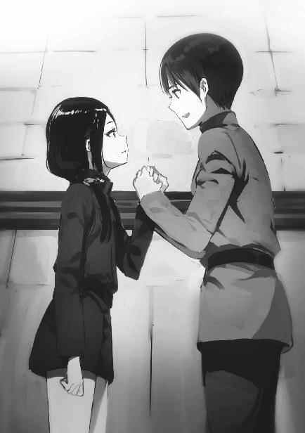
「ですが、それでは祖国が困難な状況に......」
「劉校尉、いえ、小劉」
林隊長の口調が、上官に対するものから年下の子供に優しく語り掛けるものに変わった。「小劉」は「劉ちゃん」といったニュアンスだ。
「貴女がそんなことを考える必要は無いんですよ。小劉はまだ子供なんですから」
「──子供ではありません。私は一人前の魔法師です」
「いいえ。小劉はまだ十四歳ではありませんか。国が貴女を庇護してくれるなら、国に報いるべきでしょう。ですが国が貴女を生け贄にしようとしているのに、貴女がその言いなりになる必要はありません。小劉、貴女は生きるべきです」
「しかし......」
「では、こう考えてください」
なおも決心できない劉麗蕾に、林隊長は口調を戻して説得を続ける。
「劉校尉が処刑されてしまえば、祖国は再び戦略級魔法師を失います」
本当は六人の非公認戦略級魔法師を大亜連合は抱えている。それは大亜連合の最重要機密であり、林少尉は知らされていない。
ただその六人の魔法には大きな欠陥が存在していて、国家存亡の危機に直面しない限り用いることはできない。劉麗蕾以外に、普段から使える戦略級魔法師はいないのだ。そういう意味では、戦略級魔法師が不在になるという林少尉の主張も間違いではない。
「この場は裏切り者の汚名を甘受してでも逃げ延びることが、将来、祖国にとって大きな利益になるはずです」
「そう......ですね」
名誉を失っても祖国に尽くす。「悲劇のヒロイン」の役回りは劉麗蕾の琴線に触れたようだ。
「隊長の言うとおりだと思います」
「決心してくださいましたか！ 良かった......！」
自分以上に喜んでいる林隊長の姿を見て、劉麗蕾の心の中で彼女に対する共感と依存が芽生えた。
「直ちに脱出の準備に掛かります！ 劉校尉は必ず、安全な場所にお送りしますから」
「はい、よろしくお願いします。それと、私のことは『小劉』と呼んでください。その、大亜連合軍人としての身分を捨てて亡命するのですから」
「では私のことも林姐（林ねえさん）と。少しここで待っていてね、小劉」
親しげに口調を崩し、パチッとウインクして林少尉が部屋を出て行く。
劉麗蕾は、はにかんだ表情で彼女を見送った。
劉麗蕾一行が潜伏しているのはヴォズドヴィデンカの民間空港だ。幸いなことに二千キロを超える航続距離を持つビジネスジェットと、タンクを満タンにする燃料が保管されていた。
「離陸準備、急げ！ 燃料の充塡は終わったか!?」
林少尉が格納庫で作業中の部下に声を掛ける。
「完了まであと五分です！」
「機体コンディション、オールグリーン！」
「滑走路の点検完了！ クリアです！」
機体の整備は昨夜から始めていた。彼女たちは明らかに、自分たちのヘリではなく航続距離の長い小型ジェットによる脱出を想定していた。
部下の作業を一通りチェックして、林少尉は管制塔に上った。室内には、彼女以外の人影は無い。
彼女は通信機の前に座り、無線のスイッチを入れた。
「こちらガスパジャー・タイガ。応答願います」
彼女の呼び掛けは、ロシア語で行われた。──なお「ガスパジャー」は英語の「Ｍｓ．」に当たり、「タイガ」は亜寒帯針葉樹林の意味だ。大亜連合軍旗の「虎（タイガー）」とも掛けている、林少尉のコードネームだった。
『こちら「ユキヒツジ」。現状を報告せよ』
応答も、当然ロシア語だ。
「劉麗蕾の説得に成功。これより予定どおり、日本に向かいます」
『了解。ハバロフスクの部隊が一時間弱でヴォズドヴィデンカに到着する。それまでに脱出を完了せよ』
「タイガ、了解しました」
この通信から察せられるように、林少尉は新ソ連軍に寝返った工作員だった。
現地時間正午前、ヴォズドヴィデンカを一機の小型ジェットが南へ向けて飛び立った。まだ休戦が成立していない紛争中にも拘わらず、新ソ連軍がこれに反応したのは当該機がウラジオストクの東を通過した直後だ。
追跡の戦闘機が離陸したが、ビジネスジェットが公海上に出た時点で追撃機は引き返した。日本軍のレーダーはこの動きをキャッチしていたが、新ソ連は大亜連合との戦争が終わるまで日本やアメリカを刺激したくなかったのだろうと判断してそれ以上深く考えなかった。
小型ジェットはそのまま日本海を縦断し、領空侵犯に応じてスクランブル発進した日本国防空軍機の誘導に従って旧石川県の小松基地に着陸した。
◇ ◇ ◇
エドワード・クラークは、国家科学局カリフォルニア支局に個室を与えられている。彼はこのところずっと、就業規則を無視して自分の部屋に泊まり込んでいた。
現地時間七月四日午後十時（日本時間七月五日午後二時）。真夜中にも拘わらず仕事を続けているクラークの端末に、一件の暗号メールが届いた。
「......予定どおり、ではあるな」
何気なく開いたメールだが、読み終えた時にはクラークの眉間に深いしわが刻まれていた。
「劉麗蕾を日本に亡命させて、その引き渡し要求を口実に艦隊を南下させる、か。随分強引な手口だが......スマートさなど求めていないということなのだろう」
意識せずに漏れ出ている独り言は、精神的なショックの裏返しだ。
大亜連合の出兵は無理が多いものだった。不確かな情報に基づき、願望混じりの見通しで侵攻に踏み切った。彼らが前提とした「トゥマーン・ボンバは投入されない」という条件が覆った瞬間、戦列が崩壊するのは予測されていた。
しかし、そうした諸々の要素を加味しても、事態はベゾブラゾフが言明したとおりに進んでいる。彼の予定と、寸分の違いも無い。
（これ程の知性と能力がありながら、何故失敗した......）
大亜連合を手玉に取っているベゾブラゾフの知謀と、それを支える魔法の実力には戦慄を覚えずにいられない。だがこれだけの力がありながら、ベゾブラゾフは司波達也を抹殺できなかったのだ。
運が悪かったのか。
それとも──司波達也の力が、さらに上回っているのか。
クラークは片手の親指と人差し指で両目の目頭を押さえて軽く頭を振った。
余計なことを考えている時間は無い。
ベゾブラゾフは、クラークにしか情報を流していない。クラークは彼に代わって作戦が次のステップに進んだことを関係各所に伝える必要がある。
（ロンドンはまだ早朝だな......）
伝える先は、国内だけに留まらない。向こうの時間に合わせて電話するより、メールで伝えておく方が良いとクラークは判断した。
カリフォルニアが深夜であることを考慮して直接通話を避けたに違いない、ベゾブラゾフのように。
◇ ◇ ◇
達也がその連絡を受け取ったのは午後五時過ぎ、自宅に帰った後だった。
携帯端末に入電した伝言に、ワンタッチ返信する。
その直後、居間の電話が鳴った。
ヴィジホンに出ようとする深雪を制して、達也はソファから立ち上がった。
コンソールのサブディスプレイに目を走らせ、暗号装置が最高強度で作動しているのを確認して、達也は回線を開くボタンを押す。
『達也、寛いでいるところ済まない』
ディスプレイの中の風間は、如何にも済まなそうな表情を浮かべていた。
「いえ、緊急とのことでしたから」
携帯端末に入ったメッセージは「緊急の要件につき、電話に出られる状態になったら合図して欲しい」という趣旨の定型文だったのだ。
「それで、何が起こったのですか？」
『大亜連合の劉麗蕾が我が国に亡命してきた』
「......何故そんなことに？」
『大亜連合は今朝、新ソ連に対して休戦を提案した』
「大亜連合としては妥当な判断でしょう」
『それに対し、新ソ連は条件付きで休戦を受諾すると回答したようだ』
「降伏は要求しませんでしたか」
『今はまだその時ではないと判断したのだろう』
大亜連合は日本相手の屈辱的講和に対する不満で、政情不安が生じていた。そこに今回の、事実上の敗戦だ。反政府運動・分離独立運動の鎮圧で国力を消耗することが予想される。国家の分裂も、あり得ないことではない。
ここで新ソ連が大亜連合に対して圧力を高めれば、逆に大亜連合内部の結束を強めてしまう結果になるかもしれない。それより、大亜連合の統治が弱体化するのを待って南下する方がローコスト・ハイリターンだ。
おそらく、新ソ連政府も達也と同じようなことを考えたに違いない。
『新ソ連が提示した条件の一つに、戦争犯罪人の引き渡しがある』
「あの国は報復裁判劇場を開催したがっているようですね」
『戦争犯罪人のリストに、劉麗蕾の名前が載っているそうだ』
達也が吐いた毒を無視して、風間は要点に触れた。
「それが亡命の理由ですか」
『劉麗蕾の協力者はそう言っている』
「一緒に亡命してきた士卒ですか？」
『そうだ。劉麗蕾の護衛部隊を務めていたらしい』
「護衛部隊？ 怪しいと思いますが」
戦略級魔法師が寝返れば、戦力バランスは不利な方向へ大きく傾く。戦略級魔法師の裏切りや逃亡は、最大限警戒されているはずだ。戦略級魔法師に付けられた護衛は、同時に監視役でもあると考えて差し支えない。
『その者たちは、将来に向けて国家公認戦略級魔法師を温存する為だ、と言っていたそうだ』
「もっともらしい口実にしか聞こえません」
『国防軍も亡命を偽装した工作員の可能性は忘れていない』
「失礼しました」
『いや、警戒するのは間違いではない。亡命の真偽は別にして、彼女たちを受け容れた基地でも事情聴取の最中だ。そこで特尉の力を借りられないかという話が出ている』
「拷問ならともかく、訊問のお役に立てるとは思えませんが」
風間はカメラの向こうから、達也の真意をうかがうような目を向けた。
『......訊問の手伝いを依頼したいわけではない』
彼はどうやら拷問云々を冗談と理解したようで、その件はスルーした。
『特尉。貴官は相手の魔法発動を封じる術式を持っていたな？』
「『ゲートキーパー』のことですか？」
『その魔法で劉麗蕾の「霹靂塔」を封じてもらえないだろうか』
「通常の対抗魔法で対応できないのですか？ ＣＡＤを取り上げれば魔法の阻害は随分やりやすくなると思いますが」
『劉麗蕾はＣＡＤを持っていないそうだ』
「......それは、ＣＡＤを使わないという意味ですか？」
『護衛部隊の隊長の証言によれば、劉麗蕾は「霹靂塔」と電磁場遮断の二種類の魔法に特化していて、他の魔法は使えない代わりにこの二種類についてはＣＡＤを必要としない』
「二種類の魔法に特化......」
この時達也が懐いた思いは、自分と同じ二種類の魔法に特化していることに対する親近感ではなく「偶然なのか、必然なのか」という疑念だった。
補助手段を必要とせず魔法を使いこなすのは、二種類が限度なのだろうか？
『劉麗蕾の魔法を無力化できないと知った基地司令は、悩んだ末に戦略級魔法師の部下を持つ佐伯閣下に助力を求めたという次第だ』
正しくは、達也は佐伯の部下ではない。戦闘時、佐伯の指揮下に入る民兵だ。だがそれは風間も承知していることで、達也はわざわざこの場でそれを指摘したりはしなかった。
「劉麗蕾を保護している基地は何処ですか」
『小松基地だ』
「この近辺に移送できないのでしょうか」
『難しいな。完全に敵ではないと判明していない戦略級魔法師を、首都に近づけることはできない』
「そうですか。申し訳ありませんが、協力は困難です」
『......それは、東京を離れられないということか？』
「国内に潜入しているパラサイトから攻撃を受ける懸念があります。長期間、東京を離れるわけには行きません」
『しかし、劉麗蕾の潜在的な脅威も無視できない』
「劉麗蕾を保護しているのは小松基地でしたね？ であれば、一条家に協力を依頼すれば良いのではないでしょうか」
『一条殿に「霹靂塔」を抑えられるだろうか？』
「旧第一研の研究テーマは対人魔法、人体に直接作用する魔法です。不審な動きを見せた魔法師を無力化するには向いていると思いますが」
『しかし、「爆裂」では殺してしまうことにならないか？ 亡命者の命を確かな証拠も無く奪っては、国内外から非難を招く』
「一条家当主夫人は一色家傍系の出身だったはずです。一色家の御家芸は神経電流への干渉。殺さずに無力化するにはもってこいの魔法だ。確かに一条家といえば『爆裂』ですが、一条夫人や彼女の娘が一色家の魔法を受け継いでいるかもしれません。長男の一条将輝も、もしかしたら『神経電流干渉』を隠しているかもしれない」
『ならば一色家に直接依頼する方が良くはないか？』
「一色家ではいざという時の対処が困難です」
「いざという時」というのは、劉麗蕾を予防的に無力化するのではなく、本気で敵対して彼女を斃さなければならないケースだ。たとえ劉麗蕾が本物の亡命者でも、彼女は大亜連合の兵器として育てられた魔法師。祖国の為に日本の国益を損なう決断をする可能性は小さくない。
風間も「いざという時」の一言で、それを理解した。
『小松基地に最も近い十師族は一条家だしな......。分かった。向こうの基地司令には、一条家を頼るよう佐伯閣下からアドバイスしていただこう』
「お役に立てず済みません」
『いや、こちらの方こそパラサイトの件では余り力になれていない。今後しばらく我が旅団は、新ソ連への対応で手一杯になってしまうだろう。パラサイトへの対処を任せきりにしてしまうのは、心苦しく思っている』
「この情勢では、仕方がありません」
『そう言ってくれると助かる。一条家に関する提案も参考になった』
「恐縮です」
達也が画面に向かって敬礼する。
風間もカメラの向こうで敬礼を返して、ヴィジホンはブラックアウトした。
◇ ◇ ◇
夜八時過ぎ、東富士演習場の士官用宿舎の一室。
防衛大特殊戦技研究科四年生、卒業前でありながら少尉の階級で従軍している千葉修次の部屋を、同科二年生で臨時に軍曹の地位を与えられた渡辺摩利が訪ねていた。
「シュウ、一服しないか？」
「そうだね。ありがとう、摩利」
個室だが、シングルベッドと小さなロッカーと申し訳程度のライティングデスクでいっぱいになる、細長く小さな部屋だ。キッチンなどついているはずもなく、デスクに置かれたアイスコーヒーは自販機コーナーで調達してきた物。恋人に自販機のドリンクを差し入れるのは摩利としては大層不本意だったが、出動中に贅沢は言えなかった。
もっとも、男の身としては自販機のドリンクでも可愛い恋人が持ってきてくれたというだけで一味違うのだろう。アイスコーヒーを一口飲んでデスクに戻した千葉修次の表情は、満足げなものだった。
摩利は飲みかけのボトルを手に持ったまま、ベッドに腰掛けた。修次が毎晩使っているベッドに座るのは正直なところ気恥ずかしかったが、他に腰を下ろせるところが無いからやむを得ない。
「シュウ。随分苦戦しているようだけど......」
「僕は元々、デスクワークが得意じゃないから」
心配そうに問い掛ける摩利に、修次は苦笑いで答える。
「摩利、手伝ってくれるのかい？」
「あたしがそういうのを苦手にしているのは、シュウも知っているじゃないか」
「ハハハッ、そうだったかな」
そっぽを向く摩利のご機嫌を取るでもなく、修次は小さなキーボードに向かって作業を再開した。
「書くことが何も無いと、かえって時間が掛かるね」
背中に視線を感じたのか、修次はノート型のディスプレイに目を向けたまま背後の摩利に話し掛ける。
彼が悪戦苦闘しているのは日報の作成だ。毎日書いているのであればコツも摑めるのだろうが、今回の出動では当番制。まだ出動から三日目、修次の番になったのは無論初めてだし、他人の書いた物を参考にしようとしても二日分しかない。
それでも、戦闘や演習、陣地構築などの活動実績があれば、行は埋まる。だが修次の言うように、今日は完全な待機状態だった。元々捜索は各地の師団や公安の協力に任せ、手掛かりが得られるまで待機というのが今回の方針だ。だがそれにしても、記録できる出来事が無さ過ぎた。
「やはり国防軍の情報リソースは、新ソ連の動向に占められているのだろうか？」
摩利の問い掛けに、修次は椅子を回して振り返る。
「まだ三日目とはいえ、情報が全く入ってこないのはそういうことだろうと僕も思う」
「こんなことを言ってはならないのかもしれないが、いったん仕切り直して東京に戻った方が良くないか？ 九島光宣の最終目的は、桜井水波という少女なのだろう？」
ここで修次は何故か、失笑を堪えているような表情を見せた。
「......何が可笑しい」
「いや、ごめん。桜井水波って子は摩利と三歳しか変わらないんだろう？ それで『少女』っていうのがちょっと......」
「他に適当な表現がなかったからだ！」
「ああ、そうだね。うん、確かに九島光宣の目的はその少女の拉致で合っているはずだ」
摩利は釈然とせずムッと唇を引き結んだが、あいにく彼女は拗ねる、泣く、我が儘を言うといった駆け引きが極めて苦手だ。
「僕も、摩利の考えが正しいと思う。だけど本来の目的とは別の理由で、小隊はここに留まらなければならないんじゃないかな」
本来の目的──九島光宣の捕縛とは別の理由。
「新ソ連の侵攻か......？」
摩利がすぐ真顔になったのは、苦手だからという理由ではなかった。真剣にならざるを得ない未来が示唆されたからだ。
「上陸部隊に対する奇襲要員だろうね」
摩利の推測に、修次は言葉を換えて頷いた。
◇ ◇ ◇
七月六日、土曜日。最終日の試験を終えて帰宅した一条将輝は、父親の剛毅に呼び出された。
昼食前の空腹を抱えて父の書斎に赴く。そこには中学二年生になる上の妹、茜もいた。
剛毅は茜と向かい合わせで、ソファセットに腰掛けていた。父の「まずは座れ」という指示に、将輝は茜が座っている三人掛けのソファに一人分の隙間を空けて腰を下ろす。
「昼飯前だ。手っ取り早く済ませるぞ」
剛毅の言葉を聞いて、茜が微かに眉を顰める。将輝は気にならなかったが、お年頃の茜には父親の粗暴な言動がお気に召さなかったのだろう。
いつものことなのか、剛毅は娘の反応をスルーした。
「大亜連合の国家公認戦略級魔法師、劉麗蕾が日本に亡命してきている」
「『十三使徒』の劉麗蕾が？」
将輝が思わず、訊くまでもない質問を口にする。
「そうだ」
剛毅はそれを咎めなかった。この報せを聞いて、彼自身、耳を疑ったからだ。
「現在、小松基地に保護されている」
「国防軍から何か要請があったのか......？」
「話が早いな。だが向こうが指定してきたのはお前じゃない。茜だ」
「あたしっ!?」
他人事の顔で父と兄の話を聞いていた（聞き流していた？）茜が、突然名前を呼ばれて飛び上がった。
「正確には『神経攪乱』を使える一条家の魔法師を求めている」
『神経攪乱』、正式名称は『神経電流攪乱』、または『ナーブ・インパルス・ジャミング』。敵の神経インパルスに干渉して五感を狂わせ随意筋を麻痺させる、二十八家の一つ、一色家が切り札としている魔法だ。
将輝たちの母親・一条美登里は一色家の一族だが、傍系出身で『神経攪乱』は使えない。どんな遺伝の悪戯か、一色家の直系でも全員が使えるわけではないこの魔法に茜は適性があった。
「な、何で!?」
だからといって、茜には国防軍に目を付けられるような活躍をした覚えが無い。彼女の叫びは、心からのものだった。
「劉麗蕾の亡命には不審な点がある」
「偽装亡命の可能性があると？」
「そうだ」
将輝の問い掛けに、剛毅が頷く。
「劉麗蕾の『霹靂塔』は電子機器に致命的なダメージを与える。基地施設に対する破壊工作に使われたら、防空網が麻痺してしまう恐れがある」
「基地に使われている電子機器は電磁波対策がなされているのでは？」
当然とも思われる疑問を口にする息子に、剛毅は重々しく首を横に振った。
「どんな対策も、その耐久力を超える負荷を掛けられれば破られてしまう。我々は『霹靂塔』の限界出力を知らないし、試してみることもできない」
「だから『神経攪乱』か？ 不審な動きを見付け次第、麻痺させてしまえと？」
今度は、将輝の推測に剛毅が頷く。
「疑わしいというだけで致死性の攻撃を仕掛けることはできない。確たる証拠も無しに保護している亡命者を殺せば、日本の国際的な立場が悪化してしまうからな。だが魔法の発動を確認してからでは遅すぎる。劉麗蕾はＣＡＤを必要としないそうだ。もたもたしていたら『霹靂塔』を喰らってしまう」
「......『爆裂』ではなく『神経攪乱』が必要とされている理由は分かった。だがそれなら、一色家に依頼すれば良いんじゃないか？」
『神経攪乱』は元々一色家の魔法だ。将輝でなくても旧第一研の内部事情を知っていれば、同じ疑問を懐くに違いない。
「そ、そうよ！ 第一、あたしまだ中学生だよ!?」
それに、茜の言い分ももっともだ。状況に適した魔法を使えることと、状況に対処できることは、イコールではない。
長女の抗議に、剛毅は一瞬たじろいだ。彼も本音では、十四歳の娘に国防軍の依頼を押し付けたくなどないのだろう。
しかし彼はすぐに、父親の顔から十師族当主の顔に表情を切り替えた。
「一色家では力不足だ」
「こいつには確かに『神経攪乱』に対する適性があるが......」
将輝に「こいつ」呼ばわりされて、茜がムッと頰を膨らませる。だが自分の味方になってくれようとしているのは理解できたので、不満を口には出さなかった。
「それでも、一色本家より力が上ってことはないんじゃないか？」
「そうではない」
首を左右に振った剛毅の深刻な声音に、将輝だけでなく茜も固唾を吞んで次のセリフを待った。
「劉麗蕾が密かに破壊工作を企むのではなく強硬手段を取った場合、一色家では鎮圧できない。彼の家の魔法は射程距離が短すぎる」
剛毅の言葉を、将輝も茜も納得せざるを得なかった。『神経攪乱』を始めとする一色家の生体電流干渉魔法を確実に作用させる為には、数メートルの距離まで近づく必要がある。
相手が友好を装って騙し討ちを企んでいるのであれば、術者を近くに配置して無力化することができる。しかし殺し合いを厭わなければ、側に付けられた監視者を取り除いてから行動に移るだろう。その場合、至近距離まで近づかなければならない生体電流干渉は役に立たない恐れがある。
「だから将輝、お前も呼んだ」
「......俺も茜について行けと？」
「そうだ。いざという時は、お前が茜を守ってやれ。そして、劉麗蕾を斃せ」
将輝は剛毅に即答せず、茜へと目を向けた。
視界の端でそれを認めた茜も、将輝と向かい合う。
「茜、親父はああ言っているが、断っても良いんだぞ」
茜は大きく目を見開き、フイッと顔を背けた。
「......良いよ、やる」
将輝からも剛毅からも目を背けたまま、茜はハッキリとした口調でそう答えた。
「兄さんに守ってもらう必要も無い。ただ、もしもの時は兄さんの手でけりを付けて」
妹が見せた覚悟に、将輝が絶句する。彼は茜を、才能はともかくメンタリティは平凡な少女だと思っていた。だから彼女の答えは将輝にとって、思いも寄らないものだった。
「茜はああ言っているが、将輝、お前はどうする」
「当然、引き受ける」
剛毅の問いに、将輝が即答する。
将輝の顔には「妹にだけ押し付けるなんて格好悪い真似ができるか！」と書かれていた。
「分かった。国防軍には承諾を伝えておく」
剛毅が満足げに頷く。
「ところでふと思ったんだが、俺たちが小松基地に行くより劉麗蕾を家で預かった方が良くないか？」
決まり悪げに目を逸らした将輝が、照れ臭さを誤魔化すように素っ気ない声で思い付きを口にする。
将輝の提案に剛毅は意外感を隠さず「どうしてそう思う」と問い返した。
「そりゃあ......、基地から離した方が施設を攻撃されるリスクは低下するだろうし、一緒に亡命してきた軍人とも分断できるだろう？」
「なる程。劉麗蕾は茜と同じ十四歳だ。決断を委ねられる大人と引き離すことで、自爆的な破壊工作を思い止まらせられるかもしれんな......」
剛毅は将輝に対してというより、自分に話し掛けているような口調で呟いた。
「その件も国防軍に伝えておこう」
剛毅は愉快げな笑みと共に、将輝にそう告げた。
◇ ◇ ◇
七月六日、十六時。
一台の軍用トラックが座間基地に到着した。
近畿の師団に属する輸送車だ。
トラックはゲートのチェックをすんなりパスして、基地の内部に進入した。
「随分あっさり到着したね」
荷台から飛び降りたレイモンドが、後続の光宣に拍子抜けの口調で話し掛けた。
「トラックも運転手も他の乗員も本物ですから。疑って掛かる理由はありませんよ」
彼らが使った車輌は、九島家が国防軍に手を回した物だ。厳密に言えば不正な便宜供与だが、この程度の特別扱いは九島家相手、十師族相手に限らず良くあること。トラックを出した部隊長は、持ちつ持たれつの相手から受けた些細な依頼にその意図を疑うことさえしなかった。
レイモンドとレグルスだけでなく、光宣も仮装行列で白人青年に変装した上でＵＳＮＡ軍の制服を着ている。国防軍の車輌にＵＳＮＡ軍の兵士が乗っているのは本来不自然だが、ゲートのチェックでは荷台の中まで確認されていない。
「手を抜いているという感じではなかったな。それより、必要以上のことをしている余裕が無いという印象だ」
レグルスがそのような印象を持ったのは、今のゲートだけではない。彼らが乗ってきたトラックは戦後再建された東名高速を通ってきたのだが、何度か停められることはあっても、やはり荷台の中を検査されることはなかったのだ。──途中、光宣を捕まえる為に出動中の国防陸軍第一師団所属・遊撃歩兵小隊がいる東富士演習場のすぐ側を通ったのだが、そこでは停車を求められることさえなかった。
「注意も人員も北に向かっているということでしょう」
レグルスの意見に、光宣は控えめな推測を返す。
「光宣の予想どおりというわけか」
レイモンドのセリフには、然して誇らしげでもなく、小さく微笑むことで光宣は応えた。
座間基地は「日米共同利用基地」に指定されている。二十年世界群発戦争の際に全部隊が本国へ引き上げ、在日米軍基地は消滅した。その代わり日米同盟に基づき、自国の基地と同様に利用できる基地が相互に設定された。座間はその一つだ。
だから、ＵＳＮＡの軍人が基地内を歩いていても見咎められることはない。軍服を着ていれば認識票を改められることさえない。光宣たち三人は堂々とアークトゥルスを保護している輸送機に乗り込んだ。
輸送機は達也が脱出の際に空けた床の穴とアークトゥルスがトマホークでぶち抜いた壁の穴の所為で飛び立てなくなっている。一両日中に代替機が到着する予定だ。輸送機内には当直の兵士がいるだけで、他の乗員は米軍用の宿舎に寝泊まりしている。
達也の襲撃は、日米双方の思惑から無かったことにされていた。機体の破損はあくまでも着陸時の事故によるもの。日本軍は基地内に破壊工作員の侵入を許してなどいないし、米軍にはテロリストによる被害者など存在しない。アークトゥルスと三人のパラサイトは、輸送機に乗っていなかったことになっている。
こんな揉み消し工作じみた真似は、普段であれば通用しなかっただろう。だが大亜連合軍が新ソ連領内に侵攻したことで、軍の意識は北に向いていた。この時期に好んでＵＳＮＡとの間にトラブルを抱え込もうとする者は、現場にも上層部にもほとんどいなかった。
達也が呪具の剣を突き立て幹比古が術を行使することで封印されたアークトゥルスの「遺体」は、代替機でＵＳＮＡに送り返される予定だ。現在は棺桶サイズの冷凍機能付きコンテナに保存されている。このコンテナは輸送機からの要請に基づき座間基地が準備した物だが、基地のスタッフは用途を訊ねなかった。
「中尉殿、こちらです」
当直兵はレグルスの顔を知っていた。彼は見知らぬ同行者──レイモンドと光宣──に構わず、三人をアークトゥルスの「遺体」へ案内した。
「上等兵、少し外してくれないか」
「了解しました、サー」
レグルスにそう言われて、当直の兵士は疑う素振りさえ見せず倉庫からキャビンへ戻った。
レグルスがコンテナの蓋を開ける。
中には、アークトゥルスが埋葬される姿勢で横たわっていた。封印の呪具である短剣は抜かれていたが、封印は全く緩んでいない。
痛ましげな目で言葉も無く、レグルスがアークトゥルスを見下ろす。
「これは、かなり強固な封術ですね」
レグルスの横に並んでコンテナを見下ろしていた光宣が、独り言にしてはハッキリとした口調でそう漏らす。
「分かるのか!?」
レグルスが目を見開いて光宣に問う。
「ええ、大体は」
「解除できそう？」
光宣の答えを聞いて、今度はレイモンドが問い掛ける。
「やってみなければ分かりません......。さっきも言ったように、これはかなり強固な封印です。肉体自体を封印の呪具に仕立ててあります。肉体を破壊してパラサイトの本体を取り出すだけなら可能だと思いますが、それでは意味が無いんでしょう？」
光宣の最後の質問は、レグルスに向けたもの。
「......隊長を死なせない方向で試してみてくれないか」
それに対するレグルスの望みは、パラサイトではなくアークトゥルスを救う封印解除だった。
ここで「できない」と答えようものなら、水波誘拐の為の陽動を拒否しそうな雰囲気がある。
「......分かりました」
光宣は少し悩んで、レグルスに頷いた。
◇ ◇ ◇
定期試験終了日の今日、達也は朝から一高にいた。
新ソ連迎撃用の戦略級魔法開発は、いったん彼の手を離れている。リーナを放置するのはいささか不安だったが、彼女も小さな子供ではない。自分が毎日様子を見に行かなくても馬鹿な真似はしないはずだ、と達也は己に言い聞かせた。
試験時間中は図書館にこもり、試験終了後は幹比古を付き合わせて『封玉』の練習。そして久々に遅い時間まで生徒会の仕事をしていた深雪と共に下校したのは六時過ぎのことだった。
ただし、二人はそのまま帰宅したのではない。達也と深雪は四人乗りの個型電車に乗って町田に向かっていた。
同乗者は三矢詩奈と矢車侍郎。目的地は十師族・三矢家の屋敷だ。
ミッドウェー島及び北西ハワイ諸島海域におけるＵＳＮＡ軍の動向に関する情報を仕入れる為に、達也は詩奈に三矢家当主または総領との面会を依頼していた。詩奈から「定期試験が終わった日の夜で良ければ」という回答があったので、こうして下校する詩奈に案内してもらっているのだった。
案内と言っても、達也は屋敷の所在地だけなら以前から知っていた。ただ約束しているとはいえ、達也は当主の三矢元と直接言葉を交わした経験も無い顔見知り未満の間柄だ。詩奈に連れて行ってもらう方が、無用な軋轢を避けられるに違いなかった。
達也が面会を申し込んだのは、当主の三矢元、または長男の三矢元治だ。
だが達也を待っていたのは、三矢元及び元治の二人だった。
四人が挨拶を終えたところに、達也と深雪を応接室に案内していったん下がった詩奈が、冷たい飲み物を持ってくる。
「詩奈、ご苦労様。ここはもう良いぞ」
彼女はどうやらそのまま居座るつもりだったようだが、父親の元に退室を言い付けられて、不満を露わにしながら出て行った。
元治が手元のリモコンで応接室の扉に鍵を掛ける。
元が改めて、達也へ向き直った。
「達也殿、とお呼びしても良いだろうか」
「そう呼んでください。自分は『三矢殿』、『元治殿』とお呼びすればよろしいのでしょうか」
「それで構わない」
達也の反問に元が頷く。そうして元は、早速本題に入った。
「詩奈から聞いた話によれば、達也殿は米軍の動向についての情報を求めておられるとか」
「はい。具体的には、ミッドウェー島及び北西ハワイ諸島海域における軍事施設と部隊展開について、ご存じのことがあればご教示賜りたく」
元と元治、両者の顔に意外感が浮かぶ。達也が口にした地域は、三矢家の親子が予想していたものと違っていた。
「......それは、現下の情勢に対応する為という理解で良いのだろうか？」
「新ソ連と大亜連合の紛争に、直接関連する理由ではありません」
「......では、何故？」
元が探る目付きで、達也に問う。
「ミッドウェー監獄に囚われている魔法師を脱走させることが可能かどうか、判断する為です」
達也は答えを偽らなかった。
「ミッドウェー軍事刑務所から囚人を連れ出す？ それは四葉殿もご存じのことか？」
「当主・真夜の承諾は取ってあります」
これも噓ではない。達也はリーナから相談を受けたその日に、依頼内容を真夜に報告している。真夜の答えは「無理をするな」だった。「可能ならば決行、見込みが薄ければ放置」の方針だ。
「......理由を訊いても？」
達也にこう訊ねたのは元治だった。
「当家で保護している、亡命者からの依頼です」
「亡命者？ そう言えば政府がアメリカからアンジー・シリウス少佐の引き渡しを要求されていたが......四葉家で保護しておられるのか!?」
「依頼人は、シリウスではありません」
元治の推測を、達也はきっぱり否定する。
達也に、噓を吐いているつもりはない。彼が匿っているのは『アンジェリーナ・クドウ・シールズ』という名の少女だ。リーナが『アンジー・シリウス』の名を持っているのは事実だが、それはあくまでも偽名であり仮面だ。自分が米軍とアメリカ政府の詐術に付き合う義務は無いと達也は思っている。
たとえ人間の噓を百パーセント暴く発見器があったとしても、達也の言葉に虚偽は見出せないだろう。元治も、達也が口にした否定を疑わなかった。
「......依頼人が誰であるにせよ、ミッドウェー監獄に手を出すのは利口ではないと言えるだろうな」
元の口調は、呆れ気味だった。
「今のミッドウェーがどのような所か、ご存じなのですか？」
元が遠回しに「止めるべきだ」と言っているのは達也も理解していた。だが達也は元の意見を意図的に無視した。
「監獄内部は知りようもないが、周辺の状況ならば大体分かっている」
達也だけでなく、深雪も次の言葉を待って元を見詰める。
元は深雪が達也を制止するのではと期待していたが、当てが外れたと知ってため息を吐いた。
「我々が知っていることはお教えしよう。だが、実行に際しての支援は期待しないでもらいたい」
「心得ております」
元の念押しは、達也にしてみれば改めて言われるまでもないことだった。彼も真夜も、四葉家の者は誰も、三矢家や他の十師族・師補十八家の援軍など求めていない。
もっとも、達也は正直に余計なセリフを口にするような、無分別な真似はしなかった。
「......ミッドウェー島には警備の陸上兵力が置かれているだけで、輸送船以外の海上兵力は配備されていない」
もしかしたら元も、四葉家はそういうものだと分かっていたのかもしれない。彼は二度も三度も念を押したりはせず、短い間を置いて達也の求める情報を語り始めた。
「あの島には航空兵力も無い。おそらく、囚人に奪われるのを警戒しているのだろう」
「海上・航空基地は別の島にあるんですね？」
「島というか、人工島だな。パールアンドハーミーズ環礁に半フロート式の巨大人工島が造られている。駐留している戦力は、約半年前のデータだが......」
パールアンドハーミーズはミッドウェー島の東南東約二百五十キロに位置する環礁だ。北西ハワイ諸島に属している。大規模な環礁の内側に砂でできた島が点在しているが、ＵＳＮＡ軍の基地がある人工島は珊瑚礁の内側ではなく外側に建造されている。
所属艦艇は空母一隻、対空護衛艦二隻、駆逐艦二隻、潜水艦一隻。人工島自体に滑走路は無いが、空母の艦載機は七十機以上。
元が提供した情報は、要約すればそんな内容だった。
「戦略級魔法でもない限り、個人には対抗しようのない戦力だ」
達也が戦略級魔法師であることは、まだ公開されていない。だが元の意味ありげな口調と視線から察するに、彼はそのことを知っているようだ。
驚くには当たらない。達也がリーナから聞いた話によれば、マテリアル・バーストのことはスターズ上層部に知れ渡っているらしい。新ソ連も、ベゾブラゾフ一人に情報が留まっているということはないだろう。ベゾブラゾフがエドワード・クラークからマテリアル・バーストのことを聞いた席には、イギリスのマクロードも同席していた。
多分日本国内でも、自分が戦略級魔法師であるという事実はあちこちで語られているに違いない。三矢家は国の内外に広く情報網を張り巡らせている。その当主が蚊帳の外に置かれているとは、むしろ考え難かった。
「ミッドウェー島の陸上部隊はどの程度の規模なのですか？」
パールアンドハーミーズ基地の所属艦隊は確かに強力だが、軍隊同士の戦闘に備えた物だ。ＵＳＮＡと正面から喧嘩をするつもりは、達也には無い。彼にとって障碍になるのは、ミッドウェーの駐留部隊の方だ。
「あくまでも実行されるおつもりか......」
元がため息交じりに呟く。しかしそこに、驚きや意外感は無い。隣の島に大兵力が控えているくらいのことで四葉家の魔法師が尻込みするとは、彼も考えていなかった。
元が息子に目を向ける。
元治は合図を受ける前から、手元のノート型端末にデータを呼び出していた。
「監獄内部のスタッフを除き、兵員は二百人から二百五十人と推定される。内、一小隊は魔法師部隊だが、スターズではない」
「武装のレベルは？」
「監獄屋上にフレミングランチャー二門が確認されている他は対人装備だ」
達也の質問に、元治はよどみなく答えていく。三矢家が保有している情報はかなり詳細なものだった。
三矢家訪問で、達也は満足のいく成果を得られた。
一方三矢家は、元も元治も対価を要求しなかった。
◇ ◇ ◇
深雪がミッドウェーの件を達也に訊ねたのは、自宅に戻ってからだった。いくら個型電車がプライバシーを保証しているからとはいえ、外で話せることではなかった。
「お兄様......本当に、行かれるのですか？」
カノープス脱獄作戦は、真夜に報告する前に深雪には話してある。彼女はその時から消極的反対のスタンスだったが、彼女の予想を超えた兵力の存在を聞いて、ますます不安になったのだった。
「ああ。時期は決めていないが、近い内にトライする」
深雪に心配を掛けるのは、達也としても心苦しい。だが知らぬ顔ができる案件でもなかった。
「......リーナのお願いだから、ですか？」
深雪が一層表情を曇らせて質問を重ねる。嫉妬の成分がゼロパーセントとは深雪本人にも言えないだろう。だが単なる嫉妬でもない。深雪の声は、もっと深刻な響きを帯びていた。
「それはきっかけに過ぎない」
深雪がリーナにどんな想いを懐いているのか、残念ながら達也には分からない。単純なものではないだろう、という程度しか推測もできない。
達也にできるのは、偽らず、誤魔化さず、誠実に説明することだけだ。
「カノープスは容易ならざる相手だ。もしかしたらベゾブラゾフやシリウスよりも強敵かもしれない」
「リーナ」ではなく「シリウス」。性格的な弱さは考慮せず、魔法力だけで見ればリーナは確かに達也や深雪に匹敵する。そのリーナ、つまり「シリウス」よりも手強いかもしれないというのが、達也がカノープスから受けた印象だった。
「カノープスがパラサイト化して敵に回る。それは可能な限り避けるべき未来だ。その芽を摘む為にカノープスを脱獄させる」
「ですが......」
ミッドウェー島、北西ハワイ諸島はＵＳＮＡの領土だ。遠距離から爆撃するならともかく、潜入して囚人を連れ出すなど危険すぎる。深雪は最初にこの話を聞いた時にも、達也にこう言って翻意を促した。
「無理はしない。脱獄が難しそうなら、監獄ごと爆殺する」
このセリフも初めてのものではない。また、深雪を宥める気休めでもなかった。
達也はマテリアル・バーストでミッドウェー監獄を爆破するアイデアを捨ててはいない。彼にとって優先すべきはリーナの歓心を買うことではなく、自分たちにとっての脅威を取り除くことだからだ。
「それにまだ、具体的なプランは何も決まっていない。今の情勢は極めて流動的だ。もしかしたら基本的な方針から見直さなければならなくなるかもしれない」
「はい......」
達也が言っていることは一般論で、深雪も心から納得したわけではなかった。
二人ともこの時点で、一般論が現実のものとなる未来を予感してはいなかった。
◇ ◇ ◇
──時間はやや前後する。
三矢家の当主と次期当主は、達也と深雪を送り出した後、そのまま話し合いに入った。
「父さん、四葉家のミッドウェー監獄襲撃計画を国防軍に報告した方が良くはないですか？」
開口一番、元治が深刻な顔付きで進言する。
「アメリカ軍に情報をリークすることも視野に入れるべきだと思いますが......」
「......いや、それは信義に反する。同じ十師族を軍やアメリカに売るような真似はできない」
元は息子の提案を却下した。だが「迷わず」ではない。元の内心も揺れていることは、歯切れの悪い口調に表れていた。
「ですが今日のことを黙ったままでは、最悪、三矢家は四葉家の共犯者にされてしまいます」
「......そう思われないように、見返りを要求しなかった」
「それだけで納得が得られるとは思いません」
元が黙り込む。元治が言うように情報提供に代償を求めなかった程度では、弁明の根拠としては弱すぎる。それは元にも分かっていたのだ。
「......アメリカにリークするのは駄目だ。それでは師族会議の理解を得られない」
元は長い沈黙の後、ゆっくり頭を振りながらそう答えた。
「では少なくとも国防軍には、司波殿のプランを警告という形で伝えておくべきです」
「......そうだな」
今度は元も、頷かざるを得ない。
「だがリーク先は慎重に選べよ。反魔法主義闘争に利用されでもしたら、七草家や九島家の二の舞だ」
元の言葉に、今度は元治がしっかり頷く。
「まず、司波達也殿と関係が深い第一〇一旅団の佐伯少将に話してみようと思います」
「そうだな。佐伯少将ならば、司波殿と決定的に対立することもあるまい」
「では早速手配します」
元治が立ち上がる。
ドアの外で小走りに立ち去る足音は、元にも元治にも聞こえていなかった。
（大変なこと、聞いちゃった......）
詩奈は自分の部屋に駆け込んで、絨毯の上にペタリと座り込んだ。両手にはコップを下げる為のお盆を抱えたままだ。
彼女は鋭敏すぎる聴覚の持ち主だ。常人には知覚できない微かな空気の振動を音として識別できる代わりに、日常的な生活音が詩奈には耐えがたい騒音として襲い掛かる。
肉体的には何の異常も見つかっていない。それ故に、無意識に聴覚強化の魔法を常時発動しているのだろうと推測されている。眠っている時は聴覚過敏──一般的な聴覚過敏症ではなく文字通りの意味──に悩まされないのがその傍証だ。
ただその魔法は外部から観測できない。完全に自分の内部で魔法が完結している為、具体的な対策を立てられずにいる。
今のところ対症療法的に、マイクとスピーカー付きの完全遮音ヘッドホンで詩奈にとっては大きすぎる音を調節している。カップの外部についたマイクが拾った音を、カップ内部のスピーカーが詩奈に害のない音量で再生する。
彼女は基本的に入浴時と睡眠時以外、ヘッドホンを外さない。今も付けているし、コップを下げに応接室の前まで行ったさっきも付けていた。
彼女の耳を守るこのヘッドホンは、外部の音を詩奈が耐えられる音量に調節する物だ。小さな音を増幅する物ではない代わりに、最初から無害な音を弱めたり遮ったりもしない。どんなに微かな空気の振動でも、マイクに入力されたとおりに再生する。
普通なら聞こえるはずのない重厚なドアに遮られた室内の声も、詩奈の耳は聞き分けられた。意識して聴覚を強化しているわけではないから、詩奈に盗み聞きの意図が無くても聞こえてしまうのだ。
（「司波殿」って司波先輩のことだよね？ 先輩のことを、軍に告げ口する？）
詩奈が聞いたのは「アメリカにリークするのは」以降の会話だ。「司波殿のプラン」が何なのか、詩奈は分かっていない。ただ「反魔法主義闘争」とか「七草家や九島家の二の舞」とか「決定的に対立」とかのフレーズから、きな臭い話だったことは何となく感じ取った。
（どうしよう......）
父親と兄が、達也に対して背信行為を働こうとしている。詩奈はそう理解した。
家族と達也、どっちを取るのかと問われれば、考えるまでも無く家族だ。
だが詩奈の価値観では、裏切りは悪。告げ口は卑怯。
家族だからといって悪事を見逃すのは、違うような気がしていた。
（このことを司波先輩に話すべきかしら......）
だがそれでは自分が告げ口することになってしまう。
詩奈は自縄自縛に陥った。
［５］
七月七日の今日は、七夕であり、日曜日であり、国立魔法大学付属高校各校の生徒にとっては定期試験が終わった直後の休日である。
例年であれば、各校の生徒会や代表に選ばれた選手は九校戦の準備に忙しい時期だが、今年は大会が中止されている。一高生徒会も今日は休み。生徒会長を務める深雪にとっては、久々に予定が何も入っていない一日となった。
「お兄様、今日はわたしも連れて行っていただけませんか？」
深雪が達也に遠慮がちな口調でこう話し掛けたのは、二人だけの朝食の席でのことだった。
「巳焼島にか？」
「はい。今日はリーナの様子を見に行かれるのでしょう？」
達也は昨日と一昨昨日、巳焼島を訪れていない。一昨日も短時間顔を見せただけだ。リーナを疑うわけではないが、他国の戦略級魔法師を匿っているだけで放置するのは好ましくないだろう。達也だけでなく、深雪もそう考えていた。
「水波のお見舞いを済ませた後、すぐに出る予定だった」
達也は深雪の問い掛けに頷き、考える素振りもなくすぐに言葉を継いだ。
「すまない。最初からお前も連れて行く予定にしておくべきだったな。今日が日曜日だということをうっかり忘れていた」
世間の休日を意識せずに済む世捨て人のような物言いに、深雪がクスリと笑い声を漏らす。
「では？」
「ああ。病院の後、巳焼島にも一緒に行こう」
「でしたら」
深雪が胸の前で両手を合わせて達也の顔を見上げる。
「エアカーに乗せていただけませんか？」
「良いとも。久々の、ではないな。初めての海上ドライブを楽しんでくれ」
達也のセリフに、深雪は無邪気に目を輝かせて微笑んだ。
◇ ◇ ◇
二〇九七年七月七日午前八時。座間基地にＵＳＮＡ軍のヘリが飛来した。
横須賀に寄港中の空母、インディペンデンスの艦載機だ。空母からヘリが送られてくることは昨日、予告されていた。目的は、飛べなくなった輸送機の乗員移送。クルーの半数をインディペンデンスで引き取ると座間の司令部は通告を受けていた。
座間基地としては、拒む理由は無い。通告が間近だったこと以外は手順も守られている。
基地の管制スタッフは、ヘリの求めに応じて着陸許可を出した。
「光宣、隊長を頼む」
レグルスが輸送機の中で光宣に頭を下げる。彼はスターズ本部からの命令に従い、明日の巳焼島襲撃に参加する為、空母インディペンデンスに移動する。一方、アークトゥルスの身体を冷凍保存しているコンテナは、日本軍の不審を招かぬよう輸送機に隠しておくことになった。
「最善を尽くします」
光宣はアークトゥルスに掛けられた封印を解く為、ここに残留。彼は巳焼島襲撃を陽動として水波を連れ去るつもりだったから、どのみちレグルスたちとは別行動になる予定だった。
「じゃあね、光宣。短い間だけど楽しかったよ」
レイモンドが本気なのか冗談なのか分かりにくい声音で光宣に別れを告げる。彼はスターズ本部から命令を受ける立場ではないが、ここに残る理由も無い。後から脱出の方策をあれこれ考えなくても良い米軍の空母へ、レグルスと一緒に移動することにしたのだった。
「ええ。ここでいったん、お別れです。何か力になれることがあったら連絡してください」
「光宣もね。残念ながら僕は自由に約束できる立場じゃないけど、できるだけのことはするよ。同じパラサイトなんだし」
「ああ、約束する」
レイモンドの方は何か含みがあるような語調だったが、レグルスは他意の無い口調で光宣にそう言いながら右手を差し出した。
光宣がレグルスの右手を握り返す。
仕方が無いなぁ、という表情で続けて差し出されたレイモンドの手も握り返して、
「ミッションの成功を祈っています」
最後にこの言葉で、レグルスとレイモンドを送り出した。
レグルスとレイモンドを乗せたヘリが離陸したのを輸送機のコクピットから見届けて、光宣は貨物室に足を向けた。
輸送機と言いつつ、この機は貨物を余り運んできていない。アメリカから乗せてきたのは人員がメインだ。──軍用機の場合は人員の輸送も「輸送機」の役割ではあるのだが。
新たに積み込んだ貨物もほとんど無いので、アークトゥルスの身体を冷凍保存しているコンテナは貨物室に入ってすぐ目についた。
（封印に使われている術式は、修験道のものをベースに陰陽術と西洋古式魔法・エノク魔術をミックスしたもの......というところまでは分かっている）
アークトゥルスを眠らせている封印に触れて、光宣は無意識の内に眉を顰めた。
（道術がベースなら話は早かったんだけど......）
道術系の魔法ならば、光宣は周公瑾から豊富な知識を受け継いでいる。だがさしもの周公瑾も、西洋魔術については自分が使用する術式に関わる知識しか持っていなかった。周公瑾は魔法の研究者ではなく実践者だったから、知識が特定の分野に偏るのはある意味当然だった。
（まずは意識の状態を確認するところからだな）
外部からの刺激に一切反応しないからといって、意識が活動していないとは限らない。肉体を動かせずテレパシーに反応できないだけで、アークトゥルスの意識は完全な暗闇の中でもがいているのかもしれないのだ。
光宣は手始めに、アークトゥルスの身体に想子波を照射した。系統外魔法に用いられる、精神に作用するよう組織化された想子波だ。
想子は情報体として組織することで、肉体に対してだけでなく精神にも影響を与える。無論肉体に干渉する想子情報体とは別の構造が必要だし、そもそも精神体をターゲットとして認識できなければならない。単なる霊子の塊ではなく、情報体として認識できるかどうか。精神干渉系魔法に対する適性の有無はここで分かれる。
人間の光宣は、この部分が余り得意ではなかった。だがパラサイト化することで、彼は霊子情報体を明瞭に認識できるようになっていた。
にも拘わらず、封印されたアークトゥルスの精神は光宣にも捉えられない。何処に隠されているのか、分からない。
そこで光宣は、想子情報体によって精神とつながっているアークトゥルスの肉体にニュートラルな──特定の感情や衝動を刺激しないよう構成された精神干渉系魔法を撃ち込んでみたのだった。
（弱い......けど）
光宣の系統外魔法に、アークトゥルスの肉体に付随する想子情報体は確かに反応した。精神干渉系魔法はその名のとおり精神に働き掛ける性質を持つもので、肉体（の情報体）には作用しない。アークトゥルスの想子情報体に生じた変化は、精神の反応が波及したと考える以外にない。
（取っ掛かりとしては、このアプローチで間違っていない）
どんな形であれ反応を返したということは、こちらからの働き掛けが届いているということだ。その反応をたどって隠された精神の所在を突き止めることができるかもしれないし、眠らされているのであれば覚醒へ導くこともできるかもしれない。
光宣は基地のセンサーに引っ掛からないよう慎重に系統外魔法を操って、アークトゥルスを解放する為の試行錯誤を続けた。
◇ ◇ ◇
午前九時。
国防軍小松基地を、男子高校生と女子中学生の二人組が訪れた。
一条将輝と一条茜。十師族・一条家の兄妹である。
父親であり一条家の当主である一条剛毅は同行していない。だが将輝の態度は堂々としていて、保護者不在を気に掛けている様子は無い。彼はまだ高校生だが、その戦歴は既に百戦錬磨と言って良い。基地のゲートを通り抜けるくらいで、今更びびったりはしない。──妹の茜は、少し不安げな素振りを見せていたが。
彼らが身分証を見せながら名乗ると、すぐに迎えの車が来た。今日の訪問は軍の要請によるもの。当たり前だが、話は通っていたようだ。
「......どんな子だと思う？ 話は通じるのかな？」
沈黙に耐えられなくなった茜が、小声で将輝に話し掛ける。普段憎まれ口ばかり叩いているようでも、茜は将輝を嫌っているわけではない。軽んじてもいない。家族感情としては特別なものではないが、彼女は両親の次に兄を頼りにしていた。
「劉少尉は日本語が堪能ですよ」
茜の疑問に答えを返したのは運転席の軍人だった。茜をリラックスさせようとしているのだろうか。まだ若い兵士なので、女子中学生に対して単に気安いだけという可能性もある。
「日常会話は全く違和感がありません。戦略級魔法への適性が判明するまでは、対日工作員として育成されていたのかもしれません」
だが言っていることが剣吞すぎて、茜の緊張をほぐすには至らない。
「では不用意な発言をしないよう、注意しなければなりませんね」
兵士の話にこう応じたのは将輝だった。
「余り警戒しすぎるのも、逆効果かもしれませんが」
そういう自分が将輝と茜の警戒を煽るセリフを連発しながら、兵士は二人を文官用の宿泊棟へ連れて行った。
劉麗蕾一行が保護されている宿泊棟は、一応「ホテル」と呼べる設備が整っていた。
将輝と茜が劉麗蕾に引き合わされたのは一階のロビーだ。当然だが、ロビーの内外を多くの士卒が見張っている。将輝の感覚では、十人以上の魔法師が確認された。
「初めまして、劉麗蕾です」
基地のスタッフが将輝、茜、劉麗蕾、林護衛隊長の順に紹介した後、劉麗蕾は通訳を使わずそう名乗った。案内の兵士が言っていたように、全く不自然さの無い日本語だ。
「初めまして。一条将輝です」
劉麗蕾に対し、将輝は無難に名乗り返す。
「うわっ、可愛い......」
だが茜は呆然と、場にそぐわぬ呟きを漏らした。
「おいっ」
将輝が慌てて小声でりつける。
「──将輝の妹の一条茜です。よろしくお願いします」
茜はハッと我を取り戻し、慌てて挨拶を返した。
ぺこりとお辞儀をしてから、今更のようにじわじわと頰が赤らむ。
そんな茜の姿を前にして、痛々しいほど気を張っていた劉麗蕾の表情がフッと緩んだように見えた。
◇ ◇ ◇
この日、吉祥寺真紅郎が目を覚ましたのは午前九時二十分。睡眠時間は三時間三十分。
言うまでもなく寝不足だが、彼は起きるや否やカフェイン錠剤を飲み込み、洗顔もそこそこにテレビをつけた。チャンネルは軍事情報のオンデマンド型データ放送。新ソ連艦隊がまだ動いていないことを知り、吉祥寺は安堵の息を吐いた。
「よし、まだ間に合う」
彼は自分に対して言い聞かせるように独り言ち、今日の未明、ようやく完成した新魔法の起動式を保存した大型スーツケースサイズのＣＡＤの、移動用ハンドルを握った。
このＣＡＤはレーダー、光学センサー、空撮情報と連動して対象範囲を起動式に追加する為の機能と、対象範囲に応じて百分の一秒刻みでスケジューリングされた数千から数万の魔法式の制御を起動式の中に書き込む為の機能を担う、中型コンピュータと一体化している。スーツケースサイズの大部分が、電源を含めたコンピュータの為のスペースだ。
幸運だったのは、コンピュータ連動型のＣＡＤ自体が今回の新魔法とは無関係に、この研究所で完成していたこと。御蔭で吉祥寺はソフトウェアの開発に専念することができた。
ソフトウェア（起動式）はできた。ハードウェア（ＣＡＤ）への実装も終わった。
だがこれで開発完了ではない。魔法は魔法師が使うものだ。理論上完璧な起動式を作り上げても、それを魔法師が発動できなければ意味は無い。
「将輝なら使えるはずだ」
再び、自分に聞かせる為の独り言。
吉祥寺は自分が完成させた新戦略級魔法を将輝が使いこなせると確信している。
いや、確信しているつもりだ。
だが彼が正視しようとしない意識の片隅に「もしかしたら......」という懸念は確かにある。
それが不安となって、吉祥寺を駆り立てる。
「とにかく、すぐにテストだ。新ソ連が攻めてくる前に」
吉祥寺には「新ソ連艦隊の南下」に対するトラウマがある。
彼が中学一年の夏まで住んでいた佐渡島は、新ソ連の小規模覆面艦隊によって破壊され、両親は殺された。
未だに新ソ連は五年前の佐渡侵攻を認めていないが、そんなことは吉祥寺が抱えるトラウマには関係無い。
新ソ連に故里を焼かれ、親を殺された。
彼にとってはそれが事実であり、その事実が彼の心に未だ癒えぬ傷跡を残している。
──今度は、やらせない。
自分自身に新ソ連を撃退する直接的な力は無いと、吉祥寺は自覚している。
だが親友の将輝が、自分の作った魔法を使って、あいつらを打ちのめす──そう考えるだけで、吉祥寺の心は快感に震える。トラウマを、乗り越えられそうな気がしてくる。
彼は一刻も早く、確かめたかった。
親友が、この魔法を使ってくれることを。
吉祥寺は、将輝の予定を確かめようともせず──そこまで気が回らず──一条家へ突撃するつもりだった。
彼は独身寮の玄関に置かれていた鏡で自分がパジャマのままだったことにようやく気付いて、顔を真っ赤にしながら慌てて自室に戻った。
◇ ◇ ◇
達也と深雪が巳焼島に着いたのは午前十時前。
最高速度時速四百キロ、平均速度三百キロの海上ドライブは、深雪を大いに満足させた。
エアカーは本来、空の乗り物。時速四百キロメートルは、航空機としてはむしろ控えめな数字と言える。
だが海上走行モードのエアカーは、海面すれすれを飛行する。雲の高さを飛ぶより、スピード感は数倍増しだ。深雪は決してスピード狂ではないが、左右の視界が開けた海の上をそれだけのスピードで疾走する爽快感には、興奮を抑えられなかった。
「リーナ、ご機嫌は如何？」
「ミユキ......貴女の方こそ、ご機嫌ね？」
──リーナに、こう思われる程度には。
「そうかしら？ 自分では良く分からないわ」
こういう回答が口から出るのは、深雪が軽い躁状態にあるからだろう。
「それより、リーナの方はどうなの？ 何か不自由は感じていない？」
「......ありがとう、大丈夫よ」
深雪の、普段とは微妙に違う雰囲気に訝しさを覚えながら、リーナはそれ以上追及しないことにした。
「おかげさまで、不便な思いはしていないわ。管理スタッフの皆さんも親切だし」
「そう。良かった」
「立ち話も何だから、取り敢えず入って」
リーナが「コンドミニアムのようだ」と印象を述べたこの住居には、小さいながらも独立したリビングがついている。彼女は達也と深雪を、玄関口からそこに案内してソファに腰掛けるよう勧めた。
「アイスコーヒーで良いかしら？」
キッチンに引っ込んだリーナが、リビングの達也たちに声を掛ける。
「ありがとう」
「わたしもそれで」
すかさず達也と深雪が答えを返す。
リーナはすぐに、グラスが三つ載ったトレイを持って戻ってきた。
達也はミルク、シロップ無し。
深雪はシロップ無しで、ミルクを少々。
リーナはシロップに伸ばし掛けた手を止めて、アイスコーヒーにミルクをたっぷり入れた。
三人がそれぞれに口をつけたグラスをテーブルに戻す。
「早速だが、悪いニュースだ」
達也のセリフは、飲み物の感想ではなかった。
リーナが達也と正面から目を合わせて、視線で続きを促す。
「新ソ連の極東艦隊は明日にでも日本海を南下するだろう。我が国も今回は迎撃準備を完了し、艦隊はいつでも出撃できる態勢だ」
「日本は新ソ連と正面からぶつかるつもりなの？」
リーナが疑わしげに問い返した。
「総力戦にはならないだろうが、衝突は避けられない」
「新ソ連の要求は、劉麗蕾の引き渡しだったわよね？」
日本は劉麗蕾の亡命を公表していない。
だが新ソ連は「日本に対して戦争犯罪人・劉麗蕾の引き渡しを要求した」と世界に向けて公表していた。
「そうだ。日本としては、亡命してきた十四歳の少女を、処刑されると分かっていて引き渡せるはずがない」
「最初から吞めない条件を突きつけて開戦の口実にしようとしているって、テレビでも言ってたわ」
リーナが視聴した「テレビ」は、国内のチャンネルではない。有線チャンネルで流れているアメリカのニュース番組だ。この管理スタッフ用宿泊棟には、ケーブルテレビも導入されている。
「新ソ連が本気で日本の領土を占領しようとしているとは、俺は考えていない。真の目的は別にある。それが何かは、断定できないが」
「ここに建設中のプラントじゃないの？ あの国はタツヤのことが本当に邪魔みたいだから」
思い掛けない鋭さを見せたリーナに、深雪が軽く目を見張る。
「......なに？」
深雪の反応に、リーナが不本意だとばかり眉を顰めた。
「いえ、わたしもそう思っているから」
深雪が澄まし顔で弁解する。
リーナは深雪に、胡乱なものを見る視線を向けた。
「それも可能性の一つではある」
だが達也がこう続けたことで、リーナは彼の言葉に注意を戻す。
「その場合もリーナの身の安全には十分考慮する」
「ワタシも戦って良いわよ」
「頼りにしているよ......。だが、真のターゲットがここ以外の場所だったとしても、リーナには無視できない問題がある」
達也はわざわざ「リーナには」と対象を限定した。
「ワタシには？」
リーナがそう問い返すのは、当然だろう。
「今回、極東艦隊を撃退しても、新ソ連との間に緊張が続く。日本には、ＵＳＮＡとの間にトラブルを抱え込む余裕が無くなる」
二正面作戦を避ける。これは砲火を交える戦争でなくても、絶対的に遵守すべき原則だ。自ら望んで二正面作戦に踏み切るのは余程のギャンブラーか、予測と願望の区別がつかない底抜けの楽天家くらいだろう。
「新ソ連との間の緊張状態が続いている限り、日本当局はミッドウェー監獄襲撃を妨害しようとするはずだ。国防軍の艦船だけでなく、民間の船舶も調達は困難になるだろう。無論、航空機も」
「......そうでしょうね」
リーナは達也を責めなかった。
ここで達也を糾弾して、八つ当たりにしからならないと理解していた。
「カノープス少佐の救出については、必ず手立てを考える。時間が欲しい」
「......元々、今すぐという話じゃなかったし、準備に時間が必要だということはワタシにも分かってるから。タツヤに任せるわ」
「理解してもらえて助かる」
気落ちして俯くリーナを、達也が慰める。表面的なセリフは二人とも素っ気ないが、お互いに相手を思い遣っているのが、端から見ると良く分かる。──少なくとも、深雪はそう感じていた。
深雪はテーブルを挟んで向かい合う達也とリーナを、主観的に、そういう風に見た。
彼女の胸の奥で微かに、だが確かに、嫉妬の火が点っていた。
◇ ◇ ◇
一条家の兄妹と大亜連合からの亡命者の顔合わせは、和やかな会話で進むべきものだった。
だが実際には、険悪な表情でお互いの主張を応酬し合う展開を見せていた。
「まだ十四歳という劉少尉の年齢を考慮して、軍事施設ではなく民間でお預かりすると申し上げているのです！ 洗脳などという意図は断じてありません！」
「まだ十四歳だからこそ、私たち同胞が側にいなければならないのです！ 少尉だけ民間施設に移すというのは、私たちの分断を図るものとしか思えない！」
「民間施設ではない！ 我が一条家で責任を持ってお預かりすると申し上げている！」
「失礼ながら、十師族の屋敷は単なる市民の住宅ではないでしょう。民間の魔法師軍団を率いる軍閥の館だ」
「軍閥などとは失礼な！ 十師族が領地を欲したことはない！ 我々は魔法師の互助組織だ。だから劉少尉のことも保護したいと言っている」
「無用です！ こうして日本軍に保護していただくだけで十分です！」
口論は将輝と林隊長の間で繰り広げられていた。将輝は林隊長に本音を言い当てられながら、さっきから一歩も引いていない。
「失礼ながら、劉少尉は子供だ。子供は軍以外の世界も知らなければならない！」
将輝を支えているのは、この青臭い正義感だ。理想論と言うべきかもしれない。
彼の経験から出た言葉ではない。実感は将輝自身にもない。
将輝は十師族が掲げる魔法師の自治を、自分の意志で魔法を使うことだと解釈していた。
兵器となることを強制されない。
戦う時は自分自身で決める。自分で決めて兵士となる。
魔法師が兵器となることは否定しないが、自分自身に選択肢がなければならない。それが将輝の理念であり、若者らしくこの正義を貫こうとしているのだった。
「林隊長、私は一条家でお世話になっても構いません」
将輝と林隊長の口論に待ったを掛けたのは、争点となっていた劉麗蕾本人だった。
「劉校尉、何を言い出すんですか!?」
将輝の言うとおりにしていいという劉麗蕾の言葉に、林隊長は単に驚くばかりでなく、焦りも見せた。劉麗蕾のセリフは日本語だったが、林隊長の反駁は中国語だ。
「私たちは保護を求めている立場ですけど、校尉がそこまで譲歩する必要はありません！」
林隊長は慌てて劉麗蕾に翻意を促す。
彼女の言葉は、一応同席していた通訳によって翻訳された。
「兄さん、そんなに結論を急がなくても良いんじゃない？ 私は一晩くらい、ここに泊まっても構わないよ」
茜はギスギスした雰囲気に辟易していたのだろう。彼女は将輝に向かって棚上げを勧めた。
立ち会っている基地の軍人もクールダウンが必要だと考えていたのか、茜の提案をこぞって支持した。
◇ ◇ ◇
劉麗蕾と林護衛隊長は彼女たちに割り当てられた私室に戻った。同席していた基地の士卒も、各々の持ち場に戻っている。
「兄さん、話を急ぎすぎ」
「......そうだったかな」
「そうだよ。相手を怒らせてどうするの」
「......怒ってはいなかったと思うが」
「馬鹿正直に怒ってますって顔をするはずないでしょ。向こうの立場として。でもあれは絶対怒っていたよ」
そして二人きりになったロビーでは今、将輝に対する茜の説教が続いていた。
「だが劉少尉は納得していたようだぞ？」
「そんなわけないでしょ！ あれは自分が人質になれば、この場が上手く収まると考えてのセリフだよ。兄さんだって本当は分かっているくせに」
「......すまん」
「大体兄さんは、女の子の扱いが分かってなさすぎ。レイちゃんが十四歳だって自分で散々言っておきながら、あの高圧的な態度はないでしょ」
「ちょっと待て。もしかして『レイちゃん』というのは劉麗蕾少尉のことか？」
「んっ？ そうだよ。リーレイちゃんだからレイちゃん。あんなに可愛いんだから『劉少尉』じゃ可哀想だよ」
「いや。可哀想とか、そういう問題ではなくてだな。相手は仮にも『十三使徒』の一人だ。いきなり日本流の愛称で呼ぶのはまずくないか？」
「えーっ、そうかなぁ」
会話の焦点が妙な方向へとずれ始めたところに、「失礼します」という声と共に基地の兵士が入ってきた。
「一条さんに──一条将輝さんにお客様です」
ここにいるのが二人とも「一条さん」であることを途中で思い出した二等兵は、そう言い直した。
「ここに？」
将輝が「俺に？」ではなく「ここに？」と問い返したのは、ある程度無理からぬことだ。外出先、それも国防軍の基地まで追い掛けてくるなど、余程重要な用でもない限り考えられない。「失礼。案内していただけるだろうか」
しかしその質問が詮無いものであるとすぐに気付いて、将輝は立ち上がりながら兵士に依頼した。
「こちらです」
兵士が回れ右をして歩き出す。
将輝がその背中に続き、当たり前のように茜が将輝の後ろに続いた。
「......お前は来なくて良いんだぞ」
「あたしを一人にしておく気？」
将輝は茜の問い掛けに答えなかった。
同時に、それ以上ついてくるなとも言わなかった。
将輝は「客」が宿泊棟に来たものだとばかり思っていたが、彼と茜は来客を伝えに来た兵士が運転する車で研究所のような見た目の建物に連れて行かれた。そこが軍の魔法師が使う装備をメンテナンスしている施設だということは、着いてすぐに説明を受けた。
建物の中に入り、案内されたのは二階の一室。
「将輝！」
室内に一歩足を踏み入れた途端、将輝は耳に親しんだ声に名前を呼ばれた。
「ジョージ？ 何故ここに？」
聞き慣れているのも当然のこと。将輝を待っていたのは、自他共に認める彼の親友、吉祥寺真紅郎だった。
それにしても何故、わざわざ小松基地まで追い掛けてきたのだろうか？ 将輝は真っ先にそう思った。
「真紅郎くん、こんにちは。こんな所まで兄さんを訪ねてくるなんて、何か余程急ぎの用事なの？」
しかし将輝の質問は、彼の背後から少し不満そうな声で吉祥寺に話し掛けた茜に横取りされた。何が不満だったのかといえば、吉祥寺が兄ばかり見ていて彼女に気づいた様子が無かった点だ。
「あっ......、茜ちゃんもいたんだ」
茜の心理状態を考えれば、吉祥寺の反応はかなりまずい。
「ゴメンね。詳しく説明している時間が無い。──一刻を争うんだ」
しかしいつになく深刻で押しが強い吉祥寺の態度に、茜は子供っぽく拗ねられなかった。家に遊びに来ている時の吉祥寺とは何かが違うと、茜にも理解できた。
違いが分かったという点では、将輝は茜よりも鋭敏にそれを感じ取った。将輝には、こんな状態の吉祥寺を過去に見た覚えがある。
（あれは確か、加重系魔法の基本コードを発表する前日だった）
魔法学の分野において十年、いや、二十年に一度の大発見と称えられた基本コードの特定。『基本コード仮説』を部分的に立証する、大きな意義を持つ発見だった。
今の吉祥寺は、その時と同じ空気を纏っている──。
「......ジョージ、俺に何の用だ？ 俺は何をすれば良い？」
将輝に問われて、吉祥寺は興奮を抑えきれなくなったのか、彼の両肩をがっしりと摑んだ。
吉祥寺の顔が視界の中でアップになって、将輝が頭を仰け反らせる。
「真紅郎くん、血迷わないで！」
茜の悲鳴は的外れとばかりも言えまい。煩悩のフィルターを抜きにしても、吉祥寺が将輝にキスを迫っている構図と見えなくもない。
しかしあいにく、茜の声は吉祥寺に届かなかった。生理的には聞こえているはずだが、精神が反応しなかった。
「新しい戦略級魔法を試して欲しい！ 将輝、君の為の魔法だ！」
吉祥寺の叫びが意識に染み込むや否や、将輝は吉祥寺の両肩をがっちりと握り返した。
「新しい戦略級魔法!? ジョージ、お前......戦略級魔法を創ったのか!?」
「あっ、いや、僕が一から創ったわけじゃ......」
将輝の質問に吉祥寺が新魔法完成の興奮から一気に冷める。新戦略級魔法の基本設計が達也からもたらされたものだということを、吉祥寺は忘れていたわけではない。ただ一刻も早くテストして新魔法が新ソ連軍を蹴散らしうるものだと確かめたい、その一念で心を占められていたのだ。
「ジョージが俺の為に創ってくれたものじゃないのか？」
口ごもった吉祥寺に、将輝が訝しげな声で問いを重ねる。
「いや、完成させたのは僕だよ！」
将輝の「俺の為に」というフレーズが吉祥寺の心に突き刺さる。彼は思わず自分の功績を主張した。別に噓ではないのだから最初からそう言っておけば良さそうなものだが、達也への対抗心が邪魔をしたのかもしれない。
「そうか！」
だが詳しい事情を知らない将輝は、研究所の同僚と共同で開発した成果を独り占めするのが躊躇われたのだろう、くらいにしか考えなかった。
「早速試させてくれ！ その為に来てくれたんだろう？」
今や吉祥寺よりも将輝の方が前のめりだ。
「うん、お願い」
無論、吉祥寺に否やはなかった。
臨界前核実験、というものがある。核分裂爆発を起こす為のプロセス──多くは核物質の爆縮──を臨界直前で止めてシミュレーションに必要なデータを取る実験だ。将輝と吉祥寺が戦略級魔法のテスト目的で行おうとしている実験は、この臨界前核実験と性質が類似している。
戦略級魔法はその名のとおり、戦略級兵器に匹敵する威力を持つ。民間人居住地区、分かりやすく言えば市町村の近くでは、テストの実施が難しい。
そこで新魔法を発動直前でキャンセルするというテスト方法が用いられる。直前で魔法を中止しても、魔法師本人の手応えと精密な観測により八十パーセントから九十パーセントの確度でその魔法が設計どおりに作動するかどうかが分かる。この方法なら民間人への被害も出ないし、軍事衛星などを通して新魔法に関する情報が他国に漏洩することもない。
十パーセントから二十パーセントの誤差は、数字で見れば大きすぎるように思われる。だが大規模な魔法程、慣れない内は成功率が低いのが常。たとえテストで実際に最後まで発動できた魔法でも、いざ実戦投入しようとして発動しなかったという不確実性は普通にある。通常の魔法ならばともかく戦略級魔法のテストで、実際に最終プロセスまで完了することに拘る必要性は無いと言えるのだ。
将輝と吉祥寺、それに茜は実験の為、国防空軍小松基地から国防海軍金沢基地へと移動していた。前の大戦中に海沿いのゴルフ場を潰して建設された、比較的新しい海軍基地だ。
小規模だが最初から魔法戦術を考慮して造られた基地で、設計には旧第一研も加わっている。海戦魔法の実験には打って付けの場所と言える。
「将輝。分かっているとは思うけど、事象干渉力のコントロールを間違えないで」
「もちろん、分かっている」
魔法は魔法式を対象のエイドスに投射し、事象干渉力を注入することで発動する。通常ならば魔法式の投射と発動に必要な事象干渉力の注入が同時に行われるが、発動前実験は事象干渉力を魔法が顕在化しない水準に抑えて行う。
機械的な制御装置が無いから、このあたりは完全に個人技能任せだ。その為、強大な魔法の実験には、それだけ大きなリスクが伴う。
「......茜。せめてシェルターに入っていた方が良くないか？」
だから将輝も吉祥寺も、茜を連れてくるのは気が進まなかった。本来ならばいったん家に帰したいところだ。
「何で？」
「何でって、危ないだろ」
「失敗しないんでしょ」
「それは、そうだが......」
「じゃあ危ないことなんて無いじゃん」
だが茜のこの論法で、将輝は彼女の同行・同席を認めざるを得なかった。小松基地ではもっと粘り強く引き留めたのだが、「兄さんって、そんなドジっ子だったっけ」という言われなき誹謗を前にしては、それ以上のリスクを説くことができなかった。
「......ジョージの邪魔はするなよ」
その言葉を最後に、将輝は茜の存在を意識から締め出した。
将輝が本気モードになったのを理解しているのか、吉祥寺の隣に陣取っている茜も憎まれ口を返さない。
将輝が海に面した窓の外へ短機関銃によく似た照準器を向ける。全長約五十センチのサイズはまさに短機関銃的だが、太さがほぼ一定のフォルムに加えてグリップがちょうど真ん中についていて、片手で構えてもバランスが取りやすくなっている。
ただ、今は両手で保持している。将輝の左手は「銃口」のやや手前。本物の銃であればハンドガードの部分だ。
眼鏡型のゴーグルは照準領域を視覚化するツール。新戦略級魔法は長方形の平面──海面を攻撃対象にする。縦横の長さは照準器側面の四つボタンで調節する仕組みだ。上が左右拡張。下が左右縮小。前が前後拡張。手前が前後縮小。押し続けることでゴーグルに投影される長方形のフレームが変化する。
また厳密に言うなら、グリップの部分は照準器ではない。照準器として機能するのは「銃身」とその後方に続くパーツだ。グリップには感応石が組み込まれており、ケーブルを介して中型コンピュータから送り込まれた電子データを想子信号に変換・出力する役割を担っている。
ゴーグルに沖合二十キロ、水平線の向こう側の海が実際の視界に重なり合って映し出される。彼は照準器側面のボタンを使って、その映像の中に幅一キロ、奥行き五百メートルのターゲットエリアを設定した。
「テストを開始する」
将輝の宣言に吉祥寺や茜だけでなく、実験に協力している基地の技術者も固唾を吞んだ。
将輝の左手が対象領域設定用のボタンから離れ、照準器の「銃身」を支える。
彼の右手がグリップを強く握り、その人差し指が照準器の引き金を引いた。
確定された座標情報を、中型コンピュータが起動式のフォーマットに変換。
コンピュータに保存されていた起動式の電子データに座標データと魔法式複写のタイムテーブルが追加され、ケーブルを伝って照準器のグリップに送り込まれる。
照準器のグリップに組み込まれた感応石が、電子データを想子情報体に変換。
起動式が想子信号で出力され、将輝の右手に吸い込まれる。
──起動式の読み込み。
将輝の無意識内に存在する魔法演算領域に、起動式が送り込まれる。
──魔法式の構築。
通常であれば〇・五秒以内に魔法式は完成する。
だが、起動式読み込みからおよそ一秒の時間を要して、
将輝は、魔法式を出力した。
彼が意識することなく、魔法式は対象領域中央に投射され、
──魔法が中断される。
その直前、確かに、無数の魔法式が千メートル×五百メートルの海面を埋め尽くしていた。
「テスト、成功！」
基地の技術者がどよめきを漏らす中、吉祥寺は満面の笑みを浮かべながら、高らかにそう宣言した。
◇ ◇ ◇
七月七日午後六時。日没前の横須賀軍港から大型空母が出港していく。二週間前から寄港していたＵＳＮＡ海軍の『インディペンデンス』だ。
インディペンデンスは房総半島南東の公海上で艦載機の夜間発着訓練を行い、そのままハワイ基地へ帰国するスケジュールになっている。
二十五ノット前後というこの時代の船舶としてはゆっくりめのスピードで公海に出たインディペンデンスに、ウェーブ・ピアサー型の双胴高速輸送艦が接近した。
インディペンデンスから飛び立った小型ヘリが、高速輸送艦『ミッドウェイ』に着艦する。ヘリからミッドウェイに降り立ったのは、四人の軍人と一人の民間人。シャルロット・ベガ大尉、ゾーイ・スピカ中尉、レイラ・デネブ少尉の女性士官、それにジェイコブ・レグルス中尉とレイモンド・クラーク（民間人）である。
五人が甲板に揃ったところで、迎えに出ていた下士官が声を張り上げる。
「スターダスト、ソルジャーＣ１３、チャールズ・クーパー軍曹であります！」
彼の声は上昇するヘリのローター音にもかき消されなかった。
「スターズ第四隊隊長、ベガ大尉である」
軍曹に答えたのはベガだ。彼女たち四人の中で最も階級が高いのはベガだから、彼女が指揮官として振る舞うのは相談するまでもないことだった。
「小官以下スターダストソルジャーメンバー二十名、現時点をもちまして大尉殿の指揮下に入ります」
「了解した。軍曹以下二十名を私の指揮下に加える」
「ハッ！」
ベガの言葉に返事をしたのはクーパー軍曹だけではなかった。声にも出した軍曹を含め二十人分の思念波が一つの思考になって、ベガの意識に流れ込んだ。──否、湧き出した。
その思念波はレイモンドを含めた他の四人にも届いていた。この輸送艇で運ばれてきた戦闘要員は、全員がパラサイト化したスターダストの強化兵士だった。
ベガたち五人は、キャビンではなく輸送艇内の小さなブリーフィングルームに案内された。ベガがそう希望したのだ。
「明日の配置を決めておきたい」
ベガは前置きを省いて、こう切り出した。
「そうですね。作戦は明日ですから、早すぎるということはありません」
ベガの流儀に慣れているスピカが、性急すぎる印象を和らげるように相槌を打つ。
「隊長はどのようにお考えなのですか？」
続いてデネブが巳焼島の航空写真をテーブル一体型モニターに呼び出してベガのプランを訊ねる。彼女たち第四隊は、隊長であるベガが一人で大体のことを決めてしまうスタイルだった。
ベガは航空写真の北東岸を指さしながら、部下の問い掛けに答えた。
「そうね、私とデネブ少尉がスターダスト各十名を率いて抵抗を排除。レグルス中尉は後方から援護。スピカ中尉とレイモンド君は本船に残って退路の確保でどうかしら？」
「僕は構いませんよ、大尉殿」
真っ先に賛同したのはレイモンドだった。ただし、いささか真剣味に乏しい口調だ。
「ただ、施設の破壊はどうするんですか？」
同じようなの口調で放たれたレイモンドの質問に、ベガが軽くではあるが顔を顰めた。レイモンドの言い方には、相手を小馬鹿にしているようなところがある。ベガに余り物扱いされていることを、レイモンドはレイモンドで不満に思っていた。
とは言っても、彼らは意識を共有しているパラサイト。ベガの判断はレイモンドの結論でもある。レイモンドの不満は自分の理性に自分の感情が反発しているようなもので、表立って訴えられない。またベガの方も、レイモンドの「面白くない」という気持ちを共有している。
心が接続されているから、見て見ぬふりもできない。彼らは自分と他人の対立を、自分同士の諍いとして抱え込んでしまう。これは「他人でいられない」弊害と言えよう。
「無力化が完了したらレイモンド君を呼ぶわ。船から爆弾を持ってきてもらえるかしら」
「はいはい。了解です、大尉殿」
個にして全の彼らにとって、相手に対する不快感は自分に対する嫌悪感でもある。
「レグルス中尉もそれで良いわね？」
「はい、大尉殿」
「よろしい。では解散」
それ以上自己嫌悪を募らせる前に、ベガは作戦会議を終わらせた。
［６］
西暦二〇九七年七月八日月曜日、日本時間午前零時。
新ソ連極東艦隊は、ウラジオストクを出港した。
新ソ連艦隊接近。
この報せを受けて日本海に面する地域では、多くの企業、学校で臨時休業・休校の措置が執られた。
山陰、北陸、東北日本海側各地方ではシェルターへの避難準備が勧告され、それに隣接する地域でも厳重注意が呼び掛けられている。
一昨年の横浜事変は奇襲攻撃だったので、脅威に備える時間が無かった。逆に言えば、迫り来る敵軍の脅威に怯える時間も無かった。
それに対して今回の新ソ連艦隊は、目に見える形で押し寄せてきている。重苦しいプレッシャーが人々の心にのしかかっていた。
日本時間正午、新ソ連艦隊は能登半島北西三十海里で停止した。接続水域のすぐ外と言って良い位置だ。
フレミングランチャーを主武装とする対地攻撃艦二隻。対空・対艦ミサイル艦四隻。対潜・対艦ミサイル艦四隻。小型戦闘艇十二隻の陣容に加えて、後方十海里に空母とその護衛艦二隻が控えている。
これに対し日本軍は対空・対艦ミサイル艦四隻と対潜・対艦ミサイル艦六隻を出動させた。これに加えて小型艇各八隻が出港準備を終えて舞鶴、金沢、新潟でスタンバイしている。
おそらく文字通りの水面下でも、両軍の潜水艦が睨み合っているに違いない。
新ソ連の要求は昨日から変わっていない。大規模魔法により多数の民間人を殺傷した戦争犯罪人、劉麗蕾の引き渡し。
それに対して日本政府は、国際刑事裁判所の開廷を提案。一方的な断罪は亡命者の人権保護の観点から認められないと回答した。──なお国際刑事裁判所は現在、制度としては残っているものの既に半世紀以上機能していない、有名無実の組織と化している。
劉麗蕾を保護する政府の方針に対して、非難の声が無かったわけではない。外国人の為に国民の命を危険に曝して良いのか、という理屈だ。だがニュースで劉麗蕾の映像が流れると、そうした声はほとんど賛同を得られなくなった。劉麗蕾がまだ十四歳の少女であること、それに加えて彼女が美少女であることが、同情的な空気を増幅したのだと思われる。
その劉麗蕾は、小松基地から動いていない。
そして今日、劉麗蕾の許を一条茜と、彼女の父親で一条家の当主、一条剛毅が訪ねていた。
◇ ◇ ◇
七月八日正午過ぎ。将輝は吉祥寺と共に、佐渡島にいた。
二人がこの島に着いたのは今朝早くだ。新ソ連艦隊の動きを知らなかったわけではない。敵が能登半島の西を目指していると報されていながら、また劉麗蕾を監視する妹の護衛を父親に代わってもらってまで将輝が佐渡島に渡ったのは、吉祥寺の意見によるものだった。
将輝と吉祥寺は大胆にも、島の北岸に建てられた灯台の回廊部に立っている。敵の艦影を真っ先に発見できる代わりに、敵からも丸見えとなる場所だ。
「ジョージ......やつらは本当に来るのか？」
沖を見渡しながら、将輝が吉祥寺に訊ねる。その口調が半信半疑になっているのは、仕方の無い部分もあった。将輝は能登半島北西海域に航行してきた新ソ連艦隊を、昨日もらったばかりの新魔法で撃退してやると意気込んでいたのだ。
だがその魔法を与えてくれた当人の吉祥寺は、新ソ連の侵攻目的地は金沢や小松ではなく佐渡島だと強く主張した。将輝としては親友の言葉を無視できず、金沢─小松方面を父親に任せてここにやって来たのだが、ニュースや一条家の通信網が伝えてくるのは敵艦隊が依然として能登半島の北西にいるという代わり映えのしない状況だ。
──このままでは新魔法が無駄になってしまう。
将輝はそんな焦りを覚えていた。
「来るよ。間違いない」
そして答えを返す吉祥寺は、不自然な程、確信に満ちていた。
彼は故郷と両親を失ったあの日から、何故自分たちが襲われたのか、ずっと考えていた。
そしてたどり着いた結論が、佐渡島の軍事的な価値だ。
本州との距離三十数キロ。目と鼻の先と言って良い距離にあっても島は島だ。陸路で兵員を送り込むことはできない。侵攻部隊を駐留させるのに十分な面積があり、艦艇を運用する為の港もある。新ソ連が日本に侵攻する為の橋頭堡としては最適と言っても良い。北海道から南下するより、効果的に日本の中枢部を制圧できるだろう。
実際に橋頭堡を築くに当たっては制空権の確保が問題になるが、それは何処をターゲットにしても同じだ。そしてこれは日本側の重大な問題でもあるのだが、五年前、現実に攻撃を受けたにも拘わらず、佐渡島には十分な防衛施設が置かれていない。小規模な防衛部隊が駐留しているだけだ。
対馬要塞は別格としても迎撃艦艇の基地くらいはあってしかるべきだが、実際にはそれも無い。おそらく新潟基地と近すぎるという事情があるのだろうが、であれば新潟基地を佐渡島へ移転させるのが本来の姿だろう。敵勢力に直面しているのは新潟ではなく佐渡島なのだから。
そして吉祥寺の根拠はもう一つ。
「日本の海軍は弱くない。正面からぶつかって潰し合いになるのは新ソ連も望まないはずだ。大亜連合は事実上降伏しているとは言え、まだ完全に無力化されているわけじゃないからね」
「だから奇襲を仕掛けてくると？」
「そのとおりだよ、将輝」
◇ ◇ ◇
新ソ連艦隊の接近に、国立魔法大学とその付属高校では足並みを揃えた対応が取られた。地域に拘わらず、一斉に臨時休校となったのだ。
ただこれは、普通の学校と違って生徒、学生、職員の避難を優先したからではない。義勇兵として国防に参加する者の都合を考慮した措置だった。
それを考えれば、達也は土浦の国防陸軍第一〇一旅団基地に出頭すべきだったのだろう。だが彼は深雪と共に、自宅にいた。
と言っても、朝からずっと家にこもっていたのではない。午前中は水波が入院している病院、調布碧葉医院にいて、今は昼の食事に戻っていたのだった。
「お兄様、お待たせしました」
昼食の後片付けを終え、着替えを済ませた深雪がリビングの達也に声を掛ける。
「分かった」
データ放送と軍用通信で状況の変化を追い掛けていた達也は、壁一杯を占めるディスプレイをオフにして立ち上がった。
二人は地下の車庫に降りて、今や達也の愛車となっているエアカーで調布碧葉医院に向かう。到着まで五分もかからなかったのは自宅のマンションと病院が近いということもあるが、道が空いていたという理由も間違いなくあった。
「水波ちゃん、入っても良いかしら」
「はい、どうぞ！」
病室の外から深雪が声を掛けると、中から水波の元気な声が返ってきた。入院したばかりの頃からは別人のようだ。それもそのはずで彼女は明日、退院が決まっている。肉体的には、水波はほとんど全快していた。
「達也さん、深雪さん、お疲れ様。今のところ異常無し、よ」
病室に入った二人に声を掛けてきたのは、水波ではなく夕歌だった。四葉分家の一つ、津久葉家の長女。四葉一族は継承に男女の区別をつけないので、津久葉家は彼女が継ぐことになるだろう。
「夕歌さん、ありがとうございました」
夕歌には、達也と深雪が食事で病室を離れている間、代わりに水波の周囲を見張ってもらっていた。深雪の言葉はそれに対する謝辞であると同時に、ここから先は再び自分たちが請け負うという意思表明でもあった。
「どういたしまして」
夕歌がベッド脇のソファから立ち上がる。この個室はサイズに余裕があるので、長時間座っていても疲れないように夕歌が運び込ませた物だ。──ただし、彼女の私物ではない。代金は本家の財布から出ている。
ソファを据え置いたのは一週間前。つまりそのくらい前から、夕歌は水波の病室警備に参加していた。
「じゃあ私はこの階の警備室にいるから」
「俺も後から行きます」
そう応えた達也に軽く手を振って、夕歌が病室から出て行く。
深雪は達也と顔を見合わせて、躊躇いがちに夕歌が座っていたソファへ腰を下ろした。このソファは一人掛けである上に、達也は決して自分が座ろうとしないと、ここ数日の実績で分かっているからだ。
達也はいつもどおり、スツールに腰掛けた。
「退院の準備は終わっているようだな」
「準備と申しましても、大した荷物はありませんでしたから......」
水波が言うように、クローゼットの前に置かれたスーツケースは小さな物だった。
「明日は十一時だったか？ もし臨時休校が今日だけだったら、俺一人で迎えに来よう」
「そんなお手間を取らせるわけにはっ！」
「大した手間ではないさ」
水波が何度も口を開け閉めしているのは、反論の言葉を探しているのだろう。
だが彼女は遂に、小さなため息の後、口を閉ざした。
達也に翻意してもらうのを、諦めたのだ。
「あの、達也様......」
それでも、問うことは止められなかった。
「構わないぞ」
達也はその言葉で、水波に質問を許した。
「......基地に行かれなくても、本当によろしいのですか？」
躊躇いに満ちた問い掛けの真意は、「何故、ここにいるのか？」。
「大丈夫だ。あっちには代わりを手配してある」
──ここは、他人には任せられない。
──自分が、片をつける。
水波には、達也の答えがこう聞こえた。
◇ ◇ ◇
ＵＳＮＡの空母インディペンデンスに随伴していた双胴高速輸送艦ミッドウェイ。その航路が、東へ向かう空母のものから分かたれた。
南へ、そして西へ。その向かう先は房総半島南海上約九十キロ。
レグルス、レイモンド、ベガ、デネブ、スピカ、及び二十人のパラサイト化したスターダストを乗せた輸送艦は、巳焼島に針路を取った。
◇ ◇ ◇
（動き出したか）
輸送艦ミッドウェイの転進、恒星炉プラント襲撃作戦の開始を、光宣は座間基地でリアルタイムに把握していた。
彼がいるのはＵＳＮＡの輸送機の中。壊れて飛べない機体の格納庫には、封印されたスターズ第三隊隊長、パラサイト化したアークトゥルス大尉の身体が隠されている。
彼は昨日からずっと、アークトゥルスに掛けられた封印解除に取り組んでいた。そして今、その最終段階に来ている。
（これで意識は覚醒するはずだ！）
光宣が仕上げの術式をアークトゥルスの精神に撃ち込む。何時間も掛けてアレンジされた精神干渉系の魔法式が、精神と肉体をつないでいる想子情報体を通じて、霊子情報体に干渉する。
光宣はアークトゥルスの精神が起き上がるのを確かに感じた。冬眠状態にあったアークトゥルスの精神体が、光宣の魔法に微弱ながらも反応を返した。
（良し......後は時間次第でアークトゥルスの精神が内側から封印を破る）
亀裂が入った封印は、外部から修復されない限り内側からの圧力で崩壊する。光宣は継承した知識に照らして、そう考えた。
（ただ......）
一つ不安があるとすれば、彼が呼び覚ましたのはアレクサンダー・アークトゥルスという人間の精神だ、という点。パラサイトに掛けられた封印が極めて強固で、かつ九島家のものとも周公瑾の方術とも系統が異なっていた為、人間の精神を活性化する系統外の術式を応用した。
パラサイト化した人間の中では、人間本来の精神とパラサイト本体が融合している。人間の精神を活性化する魔法でパラサイトに対して拒絶反応が起こる危険性は、理論上ゼロではない。
（......もしそんなことがあったとしても、再融合するだけだ）
一度パラサイト化した時点で、その精神はパラサイトに馴染んでいる。拒絶反応によって命を落とすことはない。──光宣はそう考えて、自分を納得させた。
彼は姿を消して輸送機を降りた。『仮装行列』と『鬼門遁甲』の合わせ技だ。透明化による不自然な光の屈折は、意識の方向を逸らす魔法により他者に見咎められることがない。
光宣は基地のゲートを抜けて透明化したまま徒歩で近くの公園を突っ切り、反対側の道路に止めてあったドライバンに乗り込んだ。
九島真言が奈良から届けさせた車両だ。
今でも貴金属や温度管理が必要な薬品の輸送に用いられるタイプのドライバンには、マネキンのふりをしたパラサイドールが詰め込まれていた。
◇ ◇ ◇
灯台の回廊に上った際、将輝と吉祥寺は椅子を用意していなかった。椅子の代わりに腰掛けられるような物も無い。スーツケース大のＣＡＤは頑丈なケースに守られているが、これも高校生男子が座れる程の大きさではなかった。
幾ら若くても立ちっぱなしで疲れないわけではない。だが二人は疲労が思考に悪影響を及ぼすまで待つ必要が無かった。
「動いた！」
タブレット型端末で新ソ連艦隊の動きを見張っていた吉祥寺が将輝に告げる。
「何処だ!?」
「地上攻撃艦に随伴していた小型高速艦が一斉に東へ移動を始めた。これは......凄い加速だ。一時間もせずに、この海域へ到達する」
吉祥寺の回答に、将輝が唸った。
「推定最高速度百四十ノットか......。我が国の最速艦と同等のスピードだな。迎撃は？」
将輝の質問に、吉祥寺がタブレットを操作して情報を引き出す。
「正面で対峙していたミサイル駆逐艦は敵の駆逐艦に牽制されて手が出ないみたいだ。小松の空軍も敵空母艦載機の対応に追われている。新潟基地から小型艦八隻が出港したけど......不利は否めないと思う」
「じゃあ？」
「うん」
吉祥寺が将輝に頷く。
「僕たちが敵の作戦を阻止するんだ。新ソ連のベゾブラゾフが『トゥマーン・ボンバ』で介入してくる前に、将輝の『海爆』で」
「ああ、やってやるとも！」
そして、将輝が吉祥寺に頷き返した。
◇ ◇ ◇
改めて言うまでもないことだが、達也は十八歳の少年で水波は今年十七歳になる少女だ。深雪が一緒とはいえ、達也が水波の個室に長時間居座るとお互いに気まずくなるのは避けられない。達也が同じ階に設けられている警備室に移動したのは、それを避ける為だ。
この病院は四葉家が実質的に支配しており、水波の病室がある階は四葉家の関係者専用にキープされている。病院の警備機器も、入院棟のこの階だけ独立の追加システムが入れられている。それだけでなく、病院全体の情報がこの警備室でモニターできる仕組みになっていた。
「あら、達也さん。ご苦労様」
先程本人が言ったように、警備室では夕歌が達也を待っていた。
「夕歌さんもお疲れ様です。そろそろ交代の時間ではありませんか？」
「その予定だけど、今日はもう少しここにいるつもり」
夕歌は気紛れに見えて几帳面な性格だ。意味も無く残業するような女性ではない。
「そうですか。正直なところ、助かります」
夕歌が居残りする理由は、達也にも分かっていた。
「こういう状況だと、防衛省の官僚さんが個人の都合を優先なんてできないでしょう」
夕歌が言う「防衛省の官僚さん」は、四葉分家の一つ、新発田家の次期当主である新発田勝成を指している。勝成の直接的な戦闘能力は、おそらく四葉分家随一。いざという時、彼が戦闘に参加できないのは、光宣を迎撃する上で間違いなくマイナス材料だ。
「......ねえ、来ると思う？」
「時間は分かりませんが」
夕歌の問い掛けに、達也は間接的な肯定を返した。
「この状況を作ったのも九島光宣かしら」
「それは違うと思います。ただ、あらかじめ知っていた可能性はあります」
「じゃあ、色々と準備しているでしょうね」
「おそらくは」
二人とも、光宣が襲ってくるなら今日だろうと予測していた。今度は光宣単独ではなく、仲間を調達しているだろうという点でも達也と夕歌の考えは一致している。
「パラサイドールだけじゃないでしょうね」
光宣が九島家からパラサイドールを奪ったことも、二人は共に知っていた。達也は文弥本人から、夕歌は真夜に提出された報告書を通じて。
「光宣もそこまで我々を甘く見てはいないでしょう」
ただ、それで光宣の手の内を読み切ったとは、達也も夕歌も考えていない。
「となるとやはり......こちらの戦力分散を狙った陽動かしら？ 巳焼島の襲撃はあると思う？」
「パラサイト化したスターズが少なくとも一人、光宣と行動を共にしていたと判明していますから......可能性としては、小さくないでしょうね」
巳焼島に建設中のプラントが攻撃される可能性は、リーナからも指摘されている。また関西国際空港に密入国した軍人がスターズ一等星級隊員のジェイコブ・レグルス中尉であることは、リーナに顔写真を見せて明らかになっている。
巳焼島が襲撃されると考えている者は、四葉家の中で達也だけではなかった。
「ただ追加で送り込まれてきたパラサイトは、座間で封印済みです。それ以降、ＵＳＮＡから飛来した軍用機もありません。巳焼島の防衛は、現地のスタッフだけで対応できるのではないでしょうか」
しかし達也は、横須賀基地に寄港していた空母から新たなパラサイトが侵入していたことを知らない。輸送機から潜水母艦を経由して、高速輸送艦でパラサイトの兵力が補充されたことも知らない。達也だけでなく、葉山も、花菱親子も、真夜でさえも知らなかった。
「いざとなればシールズさんの手も借りられるしね」
達也も四葉家も、「全知全能」でないのは無論のこと、「全知」にも程遠かった。
◇ ◇ ◇
ウェーブ・ピアサー型双胴高速艦である『ミッドウェイ』は、水上部分が低く平たく直線的な形状をしている。高速艦であると同時にステルス艦でもあった。
だがレーダーによる探知はある程度誤魔化せても、成層圏プラットフォームの高性能カメラを欺くことはできない。監視システムに見つからず日本の領土に近づくことは、本来できないはずだ。たとえそれが、小さな島であっても。
「レグルス中尉。貴官は前からこんなに、光学迷彩が上手だったかしら？」
だが実際には、レグルスが艦体に沿って展開した光学迷彩が可視光だけでなく電磁波全般による観測も無効化していた。
「この作戦に当たって、九島光宣から術式の提供を受けました」
ベガの疑問に、レグルスは正直な答えを返した。パラサイトの性質上、仲間に隠し事はできないが、そうした事情とは別に、レグルス自身も自分の魔法に驚いていて誤魔化す余裕が無かったのである。
「魔法式の提供を受けただけで、魔法のスキルが劇的に向上したのですか？」
スピカが提示した疑問は、レグルス本人も懐いていたものだ。
「我々がパラサイトだからではないでしょうか。精神がつながっていることで、魔法式だけでなくそれを使うスキルも共有されているのかもしれません」
「それは変じゃないかな」
ここで口を挿んだりは、スターズにとって部外者であるレイモンドだった。
「変、とは？」
「魔法師がパラサイト化した場合、得意魔法に特化する傾向がある」
レグルスの問い掛けに、レイモンドはフリズスキャルブで集めた知識を披露する。
「個性ということか？」
そう訊ねたデネブに、レイモンドはゆっくり頭を振った。
「個性には違いないだろうけど、僕たちパラサイトは全体で一つのユニットを形成しているのだと思う。つまり、分業だね」
「その理屈からすると、スキルの共有はおかしい......と言いたいのか？」
レグルスの言葉に、今度は首を縦に振る。
「他人に自分のスキルを使わせる。これは言い換えれば、他人を通じて自分のスキルを使うということだ。光宣の能力にはおかしなところがある。パラサイトとして、光宣は変だよ。異質だ」
「気に入らないな......」
レイモンドのセリフを受けて、ベガが呟く。彼女は「それではまるで、九島光宣がレグルスを使い魔にしているみたいだ」と考えたのだった。
「......取り敢えず今は、ミッションの遂行に集中する。どういう性質のものであれ、九島光宣からもたらされた光学迷彩魔法は有用だ。このまま巳焼島に接近する」
取り敢えず、今は。
意識を共有している彼らは、ベガが口にしなかった部分まで理解していた。
ただここにいる五人とも、それが光宣にも筒抜けになっていることを失念していた。
◇ ◇ ◇
座間から調布に向かう車中で、光宣はひっそりと笑みを浮かべていた。美麗にして妖艶なその笑顔は、間違いなく光宣自身のものでありながら、周公瑾の面影もあった。
輸送艦の中でベガが懐いた疑念は正しい。ベガたちの破壊工作ミッション──光宣にとっては陽動作戦──を成功させる為、光宣はレグルスの魔法演算領域を使って光学迷彩魔法を行使していた。レグルスは自分で魔法を使っていると思っていたが、真相は光宣が魔法をコントロールしていたのだった。
幾ら周公瑾の知識を得た光宣でも、相手が人間ならできなかったことだ。傀儡にすることはできても、傀儡の自由意志による行動に見せることは困難だった。精神を共有し自我があやふやになっているパラサイトが相手だからこそ、自分の自発的な意志だと思い込ませられたのである。
警戒されるのは一向に構わなかった。光宣の方でも、レグルスやレイモンドを同族と思ってはいない。
彼らはパラサイトの虜であり、自分はパラサイトの主人。
光宣はそう考えている。
レグルスたちを助けたのは、同じパラサイトだからではない。水波の誘拐に利用する為だ。
もっとも一方的に利用するのではなく、光宣の方でも彼らに必要な支援をしている。客観的に見てもお互い様だろう。
そのスタンスは今も変わらない。
同族だから助け合うのではなく、お互いの目的に利用し合う。
──目的を果たした後は赤の他人になるのだから、何と思われようと構わない。
この時点では、光宣はそういう風に高をくくっていた。
車が調布市に入った。
パラサイドールを乗せているのは、彼が乗っているドライバンだけではない。同じ型式の車が他に五台、異なるルートで順調に目的地へ向かっている。彼はパラサイドールとのサイキカルなラインを通じてではなく、交通管制情報でそれを知った。
（水波さん、待っていてくれ......！）
後はタイミングだ。光宣はレグルスたちの破壊工作が少なくとも途中までは上手く行くよう、本気で願った。
◇ ◇ ◇
その頃水波は病院の検査着を普段着に着替えて、個室を離れていた。
深雪も一緒だ。
二人は面会人用の談話室で、机を挟み向かい合わせで座っている。机の上にはＡ４サイズの折り畳みタブレット。完全なベゼルレスで開くとＡ３サイズになるその端末には、魔法科高校二年生課程の全教科書が詰め込まれていた。
ここまで言えば二人が何をしているのか分かるだろう。水波が深雪から、勉強を教わっているのである。
先週は一学期の期末試験だった。入院中だった水波は、その事情を鑑みて、特別に追試を受けさせてもらえることになっている。しかし試験範囲までは考慮してもらえない。一ヶ月に及ぶ入院期間の前半はとても勉強どころではなかった為、休んでいた間の分が追いついていないのだ。座学は教師による一斉授業ではなく端末学習だから本人次第で幾らでも課程を先取りできるのだが、残念ながら水波は理論がそれ程得意ではない。
ベッドの上で端末を睨みながら悩ましげに唸っている水波を見かねて、深雪が教師役を買って出たのだった。
笑顔で優しく解説する深雪の正面で、水波の顔はカチコチに強張っていた。主たる深雪に家庭教師などという手間を掛けさせている罪悪感と、無駄な時間を使わせてはならないという緊張感が原因だ。
そういう思いもあって、水波は深雪の一言一句に過剰なまで集中していた。親の仇を見るような目付きで、タブレットの文字と図表を追い掛けていた。
ところが突然、水波の集中が切れた。
不意に耳元で名前を呼ばれた。そんな表情で水波の双眸に霞が掛かる。
「......水波ちゃん、どうしたの？」
深雪が心配して声を掛ける。
水波は慌てて、深雪に目の焦点を合わせた。
「申し訳ございませんっ！」
「そんなに力まなくても良いのだけど......何か、気に懸かることでもあるの？」
「いえ、何でもありません！ 少し気を抜いてしまっただけです。誠に申し訳──」
「謝らなくて良いから」
深雪が二度目の謝罪を笑顔で遮った。
「休憩にしましょう。お茶でも飲む？」
「あっ、私が！」
そう言って水波が勢いよく立ち上がり、自販機の前に駆けて行く。
深雪は軽く苦笑しながら、水波の思いどおりにさせた。
◇ ◇ ◇
佐渡島の灯台では、将輝が短機関銃によく似た照準器を沖に向け、吉祥寺がその足下でＣＡＤと一体化した中型コンピュータを操作していた。
「良し！ これでつながったはずだよ」
吉祥寺に言われて、将輝が照準器を左へとゆっくり動かした。
「捉えた！ だが......見えている艦影は六隻だけだ。小型艦は十二隻じゃなかったか？」
「僕の方で縮尺を調節する」
吉祥寺が有線接続したタブレット型端末をモニター兼コンソールにして、将輝が掛けているゴーグル型モニターの映像を調節する。
「......ジョージ、ＯＫだ！」
「そのまま照準を維持して」
そう言って吉祥寺は、タブレットとは別の情報端末を取り出した。あらかじめ作成しておいた暗号メールを国防海軍金沢基地宛てに送信する。
内容は「攻撃許可願う」。
佐渡島の西側を北上する艦影が吉祥寺の視界の端に映る。新潟基地から出港した高速戦闘艦だ。五十ノット以上のスピードで、さらに加速していく。
「ジョージ!?」
「まだだ！」
国防海軍からの攻撃許可は中々下りない。
「いっそのこと！」
「ダメだよ！」
焦れた将輝が許可を待たず攻撃しようと提案するが、吉祥寺がそれを制止する。
将輝がゴーグルを上げて吉祥寺へ振り向いた。
吉祥寺が照準を戻すよう、将輝に注意すべく口を開き掛ける。
しかし二人の表情が、同時に固まった。
水平線の向こう側、味方の高速艦が描いた航跡の先に強力な魔法の気配が生じる。
それは二人にとって、覚えのある波動だった。
つい三ヶ月前、将輝の父、一条剛毅が入院する原因となった海上爆発と同じ魔法──。
爆音が轟き、水煙が水平線から立ち上る。
「トゥマーン・ボンバか!?」
将輝の叫びに、吉祥寺が無言で頷く。
吉祥寺は将輝のＣＡＤに接続している情報端末で、味方艦の現状を確認しようとした。
だが新潟から出動した小型艦八隻の消息は、このわずかな時間で途絶えていた。
「ジョージ！ もう一度照準アシスト、頼む！」
将輝がゴーグルをかけ直し、照準器を元の方角へ向ける。
その時、吉祥寺の端末に着信があった。
自動デコードされたメール文は、「攻撃を許可する」。
吉祥寺は心の中で国防軍の優柔不断を罵りながら、再び敵艦列をモニター内に捉えた。
「将輝、タイムラグに注意して！」
「予測フレームに狙いを合わせれば良いんだろ！」
「北方二十キロの海域に漁船団らしき船影がある！ 照準を南に寄せて！ この魔法なら直撃でなくても沈められる！」
「最北の艦艇をギリギリで収めるよう修正する！」
将輝が照準を修正し、トリガーを引いた。
中型コンピュータのストレージに保管された起動式の電子データが読み出され、ターゲットの座標、サイズを組み込んで再計算される。
計算結果を起動式のフォーマットに変換。
再構成された起動式の電子データを、照準器のグリップに組み込まれた感応石が想子信号に変換して出力。
将輝の魔法演算領域で、起動式のみを基にした魔法式が構築される。
タイムラグ、約一秒。
標的の敵艦列は、およそ百二十ノット──秒速六十メートルのスピードで海上を疾走している。
その現在位置と、タイムラグを計算に入れた予測フレームがぴったり重なった。
「行け！」
将輝が吼え、魔法式が投射される。
敵高速艦のくさび形艦列をそっくり吞み込み、さらに進行方向へ三十メートルの余裕を持った海上の領域に、無数の魔法式が広がった。
複写展開が完了すると同時に、全ての魔法式が事象を書き換える。
水深三メートルまでの海水が、一斉に気化した。
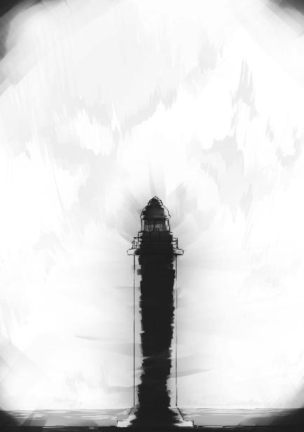
チェイン・キャストを併用した『爆裂』。
戦略級魔法『海爆』。
単に水を水蒸気に変えるだけでなく、生み出された瞬間、水蒸気の分子をさらに加速することで威力を高めた水蒸気爆発が、新ソ連の高速艦十二隻を吹き飛ばした！
──こうして新ソ連海軍の佐渡島強襲作戦は失敗に終わる。日本軍も小型艦八隻の犠牲を出したが、将輝の『海爆』によって新ソ連艦隊の別働隊は全滅した。
西暦二〇九七年七月八日十四時七分。
一条将輝は、新たな戦略級魔法師となった。
◇ ◇ ◇
巳焼島、北東海岸部。
リーナは、先々月から稼働しているＣＡＤ開発研究棟を訪れていた。
新しいＣＡＤの開発には魔法師によるテストが不可欠だ。開発しようとしているＣＡＤのスペックが上がれば上がる程、テストする魔法師の能力はより高いレベルが求められる。
何だかんだ言って、リーナの魔法師としてのレベルは世界最高水準だ。開発スタッフにとってみれば、彼女は滅多に見つからない貴重なテスターである。いつも暇そうにしているリーナは、ＣＡＤ開発研究セクションで人気者となっていた。
この交流は、研究スタッフの側だけでなくリーナにも思惑があった。ただしそれは、匿われている立場として現地の人々と良好な人間関係を築く、という当たり前のものではない。
亡命時に取り上げられたＣＡＤを返して欲しいというリーナのリクエストに、達也は最新型のＣＡＤを貸し与えるという形で応えた。その結果をリーナは不満に感じていない。亡命時に持ち込んだＣＡＤよりも達也が用意した物の方が高性能だったのだから、不満を覚える余地は無かった。
ただ、物足りなさは残った。彼女はＵＳＮＡを脱出する際、彼女専用の武装デバイス『ブリオネイク』をスターズの武器庫に置いてきている。元々参謀本部の許可が無ければ作戦行動時も持ち出せない物だ。日本に持ってこられなかったのは当然だった。
ただ遠く離れてしまうとかえって執着が生じるのは、人も物も余り変わらない。この島に落ち着いて一週間で、リーナはブリオネイクが恋しくなった。
あの武装デバイスにはＦＡＥ理論という特殊な学説が使われている。しかし達也がＦＡＥ理論を解明しているのは本人の口から確認済みだ。達也の指導下にあるこの島の技術陣がＦＡＥ理論を使ってブリオネイクのレプリカを作り出す能力を持っているのは間違いない、とリーナは考えている。彼女は開発スタッフと仲良くなって、あわよくばブリオネイクの代わりになるデバイスを作ってもらいたいという、虫の良いことを考えているのだった。
今日も彼女は下心満載で、気前よく開発スタッフのリクエストに応えていた。
その、最中のこと──。
「うひゃ!?」
突然襲ってきた想子波動に、リーナは素っ頓狂な声を上げてしまう。
「何これ......？」
波動の強さ自体は、大したことがない。だが完全な不意打ちで、背後からいきなり背中を突かれたような不快感があった。
前触れの無い想子波動を感じたのはリーナだけではない。開発棟のあちこちで、魔法的知覚力を持つ者が不快げに顔を顰めている。
「大規模魔法を発動しようとして、制御しきれなかった余剰想子？ でもこんなに大量の余剰想子を撒き散らすなんて、原因の魔法は戦略級......？」
現在の情勢下で戦略級魔法を使うとすれば、ベゾブラゾフのトゥマーン・ボンバか、劉麗蕾の霹靂塔。だが二人とも、こんな初心者じみた力の無駄遣いはしないはずだ。
（初心者じみた？）
自分が思い浮かべたフレーズに、リーナは引っ掛かりを覚えた。
（確かに、初めて使う魔法なら、この無駄に想子波動を撒き散らす拙さも理解できる......。これってもしかして、達也が開発していた新戦略級魔法？）
リーナは正しい結論にたどり着いた。しかし彼女は、自分の推理を検証できなかった。
突如鳴り響いた警報に、リーナは思考の中断を余儀なくされた。
「不審船の接近だって!?」
「ステルス魔法で接続水域の内側まで接近された!?」
（ステルス魔法ですって!?）
飛び交う職員の声に、リーナの意識は海へと向けられた。
◇ ◇ ◇
（何だ、今の波動は!?）
調布市内、目的地の病院まで一キロの路肩に停止しているドライバンの中で、光宣は不意に押し寄せてきた想子の荒波に、思わず精神の集中を乱してしまった。
「しまった......！」
その所為で、レグルスを通じて行使していたステルス魔法のコントロールをしくじってしまう。
光宣はすぐに、魔法の制御を取り戻そうとした。
だが次の瞬間、無意味だと諦めた。
今の短い時間で、輸送艦は海上レーダー網や成層圏プラットフォーム監視システムに所在を捉えられてしまったこと、間違いない。接近した状態で一度偽装が解けてしまえば、もう一度完全に姿を消したところで誤魔化しきれるものではなかった。
（......完全な奇襲が成功するより、直前で気付かれた方が陽動効果は高いはずだ）
光宣は心の中で自分にそう言い聞かせて、本命の病院に意識の焦点を移した。
◇ ◇ ◇
過剰な想子波の放出は、輸送艦ミッドウェイに乗船中のパラサイトにも影響を与えていた。
「レグルス中尉!?」
突然ステルス魔法が解除されたことに驚いたのは、ベガだけではなかった。
「申し訳ありません！ 思わぬ想子波動に集中が乱れてしまいました！」
レグルスは、自分の魔法的ステルスフィールドが消失した理由をそう思い込んでいた。
「直ちに再開します！」
慌てて光学迷彩魔法を再発動しようとする。
「いや。中尉、もう良い」
だがそれを、声に出してレグルスを咎めたベガが制止する。
「目的地はすぐそこだ。もう偽装は必要無い。それより、突入を開始する！」
ベガの命令を受けて、デネブがキャビンから出て行く。今回の作戦では飛行戦闘服──ＵＳＮＡ軍では『スラストスーツ』と呼ばれている──は使用しない。パラサイト化したスターダストは飛行デバイスと相性が悪かった。上陸には伝統的なツール、ボートを使うことになっている。デネブはその、上陸用ボートの準備を指揮しに行ったのである。
「スピカ中尉とレグルス中尉は、上陸支援砲撃準備」
「イエス、マム！」
このミッドウェイは輸送艦であり、対空・対艦機銃と対潜ミサイルランチャーは少数ながら備えているが、対地攻撃用のフレミングランチャーは搭載していない。
だが小型爆弾は豊富に積んでいる。そしてスピカもレグルスもパラサイトの専門化傾向が現れているとはいえ、移動系魔法で野戦砲の代わりくらいは務める能力が残っている。
「レイモンド・クラーク。万が一この艦が攻撃を受けた場合は、防衛を頼む」
ベガはそう言い残して、一緒に上陸するデネブの所へ向かった。
◇ ◇ ◇
巳焼島はつい最近まで魔法師犯罪者用の監獄に使っていた地区と、魔法研究施設群の建設が進んでいる地区に分かれている。前者が島の西岸、後者が島の北東岸で、恒星炉プラントも北東沿岸部に建設中だ。
不審船は巳焼島の北東から接近していた。恒星炉プラントが狙いだと、島のスタッフはすぐに理解した。
未だ所属を明らかにしていないウェーブ・ピアサー型双胴船は、ハイピッチで減速しつつ既に領海内へ侵入している。ただ、今のところ島の諸施設に対して攻撃はしていない。巳焼島には四葉家の配下で固められた水上警察が駐在しているが、この状態では臨検以上の措置は執れない。
実際には、警察の警備艇は出動しなかった。不審船の軍事的意図は明らかだ。臨検に応じるはずがないと分かっていて警備艇で接近するのは、殉職者を増やすだけの結果にしかならない。
守備要員の魔法師たちは、何時でもシールド魔法を発動できるように身構えた。
それに、呼応したのだろうか。
沖合四キロまで近づいた不審船から、突如爆弾が撃ち出された。
フレミングランチャーやグレネードランチャーによる射撃ではない。移動魔法による射出だ。
爆弾自体は小型だが、数が多い。まるで多弾頭榴弾を使ったような炸裂弾の雨に、守備隊は一斉に魔法障壁を展開した。
空中に次々と、光の華が咲く。
魔法障壁に負荷を与える飛散物の運動量は、大したことがなかった。
それよりも爆発に伴う閃光が、守備隊の視界を奪った。
閃光弾か、という声が障壁を維持する魔法師の間から上がる。
しかし仮に閃光弾だとしても、魔法障壁を解くわけにはいかない。閃光弾に紛れて、殺傷力の高い本物の爆弾が襲ってくるかもしれないからだ。
不審船がさらに近づく。
その陰から、二隻の上陸用ボートが姿を現した。
すぐに迎撃チームが海岸へと出動する。
だが、厚みのある陣容とは言えない。爆弾の雨は降り続いており、その防御にも人数を割かなければならない。
迎撃チームはまず、ボートを転覆させようと直接干渉を試みた。だが上陸ボートは二隻とも強い対抗魔法に守られていて、直接的な干渉を受け付けない。
ボートを直接沈めることを断念した島の魔法師は、海水に干渉して接岸を阻もうとした。
──離岸流を再現して沖へ向かう海水の流れを作る。
──海面を爆破して大波を起こす。
──海中に氷の銛を作り出してボートの船底に突っ込ませる。
しかしボートその物に対する攻撃は魔法シールドで、ボートの前進を妨害する攻撃は移動系魔法で防がれた。
迎撃要員の魔法力が弱いわけではない。彼らは四葉分家の一つ、真柴家配下の魔法師で、島が監獄だった頃から引き続いてここの警備と防衛を担当している。真柴家の血族こそいないものの、収監されていた凶悪犯を力尽くで抑え込んできた実績を持つ魔法師たちだ。
その彼らが力負けしているのは、単純に、ボートに乗っているパラサイトの能力が強いからである。
迎撃に当たっている魔法師たちは既に、相手がパラサイトであることを知っていた。巳焼島にはパラサイトを探知するレーダーが、実験的に設置されている。
上陸用ボートから迎撃チームへ銃弾、擲弾を交えた攻撃が加えられた。
迎撃に出た魔法師は、掩体の陰から顔も出せない状況に陥った。
援軍を出そうにも、移動魔法による砲撃は散発的ながらまだ続いている。魔法障壁要員を減らすわけにはいかない。軍ならば司令部に相当する島の管理棟スタッフは、真柴家ではなく本家にこの状況を知らせ、指示を仰いだ。
◇ ◇ ◇
島が攻撃を受けている状況は、管理棟以外でもモニター可能だった。ＣＡＤ開発棟にいるリーナも、迎撃の様子を背後から映したカメラの映像を実験室の大型ディスプレイで食い入るように見ていた。
不意にリーナが計測用の有線ヘルメットを外し、テストを担当していた男性研究員に歩み寄った。
「ねえ」
「な、何でしょう」
リーナは深雪に匹敵する美貌の持ち主だ。絶世の美少女に正面から見詰められ、三十歳になったばかりの研究員は舌をもつれさせた。
「計測用のヘルメットじゃなくて、防爆用の物は無いかしら」
この場所に馴染んでいるリーナはすっかりタメ口だ。しかしそんなことは、このセクションでは今更だった。研究員が目を見開いたのは、それを気にしたからではない。
リーナは研究員の驚きに頓着せずリクエストを続けた。
「できれば、もっと動き易い装甲服も」
ＣＡＤの実験には危険も伴う為──自分の魔法が意図せず暴走するリスクがある──少なくとも外部からの衝撃を緩和するプロテクターをリーナは身に着けている。だが動き回ることを考慮していない為、決して戦いやすい格好ではない。
「あ......ありますが」
「サイズも？」
「大丈夫、だと思います」
「すぐに用意してもらえるかしら」
「何故......ですか？」
この質問はリクエストを受けた研究員とは別の、二十代後半の女性スタッフから放たれたものだった。
「あの船はＵＳＮＡ海軍の輸送艦」
地上視点の映像の、後方に小さく映っている双胴船に目を向けながら、リーナが断定的に告げる。
「襲ってきているのはパラサイト。ならばあれは、ワタシが対処すべき相手」
「............」
「ここにいるワタシは、『シリウス』ではありません」
リーナの口調が変わった。
「それでもワタシは、同胞の過ちに知らん顔をするつもりはありません」
亡命中でも、彼女は自分のことをＵＳＮＡの国民でありステイツの軍人と規定している。
それは「シリウス」としてではなく、ＵＳＮＡ軍に所属する戦闘魔法師しての矜持だった。
◇ ◇ ◇
達也が本家からの緊急通信を受け取ったのは、水波の病室と同じ階の、警備室でのことだった。
ただの通話ではなく、緊急通信だ。そのシステムがあるのを達也は知っていたが、まさか自分宛てに使われることがあるとは、まるで予想していなかった。
『達也様、音声のみで失礼します』
「花菱さん、ご用件をどうぞ」
専用の有線回線を通じて話し掛けてきたのは四葉家執事序列第二位であり花菱兵庫の実父である、花菱但馬だった。
彼の担当業務は実力行使を伴う各業務。平たくいえば荒事だ。花菱執事がコンタクトを取ってきたという事実だけで、達也は何が起こっているのかおおよその見当がついた。
「巳焼島が襲撃を受けているんですね？」
『然様でございます。ＵＳＮＡ海軍高速輸送艦ミッドウェイから発進したボートによる上陸作戦です』
本家は巳焼島のスタッフとは違って、ミッドウェイの艦影からその正体を把握していた。
「正規軍の艦艇を使ってきましたか......」
これには達也も、驚きを禁じ得ない。ＵＳＮＡは日本に対する敵対姿勢を最早隠すつもりがないのか、それとも「叛乱」とかいう見え透いた誤魔化しで押し通すつもりなのか。
『上陸部隊の陣容はパラサイト二十二体。ミッドウェイ艦内にもパラサイト三体の反応があります。通常人の生体反応もありますが、戦力としては無視してもよろしいかと』
輸送艦に残っている通常人は、航行スタッフに違いない。日本領土に対する攻撃に積極参加しているのか、命令を盲目的に遂行しているだけなのか。精神操作を受けている可能性も達也は考えた。
だがそれはこの際、本質的な問題ではない。
「防衛部隊は苦戦しているのですね？」
『残念ながら。ボートの二体と輸送艦の二体から、スターズ一等星級に匹敵する魔法力が観測されました。ミス・シールズが証言したスターズのパラサイトと推測されます』
──それでは対抗できない。
達也は即座に、そう判断した。
どうやらスターズの援軍を阻止したと思っていたのは誤りだったようだ。一杯食わされたのは自分たちの方だったらしい......。
達也は胸の奥から湧き上がった無念を、他人事のようにあっさり押し潰した。
「巳焼島に急行します」
『よろしくお願い致します。病院の防衛には、追加の人員を手配します』
「了解です」
『以上でございます』
緊急回線を通じた音声通話が切れる。
この通信は個人用の受話器ではなく、ヴィジホンと同じスピーカーとマイクを通じて行われていた。室内にいる者には、耳をそばだてなくても達也と花菱執事の会話が聞こえていた。
「良いの？」
達也の隣にいた夕歌が話の内容を把握しているのは当然のことだ。
そして、その夕歌が達也にこう訊ねるのも、事情を知る者にとっては自然な流れだった。
「良いか悪いかで言えば、良くありません」
達也は微かに眉を顰め、夕歌と正面から向き合いながら答える。
「ですが、建設中のプラントを破壊させるわけにも行きません」
「私が言うまでもないことだけど、これは陽動よ」
「分かっています」
夕歌の次のセリフを待たず、達也は隣の更衣室に向かった。
夕歌も、達也を呼び止めはしなかった。
深雪が水波に勉強を教えている談話室に、達也が姿を見せる。
達也の格好を見て、深雪も水波も驚きを隠せなかった。
「......お兄様、出撃ですか？」
達也は四葉家が開発した飛行戦闘服『フリードスーツ』に身を包み、手にはそのヘルメットを抱えていた。
「巳焼島がパラサイトに襲われた。合計二十五体の敵中には、スターズの一等星級が四人含まれている。リーナが守備隊に加勢しても、対応しきれない」
達也の答えは、やや言い訳臭かった。
「分かりました。お兄様、ご武運を」
それに対する深雪の言葉には、一切の裏が無かった。
「二人は病室に戻った方が良い」
「分かりました」
「なるべく早く戻ってくるつもりだが......深雪、水波、無理をするなよ」
深雪は達也が何故そんなことを言ったのか、理解していた。
深雪だけではない。水波も、達也の出動が彼を引き離す為の策によるものであり、彼がいない内に光宣が襲ってくるに違いないと分かっていた。
「はい」
深雪は光宣の襲撃があると理解しながら、笑顔で頷いた。
「ご心配には及びません、お兄様。ここはわたしにお任せください」
深雪の瞳には、欠片の不安も浮かんでいなかった。
◇ ◇ ◇
守備隊の抵抗は、デネブの予想を超えて頑強だった。
激しくはない。デネブのボートにもベガのボートにも被害は出ていない。
だが、中々岸に近づけない。ボートが止められたり押し戻されたりすることこそないが、船足は間違いなく遅滞妨害を受けている。
船に対する攻撃も、簡単に防げるものではなかった。スターダストだけでは船体にダメージを被っていただろう。簡易な造りの上陸用ボートだ。沈められていた可能性も十分にある。
「アンタッチャブルか。虚名じゃなかったんだな」
デネブは獰猛な笑みを浮かべて呟いた。彼女は自分の思考が声になっていることに気付いていない。彼女は元々好戦的な質だが、興奮して自分の状態が分からなくなる程ではなかった。これはパラサイト化による変化だが、デネブ本人に自覚は無い。
予定より時間は掛かっているが、前進を続ければいつかはゴールに到達する。
遂に、上陸が間近となった。岸に立つ敵の顔が、肉眼でハッキリと見分けられる。
「あれは......？」
自分の正面に小柄な人影を認めて、デネブは訝しげに眉を顰めた。
魔法師の能力に性差は無い。前線に立つ女性魔法師は、珍しい存在ではなかった。
デネブの意識に引っ掛かったのも、装甲服を着てグレネードランチャーのような武器を構える相手が、女性だったからではない。
銃口を向けるその立ち姿が、デネブの記憶を刺激した。
「あいつ！」
無意識下で覚えていた疑問の答えが、デネブの意識に到達する。
「シリウスの名を汚す裏切り者！」
デネブがウェポンベルトからナイフを抜き、岸に向かって投げた。
ナイフは正確にランチャーを構える女性魔法師へと飛んだが、命中する前にコントロールを失い彼女が立っている舗装された堤防に落下する。
デネブの得意なスタイルは白兵戦。遠隔攻撃魔法は余り上手くないと自覚している。彼女はボートの分隊を率いる責任から、彼女がシリウスと認める魔法師へすぐにでも飛び掛かりたい欲求を懸命に堪えた。
（まだか......まだか！）
彼女が睨み付ける視線の先で、女性魔法師が引き金を引く。
ランチャーの銃口が火を噴き、
自分も構築に参加していたボートの多層シールドが撃ち抜かれたのを、デネブは知覚した。
リーナはヘルメットの望遠機能で、ボートの指揮を執っているベガとデネブの姿を認めた。
（シャル、レイラ、貴女たちも!?）
ボートに乗っているのは全員がパラサイトだと分かっている。その中にベガとデネブを見付けたリーナの心に湧き上がったのは、怒りでも「ざまあ見ろ」という歪んだ喜びでもなく、哀しみだった。彼女はどこまでも善良にできているようだ。
（パラサイトになったなら、真実を知ったでしょうに）
しかし、トリガーに掛けた指が躊躇で固まることはなかった。
リーナは、戦士として精神的に欠けているところが多い。むしろ戦士に向いていないとハッキリ言い渡してやる方が彼女の為──そういうレベルだ。
だが、敵に同情して味方を危地に陥れることだけはない。それだけは、彼女が持っている戦士の適性だった。
彼女が構える火器は、銃身の太さこそグレネードランチャーだが銃口は大口径ライフル程度しかない。異様に銃身が厚いのだ。
バレルの内側にライフリングは無い。その点だけ採り上げれば、散弾銃に見える。
しかし、これは純粋な火器ではなく武装デバイスだった。巳焼島で開発中の、武装一体型ＣＡＤの試作品だった。
開発スタッフから渡された武装デバイスの引き金を、リーナが引く。
分厚い銃身の根元で、導電体がプラズマ化する。プラズマは自らの膨張圧により銃身からあふれ出ようとするが、銃口に生じた強力なプラスの電場に電子が引き寄せられ、逆に陽イオンは、その電場に反発する形で拡散が抑え込まれる。
電子と陽イオンが分かれたところで──と言っても掛かる時間は一瞬だ──今度はバレル内部に陽イオンを銃口方向へ加速する電磁場が形成される。バレルが超小型の線形加速器になったのだ。
この時点で銃口の電場は解除されている。拡散しようとした電子は銃口から噴き出した陽イオンに引きずられ中性粒子雲となってターゲットに襲い掛かる。
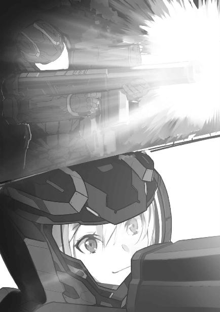
つまり、この武装デバイスは荷電粒子ライフルだった。
リーナのブリオネイクとは全く原理が違う。威力も、明らかに劣る。だが──、
（これって、中々......！）
リーナが現在の憂鬱な状況を一瞬忘れて、ご機嫌になる程度の性能はあった。
中性粒子（中性子ではなく、全体として電気的に中性のプラズマ群）のビームが、デネブの乗るボートの魔法シールドにぶつかる。
障壁魔法が想定しているのは音速の十倍程度までの固体物。音速の百倍以上に達する、総質量が小銃弾に匹敵するプラズマの衝撃を受け止めることは想定していない。
中性粒子ビームは魔法シールドを貫き、ボートを貫通して海中で小規模な水蒸気爆発を起こした。
デネブとその同乗者が海に投げ出される。
リーナは銃口をベガのボートへ向けた。
ベガが重力制御魔法で海水の塊を持ち上げて盾にする。リーナの武装デバイスの性質を、ベガは一目で見抜いたようだ。
それに対してリーナは、達也に用意してもらった思考操作型ＣＡＤで反重力中和魔法を発動した。これは重力場そのものに干渉するのではなく、斥力にねじ曲げられた重力場を正常な引力に書き直す魔法だ。
重力制御魔法には、重力の性質を引力に保ったままその方向を改変するものもある。ベガの魔法が重力のベクトルに干渉するものだったならば、リーナの反重力中和魔法は何の効力も発揮しなかった。
だがリーナの魔法により、ベガが掲げた水の盾は海面に落ちた。
荷電粒子ライフルのトリガーが引かれる。
中性粒子ビームが、ベガの魔法シールドに激突。
隊長の名は伊達ではないのか、デネブのシールドを貫いた粒子線に、ベガの障壁は耐え抜いた。
（まだよ！）
しかし次の瞬間、拡散して海面に散ったと見えたプラズマが高熱を帯びて輝く。
リーナの得意魔法『ムスペルスヘイム』。
通常であれば空気分子を高エネルギープラズマに変えるだけだが、この場の大気には荷電粒子ライフルが放ったプラズマが散乱している。今、リーナが発動した『ムスペルスヘイム』は規模こそコンパクトだが、威力は高い。
灼熱の領域に触れて、魔法障壁が崩壊する。
それと、ほとんど同時。ベガと彼女の指揮下にあるスターダストは、ボートを捨てて一斉に海へと飛び込んだ。
プラズマがボートを吞み込む。
その熱で水素燃料が発火し、ボートは海の藻屑と消えた。
リーナが武装デバイスを下ろし一息吐く。
だが油断は、一つ息を吐く間だけのことだった。
リーナのミラーシールドが、見えない光条を海へ叩き落とす。
連射される高エネルギー赤外線レーザー弾。レグルスの『レーザースナイピング』だ。
しかし連射と言っても、魔法の性質上射撃と射撃の間には一秒前後の間隔がある。
リーナはレーザースナイピングの着弾を認識した直後にシールドを解いて、レグルスの居場所を確認した。
海岸から約一キロ。輸送艦ミッドウェイの舳先だ。
リーナがミラーシールドを張り直す。
ミラーシールドは、術者から見て外から内に入ってくる電磁波を遮る障壁。内側から発射する粒子線は邪魔しない。
リーナの武装デバイスから中性粒子ビームが放たれた。
「あらっ？」
しかしその直後、リーナの口から気の抜けた声が漏れる。輸送艦に命中した手応えが無かったのだ。
ミラーシールドは外側から入ってくる可視光線も遮断する。つまり、シールドの向こう側で何が起こっているのか見えない。だが船体に中性粒子ビームが命中すれば爆発の音が聞こえてくるだろうし、魔法障壁で食い止めたのであれば想子場の揺らぎが伝わってくるはずだ。
リーナは移動系魔法で大きくポジションを変えてレーザースナイピングの照準を外し、ミラーシールドのない状態で輸送艦に目を向けた。
「ゾーイ!?」
輸送艦の舳先には、レグルスと並んでスピカが立っていた。
スピカは右手を真っ直ぐ伸ばしてリーナを指さしている。彼女の得意魔法、『分子ディバイダー・ジャベリン』の発動態勢。
しかしあの魔法は中距離用で、一キロ離れていては届かない。
（......そうか！）
リーナは荷電粒子ライフルのトリガーを引いた。
中性粒子ビームが発射され、リーナとスピカのちょうど中間地点で拡散を始める。輸送艦の手前では、ビームは完全に霧散していた。
（やっぱり！）
分子ディバイダーは電子の電気的極性を見かけの上で逆転させ、分子間結合を切断する魔法。
荷電粒子ライフルに向けて直線上に形成された電気的極性逆転のフィールドが、中性粒子群に含まれる電子の極性を反転。中性粒子群を正電荷の粒子の集合体に変えることで、粒子同士を反発させ拡散に導いたのだ。
レグルスが、スピカの隣から跳ぶ。
リーナが荷電粒子ライフルの銃口をレグルスに向ける。だがレグルスは空中・海面を蹴ってジグザグに進み、リーナに照準をつけさせない。
リーナの得物がブリオネイクであれば、レグルスの回避は意味をなさなかった。ブリオネイクのプラズマビームは、リーナが定義したとおりに走る。収束も拡散も、屈曲も思いのままだ。リーナが目で追えないスピードで回避しない限り、ブリオネイクの砲撃からは逃れられない。
だが荷電粒子ライフルは銃口から真っ直ぐビームが撃ち出されるだけだ。照準をつけるのは射手のテクニック。リーナはライフル射撃が、それ程上手くない。
リーナは荷電粒子ライフルを投げ捨て拳銃を──正確には拳銃一体型ＣＡＤを抜いた。貫通力増幅の武装デバイスなら日本でも従来から作られている。彼女は自分が慣れている武装デバイスに近い物をＣＡＤ開発棟のスタッフに出させて装備していた。
輸送艦が沖へ遠ざかっていく。
だがリーナに、それを気に掛けている余裕は無かった。
◇ ◇ ◇
調布碧葉医院の駐車場から淡いブルーの自走車が発進する。達也が運転するエアカーだ。
交通法規、航空法を無視して路上から飛び立ったエアカーを、光宣はパラサイドールではないガイノイドに持たせた隠しカメラを通じて見送った。
「......ミッション開始だ」
独り言のような口調で光宣が呟く。
もちろん実際には、独り言ではなかった。
光宣の言葉に応じて、運転手がドライバンを路肩から発進させる。この運転手は九島家から派遣された人間で、今は光宣の暗示下にある。
光宣の声は、無線を通じて他のドライバンにも伝えられた。
光宣が乗っている物を含めて、合計六台。その貨物室にパラサイドールと戦闘用ガイノイドを積み、それぞれ別々の道を通って水波が入院している病院を目指した。
◇ ◇ ◇
道路交通に関する法規と航空管制に関する法令を無視して公道から空に飛び立った達也は、当局の停止命令も追跡も受けなかった。
登録上、航空機ではなく自走車であるエアカーは無線チャンネルを開けておくことを要求されていない。警察のヘリコプターではエアカーのスピードについていけないし、国内の道路から離陸する飛翔体に対して、空軍にはスクランブル発進を実施する手順が無い。
つまり、当局には命令する手段も追跡する手段も無かったのである。
ナンバープレートは街路カメラで見られているだろうから、後で出頭を命じられる恐れはある。だがその時はその時だ。達也の側には、自国領土である巳焼島が外国勢力による侵攻を受けているにも拘わらず国防軍が出動しなかった、という言い分がある。
法的な免責の根拠にはならないが、取引材料にはなる。それに今は、そんなことを気にしていられる状況ではなかった。
達也は海岸線に出ると、東京湾を縦断し浦賀水道上空を抜けるコースにエアカーを乗せた。一応、陸地の上を避ける気遣いはあったのだ。
達也はエアカーの速度を時速九百キロまで上げて巳焼島を目指した。
◇ ◇ ◇
リーナは右手に拳銃、左手にナイフを構えてレグルスを迎え撃つ構えを取った。
だが彼女に襲い掛かったのはレグルスではなく、海中から飛び出したデネブだった。
「リーナぁっ！」
デネブがリーナを愛称で呼んだのは、親愛の情からではない。余計なことを考える余裕が意識から消失して、かつての習慣が蘇っただけだった。
「レイラっ！」
リーナもそこは、勘違いしなかった。彼女は海面から飛び出し、上から襲い掛かってくるデネブに魔法を向けた。
加重系攻撃魔法『ハンマー』。敵の存在を投影図で認識し、見えている面に対して圧力を掛ける魔法。
左側面から加えられた衝撃を、デネブは右方向への移動魔法で緩和した。
十数メートルの近距離に、レーザースナイピングの気配が生じる。
リーナはミラーシールドを展開するのではなく、ウェポンベルトに差したままのナイフをレグルスに放った。音声コントロールではなく思考操作型ＣＡＤによる『ダンシング・ブレイズ』だ。
ナイフはリーナが手で触れることなく、ナイフのホルスターから飛び出してレグルスを狙う。
レグルスが体勢を崩したことにより、赤外線レーザー弾は空へ逸れた。
リーナが放ったナイフはレグルスの背後で反転し、レーザースナイピング用の武装デバイスに襲い掛かる。
機関部にブレードが刺さった武装デバイスを、レグルスが放り投げた。
武装デバイスが海面で爆発する。
レグルスは左腰から前に突き出しているグリップを右手で握り締めて、引き抜いた。
薄く幅の狭い金属ベルトが華奢な剣、レイピアに変わる。
無論、単に突き刺す細剣ではない。金属のベルトはレグルスの放出系魔法により、全体が良くしなる電撃ブレードに変わった。
その変化に注目している余裕は、リーナには無かった。
加重系攻撃魔法『ハンマー』が、今度はリーナへと襲い掛かる。彼女が使った『ハンマー』より威力は上だ。
「シャル!?」
続けざまに加重系魔法がリーナを攻撃する。
「......馴れ馴れしいのよ」
ベガが堤防に上がってきたのは、リーナが大きく内陸側へ後退した後だった。
リーナは拳銃とナイフを構え、油断なく左右へ目を配る。
正面にベガ。
右にレグルス。
左にデネブ。
そしてその背後から、パラサイト化したスターダストが次々に上陸してくる。
しかしリーナは、一等星級三人の相手で精一杯だ。スターダストまで、手が回らない。
「貴女たちもパラサイトになったのですね」
状況の打開を試みて、リーナが母国語でベガとデネブに話し掛ける。
ベガはリーナの言葉に反応を見せなかったが、デネブは眉を小さく上下させた。
「パラサイトになった今なら、真実を知っているはずです。私がパラサイトを呼び寄せてなどいないと。私が日本に内通したなどというのは、冤罪であることを！」
「日本に内通していないのだったら、何故日本に亡命した！」
デネブが興奮を露わにする。
「身を守る為ですよ。貴女たち、叛逆者から」
リーナは表面上、冷静に言い返した。心の中はデネブに負けないくらい荒れ狂っていたが、リーナはそれを意志の力で抑え込んでいた。
「そうね。あの時は言い掛かりだったわ」
ベガの口調は、冷静とは言えなかったが興奮してもいなかった。彼女はリーナに嘲笑を向けていた。
「でも、今はこうして日本の民間軍事企業に手を貸している。ステイツの軍人でありながら、ステイツに敵対している」
「日本はステイツの同盟国です。日本が新ソ連に攻められている時に、一緒になって破壊工作を企むなんて不誠実な真似が許されるはずないわ」
「それを決めるのはペンタゴンよ。前線の軍人である私たちじゃない」
「クッ......」
ベガがリーナをやり込めている間にも、スターダストは守備隊に攻撃を加えて徐々に内陸へと攻め上がっている。
リーナにもそれは見えている。だが目の前の三人に背を向ければ、斃れるのは彼女自身だ。
それが分かっているリーナは、身動きを取れない状態になっていた。
「裏切り者のシリウス。貴女がここにいてくれて良かったわ。ステイツに敵対した現行犯で、貴女を堂々と粛清できるのだから！」
ベガがそう言い終えるのと同時だった。
ベガ、デネブ、レグルス。三人のスターズ一等星級隊員、ＵＳＮＡトップレベルの魔法師と融合した三体のパラサイトが、一斉にリーナへ襲い掛かった。
デネブが移動系魔法で間合いを詰め、大型ナイフで斬り掛かる。
同種の魔法で距離を取ったリーナに、デネブが拳銃を発砲。リーナもこれに応じ、シールド越しの撃ち合いになる。
そこにレグルスが自己加速魔法で突っ込み、スタンブレードをシールドに叩き付ける。
足が止まったリーナに、ベガが加重系魔法で攻撃。
リーナが分子ディバイダーで重力場を切り裂く。──正しくは、空間に対する分子ディバイダーの事象改変と加重系魔法の事象改変で定義矛盾を引き起こし、魔法を強制終了させた。
その影響はベガだけでなく、リーナにも返る。
シールドが揺らぐ。レグルスのブレードから放たれた電撃がリーナの魔法障壁を破砕する。
デネブが放った拳銃弾がリーナの左肩を捉えた。
リーナが着ている装甲服は拳銃弾を食い止めた。だが、防ぎきれなかった着弾の衝撃により、リーナが左手のナイフを手放してしまう。
リーナは咄嗟に、ムスペルスヘイムを発動した。
狭い範囲に生じた高エネルギープラズマを、ベガ、デネブ、レグルスは跳躍して躱す。
プラズマが消滅し、その中央に肩で息をするリーナが姿を見せた。
ベガとデネブ、ベガとレグルスが一瞬ずつ視線を合わせた。
リーナが拳銃のトリガーを引く。
発射された銃弾に、貫通力増幅の魔法は作用していなかった。
拳銃弾をレグルスが魔法障壁で受け止める。
頭上から落ちてきたダンシング・ブレイズを、デネブが手に持つナイフで叩き落とす。
ベガが作り出した斥力場が、リーナの身体を弾き飛ばした。
舗装された堤防沿いの道から溶岩原の岩場へ、リーナが落下する。
ベガたち三人が慎重な足取りで道路の端に歩み寄り、リーナを見下ろす。
リーナは辛うじて片膝を突き、起き上がっている。──が、すぐには立ち上がれない。
ベガが右手をリーナに向けた。
リーナは闘志を失っていない目で、ベガを見上げ、睨んだ。
ベガが薄らと笑う。
デネブが拳銃を、レグルスが細剣の切っ先をリーナに向ける。
リーナは口惜しげに唇を嚙んだ。
その、直後のことだった。
墜落と見まがう勢いで、淡いブルーの自走車が空から風を裂いて落ちてきた。
道路の端に立つベガたちを目掛けて。
ベガがエアカーに斥力場をぶつける。
だが彼女が作り出した斥力場は、完成する直前に霧散した。
目を見張るベガ。
デネブとレグルスも、信じられないという目でエアカーを見上げた。
デネブの十メートル手前で、自走車──エアカーが着陸する。
そのまま自分たちを轢き殺しにくるエアカーを、三人は堤防に跳躍して躱した。
エアカーがタイヤを軋らせずに停止する。道路との摩擦で止まるのではなく、車体全体に制動を掛けた結果だ。
運転席のドアが開き、飛行装甲服フリードスーツに身を包んだ達也が、巳焼島の戦場に降り立った。
◇ ◇ ◇
調布から巳焼島まで二十数分。
全行程を亜音速で翔け抜ければ、その二分の一の時間で到着した。だが調布から海上に出るまでの時間、東京湾内で加速する時間が、それだけの時間を要求した。
巳焼島上空に到着する前から、達也には厳しい状況が分かっていた。島からリアルタイムでデータを受信していたし、リーナと敵が撃ち交わす魔法の波動もキャッチしていた。
しかし達也に、瞬間移動は使えない。現代魔法に、テレポーテーションは無い。
彼は湧き上がる焦りをねじ伏せ、エアカーのコントロールに意識を集中した。
巳焼島がノーズのカメラに映る。
達也はほとんど減速せずに、戦場となっている島の北東岸へと突入した。
航空機用の滑走路は使わない。
戦闘が行われている堤防沿いの道路に、達也は直接着陸した。
途中、エアカーの進路を妨害する目的で放たれた反重力魔法は術式解散で無効化する。
道路上には味方の守備隊もいたが、彼らを轢かないように急制動を掛ける。
その途中には敵の個体もいたが、そちらは一切考慮しなかった。
──エアカーで轢き殺せるなら、その分、手間が省ける。
達也はそういう風にしか考えなかった。
三体のパラサイトが、跳躍魔法でエアカーの進路から逃れる。その三体がスターズ一等星級のなれの果てであることは一目で──「眼」を向けるだけで分かった。
巳焼島の車道は左側通行だが、それを無視してエアカーを右側に止め、達也は運転席を降りる。道路横の岩場には、リーナが苦しげに膝を突いていた。
「リーナ、まだやれるか？」
リーナの状態は「視」えている。であるにも拘わらず、達也は非情な問い掛けを行った。
「やれるわ」
リーナが全身に力を入れて立ち上がる。ふらりとよろけたが、強く足を踏みしめて何とか転倒を免れた。
「すぐに消す。掩護を」
リーナの応えを待たず、達也が堤防の三人へ振り向く。
もっともリーナは、達也の冷たい声がもたらした、背筋を震わせる戦慄で返す言葉を失っていたのだが。
達也をエアカーごと吹き飛ばす魔法がベガから放たれる。
しかし彼女の魔法は、魔法式がエイドスに定着する直前、逆に吹き飛ばされた。
達也の全身から放たれた高圧の想子流で。
「術式解体!?」
ベガとデネブの口から、同じ言葉が流れ出る。
達也の右手が上がる。
その手に拳銃形態のＣＡＤは無い。
ただ、指さす。
スーツに内蔵された完全思考操作型ＣＡＤによる『雲散霧消』。
タイムラグは、ゼロに等しかった。
領域干渉を消し去る時間も観測されなかった。
情報強化を剝ぎ取る時間も観測されなかった。
生体組織の分子間結合を切り離す時間も観測されなかった。
ただ一瞬で、レグルスの身体が霧散する。服も、デバイスも、何も残らない。
残ったのは、想子の衣を纏った霊子情報体。
パラサイトの本体。
達也の左手が突き出される。
徹甲想子弾、射出。
その標的は「レグルスだったもの」ではなかった。
「拒絶」の念の下に硬く圧し固められた想子の砲弾を胸に撃ち込まれたベガが、激しく痙攣しながら堤防の上でひっくり返り、海へと落ちる。
徹甲想子弾は、その一発ではなかった。
レグルスが一瞬で消滅し、ベガが一撃で戦場から脱落する。
あり得ざる現実に立ち尽くすデネブを、達也の徹甲想子弾が襲う。
デネブは堤防のこちら側に転げ落ちた。
立ち尽くしていたのは、デネブだけではなかった。
リーナはヘルメットのバイザーを上げて、路上でのたうち回るデネブを呆然と見ている。
自分があれ程苦戦した三人を、達也が一瞬で無力化したのが信じられないのだ。
「リーナ、その女を見張っていてくれ」
達也はリーナがショックを受けていることも、彼女が誤解から自分の戦闘力を過大評価していることも理解していた。達也が「スターズのなれの果て」を短時間で無力化できたのは、不意打ちの側面が強い。
だが今、それを説明している時間はなかった。
パラサイトの本体が現れ、非物質生命体としての活動を始めていない。このステージが本番であり勝負所だ。
達也は体内で想子を練り上げ、パラサイトの本体目掛けて放出した。
術式解体のように正面一方向からではなく、前後左右上下、六方向から同時に。
パラサイトは達也の想子流を押し返そうとした。
それが不可能だと理解したらすぐに、自分から押し流されてこの場を逃れようとした。
しかし前後左右から同じ強さで圧迫され、上下はしっかりと押さえられている。
パラサイトは想子で殻を作り、内側の霊子情報体を守ろうとした。
しかしその想子が、外から押し寄せる想子流の侵食を受ける。
パラサイトは自然に回転しながら、殻の中に浸透する自分のものではない想子に固められていく。
達也の放った想子流が、小さな領域に集束していく。
最終的に、直径三センチの球状空間内に全ての想子が固定された。
堤防のコンクリートから十センチ──相対高度十センチに浮かぶ、直系三センチの非物質球体。
『封玉』が「レグルスだったもの」を幽閉した。
◇ ◇ ◇
深雪と水波は、達也の言い付けどおり病室に戻っていた。深雪は一人掛けのソファで読書、水波はリクライニングを起こしたベッドで試験勉強の続きだ。
電子ペーパーのページをめくっていた深雪が、ふと顔を上げた。
「......随分と素早いわね。見張られていたのかしら？」
「深雪様？」
自分が話し掛けられたと思って、水波はその意味を訊ねる。
だが深雪のセリフは、少し大きめの独り言だった。
「水波ちゃん、来たわよ」
だからといって、深雪は水波の問い掛けを無視しなかった。
「それは、もしかして!?」
水波が教科書を閉じ──端末の電源を切ったという意味だ──、ベッドから足を下ろす。寝間着姿ではなかったので、慌てて着替える羽目には陥らなかった。
「ええ」
深雪は頷き、インターホンで警備室を呼び出す。小さな画面に夕歌が登場した。
『深雪さん、お客様よ』
深雪が話し掛ける前に、夕歌の方からそう告げる。
「六方向からパラサイトの気配を感じます」
『......良く分かったわね。センサーの反応でもそのとおりよ』
深雪は魔法的感覚も平均的な魔法師を大きく凌駕していたが、卓越した作用力に比べれば一段落ちる印象があった。夕歌の驚きはその先入観に基づく物だったが......。
「わたし自身も、封印から解放されていますので」
『それが次期当主様の、本来の力ってわけか』
夕歌の呆れ声に、深雪は微笑みを返した。
『じゃあ、九島光宣が何処にいるのかも分かる？』
「光宣君の感触はあやふやです。仮装行列と鬼門遁甲で偽装していると思われます」
白旗を揚げたようなセリフの後で、深雪は「ですが」と続けた。
「他のチームから光宣君の気配を感じませんので、おそらく北東の道路から接近している車両か何かの中にいるのではないでしょうか」
『北東の、自走車ね？ 十文字家にもそうお伝えします』
「はい、お願いします」
『深雪さんは病室から動かないでください。院内に侵入されても、こちらで対処します』
「分かりました」
『......では、これで』
物分かりが良すぎる深雪の態度に夕歌は不審感を懐いたようだが、深雪を問い詰めたりはしなかった。
インターホンが切れて、深雪が軽くため息を吐く。
──お兄様のご帰還は、間に合いそうにない。
この状況を、深雪はそう判断した。
だが彼女の心の中に、達也に対する不満や恨み言、光宣の襲撃に対する不安は、まるで存在しなかった。
◇ ◇ ◇
光宣は病院の手前、約二百メートルでドライバンを降りた。このあたりは背の高い建物も多く、調布碧葉医院は最上階が少し見えているだけだ。
彼とほぼ同時に、荷台から六体のパラサイドールが降りてきた。
他の車も、積み荷は同じ。光宣が用意した戦力は、パラサイドール三十六体。旧第九研から奪取した十五体。それに加えて光宣は、生駒の工場に用意されていたガイノイドの素体から二十一体のパラサイドールを完成させた。
パラサイドールの素体は軍用のマシンソルジャーだが、彼女たちの服装はカジュアルな物だった。ボトムスは全員足首まであるパンツだが、上はブラウスやＴシャツ、サマーセーターなど様々だ。現在時刻は昼の最中で、この辺りも一般の通行人が歩いている。今日は新ソ連侵攻の情報でいつもより遥かに通行人は少なかったが、ゼロではない。閑散と言う程でもない。パラサイドールはその中に混じって違和感の無い格好だった。
違和感と言えば、最も強く異彩を放っていたのは他ならぬ光宣だろう。彼は魔法で姿を変えていなかった。彼が持つ天上の美貌に、道行く人々は足を止めて見とれる。病院へと進む光宣の周りに、人が吸い寄せられていく。
光宣が足を止めた。
群衆も足を止める。
光宣は、彼の行く手を遮る大柄な青年を見上げて口を開いた。
「十文字さん、通していただけませんか」
「こんな時間に姿を見せるとは思わなかった」
克人の返事は、光宣のリクエストとは関係の無いものだった。
「吸血鬼ではありませんから、夜にしか外出しないということはありません」
光宣は冗談交じりで克人のセリフに応えを返す。
「お前は確かに、普通の吸血鬼ではない。だが吸血鬼でないとも言えまい。吸血鬼は人の血を吸って、人を人間以外のものに変える。これはフィクションの中のエピソードだが、お前はリアルな存在だ」
克人は真顔で、そう言い返した。
「心外ですね。僕は手当たり次第に人を襲ったりはしません」
「だがお前は今、一人の少女を人間以外のものに変えようとしている」
光宣と克人の問答は街を行き交う人々の前で行われていた。
通行人の間からは「映画？」とか「ロケ？」とかの囁きも交わされていたが、それは少数派だった。
人々は、二人の会話に創作では片付けられない真実の重みを感じていた。
「十文字さん。ここを通してください」
光宣がもう一度、克人に要求する。
「九島光宣。お前を拘束する」
克人の答えは単なる拒絶ではなかった。
「どんな罪状で？」
「一般道路に軍事兵器を無許可で持ち込んだ罪だ」
克人の言葉と共に、彼の背後から十文字家の息が掛かった私服刑事が警察手帳を示しながら現れた。
兵器、という克人の言葉と、それを裏付けるような警察の登場に、群衆が動揺する。
「パラサイドールのことですか......。これは一本取られましたね。ですが、これだけ多くの一般人がいる所で戦えますか？」
光宣が、克人を挑発する。
「市民を巻き込むつもりか！」
その怒声と共に、克人が光宣を閉じ込めるべく障壁魔法を発動した。
しかしその瞬間、光宣と、少し離れて彼の背後にいたパラサイドールが入れ替わる。
瞬間移動ではない。克人と会話を始める直前、『仮装行列』で外見と「存在感」を入れ替えていたのだ。
光宣が魔法の電撃を私服刑事に放つ。
克人の部下が、障壁魔法で私服刑事をかばった。
光宣の身代わりになったパラサイドールが克人に突進する。
克人の魔法障壁と、パラサイドールの魔法障壁がぶつかり合い、想子光の火花を散らす。このパラサイドールは、対物障壁魔法を専門とするタイプだった。
パラサイドールの魔法は特定の分野に特化する傾向がある。多様性が無い代わりに、その分野では強大な能力を発揮する。障壁魔法に特化した個体が、障壁魔法で克人に抗いうる程に。
とはいえ、克人と互角に戦えるレベルではなかった。
克人は光宣から目を離すことを余儀なくされたが、本気になることでパラサイドールの魔法障壁を破壊し、そのままパラサイドールの機体を押し潰した。
パラサイトが肉体的な死を迎えることで、厄介な非物質情報生命体の本体が解放されることは分かっている。それは機械であるパラサイドールも同じだと推定されていた。
故に克人はパラサイドールを完全に破壊するのではなく、修理すれば再起動が可能なレベルで壊した。四肢と頭部は完全に潰れているが、ガイノイドの中枢は胸部の電子頭脳と燃料電池だ。そこが修理可能なら、機械にとっては「死」ではない。
そこまでは、克人の想定内だった。
だが次に起こったことは、彼の予測を超えていた。
パラサイドールが、自爆したのだ。
爆発自体は、克人がシールド魔法で抑え込んだ。
だが自爆により機体が完全に破壊されたことで、パラサイトの本体が解放された。
自爆したパラサイドールは、その一体だけではなかった。
病院へ走る光宣の前に立ち塞がった十文字家の魔法師を、パラサイドールが襲う。
十文字家の魔法師は、パラサイドールを無視できなかった。
光宣の侵入を阻止する余裕を作る為、十文字家の魔法師は一対一に拘らず、速やかにパラサイドールを無力化していく。
そのたびに、パラサイドールが自爆する。
パラサイトの本体が解放される。
人に寄生することで肉体を得る非物質情報生命体は、十文字家の魔法師に襲い掛かった。
それだけでなく、通行人や近くの建物に隠れた人々に襲い掛かろうとした。
克人は、彼の部下は、パラサイトの本体から市民を守らなければならなかった。
光宣を止めている余裕は、彼らには無かった。
◇ ◇ ◇
レグルスの肉体を消去し、彼に宿っていたパラサイトを『封玉』に閉じ込めた達也は、同じ要領でデネブを処理した。
完成した『封玉』は、外から魔法的な力で干渉しなければ、相対高度十センチを浮遊しながら十二時間以上その状態が保たれる。封印の後始末は、その間に専門家が行えば良い。
達也は巳焼島に飛んでくる途中で、花菱兵庫に封印技能を持つ魔法師の派遣を依頼していた。兵庫が抜かりなく自分のオーダーをこなすことを、達也は疑っていなかった。
「リーナ、ここを頼む。封玉に誰も近づけないでくれ」
達也の仕事振りに心を奪われていたリーナは、いきなり用事を言い付けられて我に返った。
「封玉？ 封玉ってあれのこと？」
「そうだ」
リーナの質問に振り返りもせず、達也は堤防に跳び乗る。
彼がどんな表情をしているのか、ヘルメットの後頭部しか見えていないリーナには分からない。だか、何となく舌打ちしているような雰囲気が彼女に伝わってきた。
達也が堤防を東に走り出す。彼が追い掛けているのは、海に落ちたベガだった。
ベガは徹甲想子弾の影響で、パラサイトの本性が表に浮かび上がっている。
肉体を持っているのに呼吸もせず、海中に潜ったままで島の東岸へ回り込もうとしている。
達也は堤防の上から『雲散霧消』の照準をベガに向けた。
自分がロックオンされたのを、ベガに宿るパラサイトは感じ取ったのだろうか。
ベガが突然、海面に浮上する。
瞬時に高まる想子波動は、ベガが達也に反撃の魔法を放とうとしたものか。
彼女はパラサイトになったことで、魔法の発動速度が大幅に上がっていた。今はパラサイトの本性が顕在化しているので、スピードアップはさらに顕著だ。
しかし、
パラサイト・ベガの魔法は、完成しなかった。
構築途中の魔法が霧散し、
肉体を守る魔法が剝落し、
肉体そのものが消失する。
シャルロット・ベガの肉体を構成していた物質は単一元素の分子となり、ある物はそのまま、ある物は化学反応を起こしながら海に溶けた。
そこまでは達也の予測どおり。
だがここで一つ、計算違いが生じた。
パラサイトの本体が上がってこない。
融合していた肉体の消失により、本体が出現したのは見えている。パラサイトが纏う想子の外皮が達也には「視」えるし、コアの霊子情報体も分析こそできないが存在は知覚できる。
パラサイトは、海中を漂っていた。
それは、この非物質生命体に関する仮定に反している。
非物質情報体となったパラサイトは、その存在を安定させる為に人の肉体を求めると考えられている。元々の住居である異空間からこの世界の人間に取り憑く際には、パラサイトは人の強く純粋な思念に惹かれて宿主を選ぶことが分かっている。だがいったんこの世界に招かれた後宿主を失った場合は、自分を安定させる想子の供給源に潜り込むことを優先すると推測されている。人の思念が絶対条件ならば、ピクシーやパラサイドールの存在が説明できないからだ。
（怯えている......のか？）
その在り方は余りにも異質だが、パラサイトも生命体だ。
生命体である以上、自己保存本能があり、
自己保存本能に基づく恐怖心も、あるかもしれない。
しかしパラサイトが恐怖し、逃走を試みるというのは、俄に納得し難かった。
（......いや、今はどうでも良いことだ）
巳焼島に対するパラサイトの侵攻は、まだ終わっていない。特に強力な三体は事実上斃したが、まだ十体以上のパラサイトが守備隊と交戦している。
光宣の動向も気掛かりだ。このパラサイトによる侵攻が、自分を引き離す為の陽動であることを達也は確信している。まだ深雪に危機が迫っている状況ではないが、一刻も早く調布に戻らなければならない。
（このままやるか？）
想子は非物質粒子。組織化された神経細胞以外には干渉しない。影響も受けない。無系統魔法の使い勝手は、海の中でも大気中と変わらない。
その時、「ベガだったもの」が急に移動を開始した。
沖へ。達也から逃れるように。
達也は咄嗟に、海中へ想子の塊を放った。
ベガの進行方向に投下した想子塊を、手前に指向性を持たせて爆発させる。
パラサイトは想子の外皮を半分近く失いながら、コアの霊子情報体は無傷で空中に打ち上げられた。
霊子情報体の構造は分からなくても、存在は分かる。
厚みが半分に減った想子の外皮は、その構造まで「視」えている。
達也は「ベガだったもの」に『封玉』を行使した。
◇ ◇ ◇
病院の外に出現したパラサイトの本体を、深雪は水波の病室にいながらハッキリと知覚した。
「夕歌さん」
深雪はインターホンを操作して、再び夕歌を呼び出す。
『何かしら』
応える夕歌の声には、焦りが含まれていた。
「パラサイトの本体が発生しています」
『......分かっています』
「このままでは市民に被害が出ます。夕歌さんは配下の方とご一緒に、外のパラサイトの封印に向かってください」
『それでは、病院内が無防備になりますよ？』
「市民に犠牲が出れば、せっかく下火になっている反魔法師運動が再び勢いづくでしょう。それは、避けなければなりません」
『しかし......』
「侵入した敵はわたしが何とかします」
『......分かりました』
小さなディスプレイの中で、夕歌が渋々頷く。
『深雪さんの仰ることはもっともです。市民に被害が出ないよう、まずパラサイト本体を封印して参ります。少しの間、院内をお願いします』
「夕歌さんが戻ってこられるまでの間くらいなら、持ちこたえて見せます」
深雪は力んでいる様子も無く、さらりとそう告げた。
深雪が光宣に脅威を覚えていないと、カメラの向こうで夕歌は理解した。
◇ ◇ ◇
光宣は隠蔽魔法に全力を注いで、病院の正面玄関脇に隠れていた。
自分と、別方面から合流したパラサイドール四体。残念ながらそれ以外の機体は足止めを受けている。予想した以上に戦力が減ったことで、光宣は一層慎重になっていた。
病院の中から十人近い魔法師が駆け出してくる。
病院内で最終防衛戦を担っていた四葉家の魔法師だ、と光宣は直感的に覚った。
建物内部に、慎重に魔法的感覚を向ける。能動的な魔法探知では覚られてしまうリスクがあるから、あくまでも受動的な探知だ。
（残るは深雪さんだけ、か......）
受動的な探知でも、深雪の気配はハッキリと分かった。彼女は自分の存在を隠していなかった。
陽動でこの場を離れるのは達也だけだと、光宣自身、予測していた。
深雪が水波の側に残っているのは、光宣の想定内だった。
深雪の実力の一端は、奈良で見ている。だがあれが深雪の全力だと、光宣は思っていない。そんな甘い考えは持ち合わせていなかった。
（それでも達也さんよりは......）
──手強くないはず。光宣は自分にそう言い聞かせて、侵入のチャンスを窺った。
病院のドアは開いたままだ。
後続がやって来る気配もない。
四葉家の魔法師は、解放されたパラサイトに意識を向けている。
市民を人質にするようなやり方は、光宣の本意ではなかった。パラサイトを封印する四葉の魔法師の健闘を祈りながら、光宣は姿を消したまま、同じくステルス魔法に身を包んだパラサイドールと共に、病院内に侵入した。
◇ ◇ ◇
四葉分家の一つ、津久葉家の魔法師は精神干渉系魔法を得意としている者が多い。
今回、夕歌に率いられている八人は精神干渉系の中でも、精神防御に優れている魔法師だ。
その八人が、夕歌を囲んで等間隔の円陣を形成した。──いや、これは円陣ではなく八角陣か。夕歌はその中央だ。
八人の配置は正確に八方位。
北西に位置する魔法師が声を上げる。
「乾」
西に位置する術者がそれに続く。
「兌」
南西、南、南東。
「坤」「離」「巽」
東、北東、
「震」「艮」
そして北の術者が締めくくる。
「坎」
古式魔法・八卦法のノウハウを取り込んだ精神干渉結界が夕歌を中心に出現した。
対精神干渉系魔法結界ではない。精神干渉系魔法から内部の術者を守るだけではなく、内部の術者が放つ魔法の効力を高める効果も持つ祭壇だ。
夕歌がポーチから掌大の紙を取り出した。
正方形のパーツを中心にして、左右に正方形、上に三角形、下につながる正方形のパーツは切り込みで左右等分に分かれている。
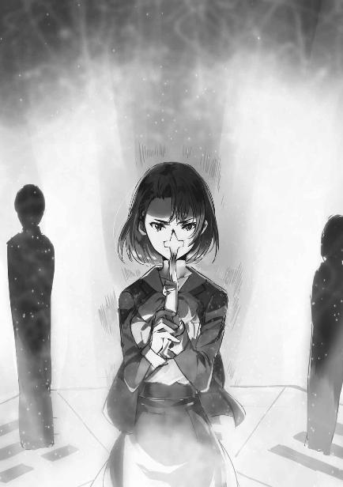
それは、人の形を抽象化した紙人形、呪符だった。
夕歌は人形の呪符を左手の人差し指と中指で挟み、顔の前に掲げた。
そして、呪文を唱える、のではなく、
左手首にはめたＣＡＤを右手で操作した。
夕歌から人形の呪符へ、魔法式が投射される。
魔法式を宿した呪符が、夕歌の左手から飛び立つ。
呪符はパラサイトに飛び掛かり、
コアとなっている霊子情報体を吸い込んだ！
ヒラヒラと呪符が風に舞う。
紙人形が落ちたのは、八角陣精神干渉結界の内側だった。
夕歌が新たな呪符を指に挟む。
危機を察知したのだろう。パラサイトの一体が、夕歌に雷撃を放つ。
その物理的な魔法を、克人のシールドが防ぎ止めた。
「あら、ありがとうございます」
「十文字家の魔法師がお守りします。津久葉さんは封印に集中してください」
克人と夕歌は何日も前に自己紹介を済ませてある。
今更余計な挨拶で時間を浪費せず、克人と夕歌はこの状況を鎮める為の、自分の仕事に戻った。
◇ ◇ ◇
海面すれすれを漂っていた封玉を回収し、達也がリーナの所に戻る。
守備隊とパラサイト化したスターダストの戦闘はまだ続いているが、戦況は拮抗しており、慌てて介入しなければならない状況ではなくなっている。達也とリーナが戦列に加われば、五分以内に片がつくだろう。
──いっそのこと、一気に終わらせてしまうか。
達也がそう考えた時だった。
飛行場に続く道から、小型装甲車が近づいてくる。
装甲車のドアが開き、運転席から花菱兵庫が降りてきた。
「達也様、お待たせ致しました」
「兵庫さん。いえ、ちょうど良いタイミングでした」
達也はヘルメットのシールドを上げてそう応えを返し、装甲車の後部ドアに目を向けた。そこに彼が依頼した、パラサイト封印の術者が乗っているはずだ。
装甲車右の後部ドアが開く。降りてきたのは戦場に似合わぬ涼やかなワンピースを着た、達也より一つ年下の少女だった。
「亜夜子？」
達也の声には意外感が滲み出ていた。
四葉の魔法師は二つのタイプに分かれる。精神干渉系魔法に高い適性を持つ魔法師と、ユニークで強力な希少魔法を持つ魔法師だ。
達也と亜夜子は共に後者のタイプ、精神干渉系魔法には適性が無い。だが、パラサイト封印術式には精神干渉系魔法に対する適性が必要だったはずだ......。
「達也さん、こんにちは。ほら、文弥！ 達也さんがいらっしゃるのよ。早く降りてきなさい！」
しかし挨拶に続く亜夜子の言葉で疑問が解消した。文弥の得意魔法『ダイレクト・ペイン』は精神干渉系魔法。光宣と痛み分けに終わった後、文弥は本家で封印術式を授かっていたのだろう。それで今回、こうして達也の要請に応えてくれたわけだ。
何故か愚図っていた文弥が装甲車から降りてくる。
達也は咄嗟に、挨拶の言葉を見失ってしまった。
「文弥......いや、ヤミか？」
「ヤミでお願いします......」
下半身につけている緋袴と同じくらい顔を真っ赤にして、蚊の鳴くような声で文弥が答える。
「そうか。......ヤミ、その格好は？」
「い、嫌だって言ったんですけど！」
泣きそうな声で文弥が達也に不服を訴える。
「封印術式に必要なんだから仕方が無いじゃない」
亜夜子の口調は突き放し気味だ。ここまで、文弥の愚痴を散々聞いてきたに違いない。
「封印に必要？」
達也は質問の相手を亜夜子に変えた。本来、そんな暇はないのだが、訊かずにいられなかったのである。
「パラサイト封印の魔法には、本来五人以上の術者が必要なのだそうです」
亜夜子のセリフは達也に対する回答であると同時に、文弥へ言い聞かせるものでもあった。
「でも今回は東京に人員を割いている所為で人数が揃わなくて」
「なる程。それで、文弥が一人で来てくれたんだな？」
文弥は四葉分家・黒羽家の跡取りだ。本来であれば父親の貢を補佐して黒羽家の魔法師を統率しなければならない。その文弥が巳焼島に派遣されたのは、四葉本家次期当主候補にも選ばれた魔法力を買われてのことだろう。
もっとも、それだけでは文弥がこんな格好をしている理由が分からない。
「異性装には、ある種の古式魔法の威力を高める効果があるそうです」
異性装。女性の男装。男性の女装。
「だからヤミが、巫女の姿をしているのか？」
そう。文弥の服装は上が白の単衣、下が緋袴。履き物は白い足袋に草履、ウィッグはいつものボブカットではなく、ロングストレートを背中で一つに束ねている。
何処からどう見ても「美少女な巫女さん」だった。
「ええ。人数が足りない分、こういう形で魔法を補強しなければならないと御当主様が」
「それは......すまなかったな」
達也は思わず本気で文弥に謝っていた。
彼が封印の術者をリクエストしたのは必要あってのことだったが、その所為で文弥が真夜の玩具にされてしまうなど、達也にとって予測不能であり不本意な成り行きだった。
「......いえ、達也兄さんが悪いわけではありませんから。それに、僕は僕の役目を果たすだけです！」
文弥が自分に活を入れる。
早く封印が終われば、それだけ早く巫女のコスプレから解放されると考えているのが、端から見て明白だった。
「そうか。ではまずこの三体を封印し直してくれ」
取り敢えず、文弥のやる気を殺ぐべきではない。
そう考えた達也は余計なことを言わず、「レグルスだったもの」「デネブだったもの」「ベガだったもの」を封じた三つの封玉を文弥に示した。
「これは......達也さんが？」
亜夜子と文弥が、興味津々の目付きで封玉を見詰める。
「しっかり封印されているように見えますが......？」
文弥の疑問に、達也は「いや」と頭を振った。
「約半日で封玉の効果は消える。それに非物質の状態では保管にも移送にも不便だ」
「そうですね......分かりました」
文弥が装甲車の後部左側ドアに回り、薬箱のような木箱を持って戻ってきた。
蓋を上に開けると、中には顔が描かれていないこけし人形が十六本入っていた。車の中には同じ木箱があと二つ。
文弥が箱からこけし人形を一本引き抜く。
亜夜子は大きめのスポーツバックから緋毛氈を取り出して道路に敷いた。
「始めます」
文弥が封玉の前にこけしを置いて緋毛氈の上に座り、帯に差していた細長い携帯端末形態のＣＡＤを手に取った。
文弥と、彼を見守る亜夜子から達也とリーナがそっと離れる。
「タツヤ......」
沈んだ声で達也を呼ぶリーナ。
達也は無言でリーナに目を向け、続きを促した。
「フミヤは」
リーナは亡命直後、黒羽家の世話になっていたので、文弥とも当然面識がある。
「すぐに着替えられると思う？」
「戦闘中のパラサイトを早急に無力化しよう。文弥がすぐに、封印に取りかかれるように」
パラサイトはまだ二十体いる。
達也は「気の毒に」という表情を隠さず、リーナにそう答えた。
何となく緊張感が薄れたムード。
だがそれは、達也の通信機に届いた緊迫した声に、欠片も残さず吹き飛ばされた。
◇ ◇ ◇
病院内に侵入した光宣と四体のパラサイドールは、階段を使って四階に上がった。水波の病室があるフロアだ。
病院の入り口から四階の廊下まで、光宣は妨害に遭わなかった。警備員に呼び止められるどころか、その姿も見なかった。
（罠......か？）
光宣を警戒していないということは考えられない。警備員だけでなく、他の入院患者も、看護スタッフもいないのだ。
しかし罠だとしたら、それはどのようなものか。光宣にはまるで見当がつかない。
病院の中に人の気配は、水波と、そして深雪のみ。
どんな罠を張っても、これでは水波を連れ出してくれと言っているようなものだ。光宣には、そんな風にすら思われた。
──気味が悪い。
その思いから、足取りは自然と重くなる。
パラサイドールに「不気味だ」などという感情は無い。だが主に同調して、その歩みはゆっくりしたものだ。
通常の倍近い時間を掛けて、光宣とパラサイドールは病室の前にたどり着いた。
中から攻撃してくる気配は無い。
光宣は一度深呼吸して、パラサイドールの一体に突入を指示した。
鍵の掛かっていないドアを開けて、パラサイドールが病室に足を踏み入れる。
次の瞬間、光宣は白く煌めく氷原を幻視した。
命の気配が無い、絶対的な静寂に包まれた氷の世界に立つ自分。
それは心臓が止まりそうな圧迫感をもたらす幻影だった。
そして、気付いた。
病室に足を踏み入れたパラサイドールが止まっている。
動作が停止しただけではない。
物理的に硬直しているだけでは、決してない。
戦闘用ガイノイドをパラサイドールたらしめているもの──パラサイトの本体が活動を止めている。
精神生命体が凍り付いている。
パラサイドールが、突き飛ばされたように廊下へ戻ってきた。
ドアとは反対側の壁にぶつかり、そのまま廊下に崩れ落ちる。
光宣には分からなかったが、パラサイトとつながっていた電子頭脳の機能が凍結され、機体のコントロールが失われているのだ。
病室の扉は開いたままだ。
中から人が出てくる気配は無い。
このまま時間が経過すれば、警備の魔法師が戻ってくる。
それだけではなく、達也が今にも、戻ってくるかもしれない。
光宣はレグルスたちが達也を長時間足止めできるとは思っていなかった。
彼らが達也に勝てる可能性はゼロだと考えていた。
今、時間は光宣の敵だ。
光宣は三体のパラサイドールに突入を命じた。
自身は全力の仮装行列と鬼門遁甲を纏って、そのすぐ後に続いた。
「コキュートス」
その呟きは、せめて自分たちに死をもたらすものの名前を教えてやろうという慈悲だったのだろうか。
再び襲い来る、絶対的な氷雪の世界。
光宣が展開していた、仮装行列の幻影が凍り付いた。
鬼門遁甲は、全く役に立たなかった。
仮装行列で身を、否、心を守っていなければ、自分の精神は凍死を迎えていた。それを光宣は、直感的に理解させられた。
外からの損傷は一切無く、床に崩れ落ちるパラサイドール。
ただの人形と化した女性型機械を挟んで、光宣は深雪と向かい合っていた。
静かにたたずむ深雪と、立ち竦む光宣。
動かない深雪と、動けない光宣。
先に口を開いたのは、深雪だった。
「目障りね」
そう言って深雪が、軽く右手を振る。
床に倒れたパラサイドールが、部屋の隅に掃き寄せられる。
「今のは......？」
光宣が呻くように問う。
彼が訊ねたのは、人形を動かした単純な移動系魔法についてではなかった。
深雪も、誤解はしなかった。
「精神凍結魔法・コキュートス。わたしの切り札よ」
深雪は冷たい声で、だが敵意の感じられない口調で、光宣の疑問に答えた。
「精神凍結魔法......？」
呆然と、光宣が呟く。
彼は、「それは何だ!?」と言いたかったに違いない。
だが深雪は、今度の問い掛けには答えなかった。
「光宣君。貴方は計算違いをしているわ」
「計算違い......？」
「貴方は、わたしが達也様より弱いと思っているのでしょう？」
「............」
「確かにわたしは、達也様より弱い」
光宣は無意識に、唾を飲み込んだ。
深雪の魔法ではなく彼女の言葉がもたらす緊張が、光宣の身体を拘束していた。
「でもパラサイトにとっての天敵は、達也様ではなくわたしなのです」
深雪の口調から、わずかに残っていた親しみが消える。
「わたしはパラサイトの本体を殺すことができる。精神生命体であるパラサイトは、わたしのコキュートスに抗えない」
「精神凍結魔法......。精神を、凍死させる魔法ですか......」
「コキュートスは精神を止めてしまう魔法です。物理学では、絶対零度でも原子の振動は止まらないことが分かっています。ですがコキュートスを浴びた精神は、完全に停止し、二度と動き出すことはありません」
「精神的な、絶対零度......？」
「肉体という確固とした存在とのつながりを持たない精神は、情報体を保てず霧散します。精神生命体の消滅です」
「......クッ......」
深雪の言葉は正しかった。光宣は自分の計算違いを認めぬわけにはいかなかった。
達也だけを引き離すのでは、不十分だった。陽動を企図するなら、むしろ深雪を遠ざける方が重要だったのだ。
「光宣君。この場から立ち去りなさい」
「えっ!?」
意外感を示したのは、光宣だけではなかった。
深雪の横に立って、深雪と光宣を横から見ている水波も無言で意外感を露わにしていた。
「貴方を捕まえるのは達也様のお仕事。わたしは水波ちゃんを守れればそれで良い」
「............」
「逃げなさい、光宣君。わたしは追い掛けません」
深雪の言葉に噓が無いことは、理屈ではなく分かった。ここで引けば、自分は逃げられる。そう囁きかける卑怯な自分を、光宣は自身の中に見出した。
「......できない」
だからこそ、光宣は深雪の勧告を受け容れられなかった。
「僕は、水波さんを救う為、ここに来た。我が身惜しさに、引き下がれない」
自分が愚かな真似をしているという自覚はある。だが次の機会を作り出せる自信も、光宣にはなかった。
──これが、最後かもしれない。
──今を逃せば、水波に手が届かなくなる。
それが光宣に、賢い選択をさせなかった。
「そう......残念です」
深雪が光宣へ右手を差し伸べる。
コキュートスにジャスチャーは必要無い。
これは光宣に、翻意の時間、逃げ出す時間を与える為のものだった。
光宣から攻撃を受ける心配はしていない。さっきのコキュートスが光宣の精神を掠めたこと、その結果光宣の魔法技能が一時的に低下していることを、深雪は見抜いていた。
しかし光宣は、それでも、逃げなかった。
右手を差し伸べた姿勢のまま、深雪の顔から完全に表情が消えた。
その、直後。
「お止めくださいっ！」
深雪を制止する声が上がる。
その声の主は、水波だった。
水波は深雪に取りすがるのではなく、光宣に駆け寄り、彼を背中に両手を広げた。
光宣をかばって、深雪の前に立ちはだかっていた。
「水波ちゃん、何を......」
深雪が目を見開き、立ち竦み、呆然と呟く。
だが深雪はすぐに、我を取り戻した。
彼女は水波を説得しようとはしなかった。
──水波は自分でも何をしているのか分かっていない。
──それより、その体勢では追い詰められた光宣が何をするか分からない。
それが深雪の判断だった。
深雪はコキュートスを発動しようとして、
「水波ちゃん、止めなさいっ！」
障壁魔法を全力で発動しようとしている水波を、声の限り制止した。
「深雪さま、お願いです！ お止めください！」
「何故......？」
深雪は身動きが取れなくなった。自分が魔法を使えば、水波も魔法を使う。
深雪のコキュートスは物理的な事象改変を引き起こすものではない。水波の魔法障壁では、コキュートスは防げない。
だがコキュートスを防ごうとして魔法力を振り絞れば、水波の魔法演算領域は焼き切れ、彼女の命も燃え尽きるかもしれない......。
「水波さん、ごめん！」
光宣が深雪の迷いを突く。
光宣の腕が、水波の腰に回される。
後ろから水波を抱きかかえた状態で、光宣は後方に跳躍した。
窓を破るのではなく、空中を滑って階段へ。
深雪も病室を飛び出したが、光宣の肩越しに自分を見る水波の眼差しに、魔法を放てなかった。
深雪が魔法を撃てば、水波がそれを防ぐ。
その予測が、恐怖が、深雪の心を縛った。
光宣が踊り場の窓から病院外に脱出する。
それを見届けている余裕は、深雪には無かった。
彼女は病室に駆け戻り、何度も操作をミスしながら達也の通信機を呼び出した。
◇ ◇ ◇
『お兄様、水波ちゃんが！』
深雪の悲痛な叫びが、達也の心に失われ掛けた緊張を呼び戻した。
「深雪、何があった」
達也は緊張と共に呼び起こされた焦りを抑え、努めて冷静に問い返した。
『水波ちゃんが光宣君に！』
「攫われたのか!?」
『はい！ いいえ！』
すっかり動揺しているのか、深雪の言葉は全く要領を得ない。
「深雪、すぐにそっちへ戻る」
しかし達也は、深雪を問い詰めようとはしなかった。
「いいか、深雪。俺が、お前の許に戻る」
『......はい』
力強い達也の言葉が、深雪の狼狽を、少しだけ取り除いた。
「深雪。俺がついている」
『はい......はい！』
達也はいったん深雪との通信を切って、リーナへ振り向いた。
「タツヤ、行ってあげて」
達也が話し掛けるより早く、リーナが達也に告げる。
「ここはワタシが引き受ける。達也は早く、ミユキの所へ」
「頼んだぞ、リーナ」
亜夜子、文弥には声を掛けず、達也はエアカーに駆け寄った。
運転席に乗り込むや否や、エアカーが急発進する。
その音に亜夜子が振り向く。
亜夜子と、リーナと、無言で状況を見守っていた兵庫に見送られて、淡いブルーのエアカーは東京へ向け飛び立った。
〔追跡編へ 続く〕
あとがき
以上、『魔法科高校の劣等生』第二十七巻『急転編』をお届けしました。お楽しみいただけましたでしょうか。
比較の対象がありませんから単なる思い込みかもしれませんが、私はタイトルやサブタイトルに結構悩む方だと思っています。シリーズプロットを作成した段階で一応、サブタイトルを決めておくのですが、執筆前にプロットを見直す段になってもう一度サブタイトルに悩んでしまいます。
そこでサブタイトルを変更するケースもあります。例えば『古都内乱編』はシリーズプロット段階では『京都謀略編』でした。逆に、良いタイトルが思い浮かばずしっくりこないままシリーズプロット段階のものを採用したケースもあります。『動乱の序章編』がこれに当たります。『師族会議編』も『十師族波乱編』に変えようかどうしようかと悩みましたが、結局当初案の『師族会議編』としました。
今回は、今までで最も悩みました。元々二十四巻の段階でシリーズプロットを全面的に見直しましたので最初に用意していたサブタイトルは使えなくなっていましたが、見直し段階では二十六巻と二十七巻を『インベージョン編』の上下とするか、それとも『背信編』とするか、『急転編』とするか、本文執筆直前まで悩んでいました。
『インベージョン編〈下〉』とする為には二十六巻刊行に間に合うよう決定しなければなりませんから、余り時間を掛けてはいられません。結局、『インベージョン編』の上下案は没、『背信編』はネタバレ要素が強すぎるので『急転編』で書き始めましたが、正直なところ第一稿を書き終わった段階でもまだ悩んでいました。
逆に次章の『追跡編』は、ほとんど悩まずに決定したサブタイトルです。何故このタイトルなのかは、今回の『急転編』を読んでいただいた方にはお分かりだと思います。その次も自分の中ではほぼ決まっているのですが、こちらはネタバレ要素が強いので今のところ内緒です。
次章の『追跡編』は上下巻構成になる予定です。言うまでもなく、達也による光宣の追跡がメインテーマですが、同時並行して一高の同級生も活躍します。将輝、茜の兄妹と劉麗蕾のエピソードも、あれで終わりではありません。『追跡編』はかなり盛り沢山なものになると思います。
急展開が続く『魔法科高校の劣等生』を、最後までよろしくお願いいたします。
今回も、お読みいただきましてありがとうございました。
（佐島 勤）
本書に対するご意見、ご感想をお寄せください。
電撃文庫公式ホームページ 読者アンケートフォーム
https://dengekibunko.jp/
※メニューの「読者アンケート」よりお進みください。
ファンレターあて先
〒102-8584 東京都千代田区富士見1-8-19
電撃文庫編集部
「佐島 勤先生」係
「石田可奈先生」係
本書は書き下ろしです。
この物語はフィクションです。実在の人物・団体等とは一切関係ありません。
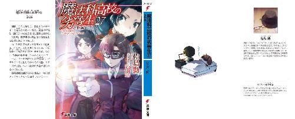
魔法科高校の劣等生㉗
急転編
佐島勤
電撃文庫
2018年11月10日 発行
©Tsutomu Sato 2018
本電子書籍は下記にもとづいて制作しました
電撃文庫『魔法科高校の劣等生㉗ 急転編』
2018年11月10日 初版発行
発行者 郡司 聡
発行 株式会社ＫＡＤＯＫＡＷＡ
カスタマーサポート（アスキー・メディアワークス ブランド）
［WEB］https://www.kadokawa.co.jp/
（「お問い合わせ」へお進みください）
装丁者／荻窪裕司（META＋MANIERA）
本作品の全部または一部を無断で複製、転載、配信、送信すること、あるいはウェブサイトへの転載等を禁止します。また、本作品の内容を無断で改変、改ざん等を行うことも禁止します。
本作品購入時にご承諾いただいた規約により、有償・無償にかかわらず本作品を第三者に譲渡することはできません。
本作品の内容は、底本発行時の取材・執筆内容にもとづきます。